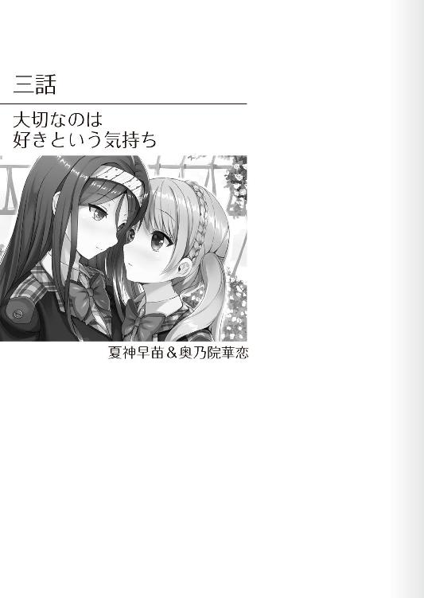

| 学園百合ストーリーズ 3つの恋花 (二次元ドリーム文庫) | |
| 上田ながの | |
| (2015) | |
※本作品の全部あるいは一部を無断で複製・転載・配信・送信したり、ホームページ上に転載することを禁止します。本作品の内容を無断で改変、改ざん等行うことも禁止します。また、有償・無償にかかわらず本作品を第三者に譲渡することはできません。
※本作品は電子書籍配信用に再編集しております。
私──三日月蒼葉には好きな人がいる。
それはとてもとても大切な人だ。誰よりも、自分よりも......。
あの子と結ばれることができたら、恋人になることができたらどんなに幸せだろうか？ どれほど嬉しいだろうか？
考えるだけで胸がドキドキと高鳴る。
あの子と腕を組んで、ギュッと身体をくっつけて歩きたい。あの子とキスをしたい。唇と唇を重ね合わせたい。いや、唇だけじゃない。心も身体も一つになりたい──そう思う。
でも、だけど、私はあの子にこの想いを伝えることはないだろう。ずっとずっとこの想いは胸の奥に秘め続けるのだ。誰にも教えることなく、誰にも伝えることなく......。
だって、想いを伝えたところで受け入れてなどもらえないから。絶対に拒絶されてしまうから。
私とあの子が結ばれることなど絶対にない。永遠にあり得ないのだ。
何故ならば、あの子は私と同じ女の子なのだから......。
＊
『アサダゾ！ オキロ！ オキロッ!! アサダゾオオオオ!!』
朝──室内に無感情な機械音声が響き渡る。
「......う......うるさい......」
この音声に反応するように、ベッドの中で蒼葉はもぞもぞと蠢く。低血圧気味のせいでボーッとした頭にガンガン響く機械音が実に不快だった。
早く止めて、夢の世界にもう一度ダイブしたい。が、そのためにベッドから起きるのも実に億劫である。
（......無視......しよう......）
そう決めた。
うるさいとはいえ布団を頭から被れば耐えられる。だから寝る!! こんなもの無視して眠り続けるのだ！ 目覚まし時計ごときに負けて堪るか！ 低血圧舐めんなよ!!
決意と共にガバッと布団で頭まで覆った。
「起きて」
だがその刹那、機械音声が止まる。それと共に、機械音声とは微妙に違うけれど、やはりどこか無感情さを感じさせる声が蒼葉の耳に届いた。
同時に頭まで被っていた布団がガバッと捲られる。
「ふぇっ!?」
唐突な出来事に思わず瞳を開ける。
「......起きて......蒼葉」
ベッド脇には一人の女の子が立っていた。
ショートカットの少し青みがかった感じのする髪に、赤いフレームの眼鏡をかけた女の子が......。
細身の身体をブレザータイプの制服で包み込んでいる。スカートから伸びる足を隠す黒いストッキングがとてもよく似合って見えた。
眼鏡をかけた顔立ちは、とても整っている。翡翠のような瞳に真っ直ぐ伸びる鼻梁。肌の色は雪のように白い。細身で小柄な身体と相まって、なんだかとても儚げな印象を見るものに与えていた。そのせいだろうか？ 一見するとまるで人形のようにすら思える。
一瞬、そんな女の子に蒼葉は眠気すら忘れて見惚れた。
「もう春休みは終わり......。今日から学校......始まる。入学初日から......遅刻する気？」
呆然と見つめていると、女の子──蒼葉にとっては幼稚園に入る前からの幼なじみであり、一番の親友である桃園雪菜がいつも通り、あまり感情を感じさせない口調でそう伝えてきた。因みに家も隣同士である。
「へ？」
遅刻？ 入学？ なんのこと？
寝惚けているせいか、最初雪菜が向けてきた言葉の意味を理解することができず、思わず首を傾げてしまう。
すると幼なじみは無言で壁に掛けられたカレンダーを指差した。
一体何だろうかと釣られるようにそちらへと視線を向ける。
本日の日付は四月四日──カレンダーのその部分には赤丸がつけられ『入学式!!』とでかでかと書いてあった。
「......あっ！ わっ！ わぁあああああっ!!」
そこで今日がなんの日かということに気がつく。慌てて蒼葉はガバッとベッドから上半身を起こした。
そうだ。今日は入学式だ。今日から自分は私立神ノ原学園高等部の生徒となるのだ。そのことをすっかり──
「忘れてた？」
小首を傾げながら雪菜が尋ねてくる。
「当たりっ!! 当たりよっ！ まずい！ まずいまずいまずいっ!! 遅刻！ 初日から遅刻よぉおおおおおっ!!」
血の気が引いていく。
どうしようどうしようどうしよう──この日を楽しみにしてたのに。まさか、初日からこんなことになるなんてぇええええっ!!
蒼葉の頭の中は大混乱状態だった。
「......大丈夫。問題ない」
しかし、雪菜は涼しい顔で告げてくる。
「問題ない？ ほ......ほんとに？」
この問いかけに対し、雪菜は先程カレンダーにした時のように、無言で壁際に置かれた時計を指差した。
時間は──
「あれ？ なんか......いつもより......早い？」
明らかに普段自分がセットしている時間よりも早い。
「なんで？」
「......蒼葉のことだから寝坊すると思った。だから昨日遊んだ時、時間を変えておいた」
簡潔に何をしたかを伝えてくる。
「そうなんだ......そっか......そうかぁああ......」
なんだか肩から力が抜けていくのを感じた。安堵感が心の中に広がっていく。同時に雪菜に対する感謝の気持ちも......。
「ありがとね！ 雪菜っ!!」
ベッドから起き上がると共に、ギュッと雪菜の身体を抱き締めた。
細身の身体。今にも折れてしまうんじゃないか？ と思うくらいである。でも、フワッとしていてとても柔らかい。抱き締めているだけで、なんだかとても心地よくなってくるような身体だった。
（このままずっと抱き締めていたい）
そんなことを考えてしまう。
自然と雪菜の身体に回した腕に、ギュッと力を込めてしまう自分がいた。
「......蒼葉......痛い......」
耳元に幼なじみの声が届く。
（あ......ま......まずいっ!!）
蒼葉は正気に戻った。
「え？ あ......ご......ごめんね！ ごめんごめんっ!! めんご～！」
慌てて幼なじみから離れる。
「めんごって......」
「あは......あははは」
誤魔化すように笑ってみせた。
ドキッドキッドキッと心臓を早鐘のように打ち鳴らしながら......。
＊
洗面所で鏡を前に、いつものように背中まで届く長い髪をリボンでポニーテール状にまとめ上げていく。
多少丸みを帯びた瞳に艶やかな自身の唇を見つめる。
（うん。私だってそう悪くはないわよね。結構可愛いんじゃない？）
なんて自画自賛しながら。
でも、そんな感情はすぐに消え失せてしまう。
取って代わるように浮上してきた感覚は、ついさっき感じたようなドキドキだった。
先程抱き締めた際に感じた雪菜の柔らかさを思い出してしまう。ポカポカとした体温の温かみを思い出してしまう。
雪菜はあんまり感情を表に出さない子だ。ぱっと見何を考えているのかまるで分からない。でも、長い付き合いだから蒼葉は知っている。雪菜がとっても人のことを思ってくれている子だということを......。
今日だってわざわざ起こしに来てくれた。目覚まし時計の時間だって早めに合わせてくれている。本当にいくら感謝してもし足りない。
「雪菜......」
鏡を見つめながら幼なじみの名を口にする。
自分の口から出た言葉だというのに、どうしてだろうか？ 雪菜の名を耳にするだけで、これまで以上に心臓が高鳴っていくのが分かった。
（私には好きな人がいる......。ずっとずっと......昔から好きな人が......）
いつも自分と一緒にいてくれる人だ。自惚れではなく、いつも自分のことを想ってくれている人だ。
（だけど......この気持ちを伝えることなんかできない......）
それを伝えたらすべてが終わってしまうから......。
自分とあの子の関係。これまで築き上げてきたものなんて、一瞬で崩れ去ってしまうだろう。
（だってあの子は......雪菜は私と同じ女の子なんだから......）
いつから雪菜のことが好きだったのか？ それは自分でも分からない。本物の姉妹のように──いや、それ以上にずっとずっと一緒にいたせいで、彼女に対する自分の感情変化に気付くことができなかった。
だから、本当に好きになった時期を正確に思い出すことは自分でも不可能である。
しかし、気持ちを自覚した時期は正確に記憶していた。
あれはそう、去年の修学旅行の夜のこと──。
その日、蒼葉はクラスメートの男子に呼び出しを受けた。一体何の話か？ その時の蒼葉にはまるで想像もつかなかった。
そのため雪菜にもこっそりついて来てもらったのである。
そこで告白された。
ずっと好きだったと、その男子生徒に......。
蒼葉にとってそれは初めての告白だった。
（だけど私はときめきを感じなかった。あの時告白してくれた春馬くんとは結構仲がよかったけど、好きって言ってもらえたことを嬉しいって思えなかった......）
それどころかむしろ心配になってしまったことをよく覚えている。
何が心配だったのか？ それは雪菜の気持ちだった。
告白された自分を見て雪菜はなんと思うだろうか？ もしかして「よかった」って思っているのだろうか？
そんなことを考えると、それだけで胸が締め付けられるように苦しくなった。
どうして自分がそのような反応を示してしまうのか？ さっぱり理解できなかった。
でも、告白の返事を保留した後雪菜から自分に向けられた、
「......おめでとう......蒼葉」
という言葉を聞いた瞬間、蒼葉は自分の気持ちをはっきりと認識したのである。
私は雪菜のことが好きなんだ──という想いを......。
（でも......だからって雪菜に告白なんかできるわけもないけどね......）
考えると悲しくなってくる。
なんだか涙が零れ落ちそうに......。
（って！ 駄目駄目！ 今日は入学式なんだからスマイルスマイルっ!! 雪菜に心配かけるわけにはいかないでしょ!!）
ニカッと鏡に向かって笑ってみせた。
ちょうどそんなタイミングで、ガチャッと洗面所のドアが開く。
「蒼葉......遅い」
入ってきたのは雪菜だった。
幼なじみは鏡を見ながら笑うこちらを見て──
「......蒼葉......気持ち悪い......」
ポツッと呟いた。こういうところ、雪菜は結構容赦がない。
「あ......これは......違う！ 違うのよぉおおおっ!!」
何が違うのかは自分でも分からないけれど、取り敢えず弁解しようとするのだが、
「えっと......ごゆっくり」
雪菜はあっさり出ていってしまった。
「待って！ 雪菜ぁ！ 雪菜ちゃぁあああんっ!!」
情けない悲鳴が洗面所に響き渡る。
＊
「さて......雪菜くん！ 今日から私達は晴れて高等部の生徒となったわけだ！」
入学式を終え、新たにクラスメートとなる生徒達と挨拶をした日の帰り道、グッと蒼葉は拳を握り締めながら自分の隣を歩く幼なじみに告げた。
「うん。だから？」
静かに小首を傾げてくる。
「だからって......その......今日から私達は新しい生活を始めるわけじゃない？ だからさ、心機一転私達もこう......生まれ変わろうと思ったわけよ！」
疑問に答えつつ、ドヤアッと胸を張ってみせた。
「生まれ変わる？ どうやって？」
「どうってそりゃ......その......か......彼氏を作る......とか？」
彼氏を作る──その単語を口にする瞬間、少し声が震えてしまう。一体雪菜がどんな反応をするのか？ 探るような視線まで向けてしまう自分がいた。
「なるほど」
しかし、雪菜の表情はまるで変わらない。普段と同じ感情をあまり見せない涼しげなもののままだった。
そのことに少しだけホッとしつつ、僅かに寂しさのようなものも覚えてしまう。
「でも、彼氏なら春馬くんが......」
「あ......いや......あの時はその、まだそういう気分じゃなかったし。その、ほら、あいつ今は付き合ってる相手がいるらしいしさ。いや～、ビッグチャンスを逃しちゃったわ～。あはははは」
誤魔化し笑いをする。我ながらわざとらしいが仕方ない。
「ま、まぁそういうわけだから、一から相手を探さないとね。でもって、新生活の始まりってのはそういうことに精を出すに相応しい時期だと思わない？」
「まぁ......確かに」
「でしょ？ だから......一緒に頑張るのよ！ まだ見ぬ彼氏を探すのっ!!」
ビシッと特に意味もないけれど、空を紅く照らす夕日を指差してみせた。
「一緒？ 私も？」
「もちろんよ！」
だってそうじゃないと意味がないから。
彼氏を作るなどと口にはしたものの、正直なことを言うと蒼葉にはそんな気なんてまるでなかった。何故ならば雪菜のことが誰よりも、誰よりも誰よりも誰よりも誰よりも──大好きだから。
こんなに好きな相手がいるのに、彼氏なんか作ることはできない。自分も苦しいし、相手にだって申し訳なさすぎる。
では何故こんな宣言をしたのかというと、それはもちろん雪菜に彼氏を作ってやるためだった。
何故そんなことをしようと思ったのか？ それは雪菜のため？
そんなの違う。
これは自分のためなのだ。言い訳なんかできやしない。
（雪菜に恋人ができれば諦められるかもしれない。この苦しみから解放されるかもしれない......そう思ったから......）
ただ、それでも──
（もしそれで雪菜が幸せになれるのなら......。それはそれで嬉しい）
という想いだってなかったわけじゃなかった。
口数が少ない雪菜。いつもクールで何を考えているのかよく分からない。とっつきにくい性格というべきだろうか？ そのせいで雪菜には恋人どころか友達と呼べる人間すらいなかった。
（だから恋人は無理でも、せめて私以外にも友達を作ってあげたい）
別に友達が多いこと＝幸せ──とは思っていない。それでも、もっと話す相手が増えれば価値観だって変わるかもしれない。雪菜には色々なことを知ってもらいたかった。
「そういうわけだから恋人を作りましょう！ いえ、恋人じゃなくてもいい──友達でも構わないわ！」
キラキラと目を輝かせながら、グッと拳を握り締めつつ、真っ直ぐ雪菜を見つめながらそんな言葉を向ける。
「......別にいらない」
だが、蒼葉の想いはたった一言であっさり切り捨てられてしまった。
「どどど......どうしてよぉっ!?」
何で分かってくれないのか？
この問いかけに対して返ってきたのは──
「どうしてって......だって、私には蒼葉がいるから」
「はうううっ!!」
熟練スナイパーのように、ズキューンと容赦なく蒼葉の心を一撃で撃ち抜く言葉だった。
思わず胸を押さえ、グラッと身体をよろめかせてしまう。
「......どうかしたか？」
「あ......い......いや......別に......な......ななな......なんでもないわ。そう......なんでもないの。き......気にしないで......」
なんでもない風を装って答える。しかし、蒼葉の顔は真っ赤に染まっていた。
心臓だって、バクッバクッバクッと破裂してしまうんじゃないか？ と思うほどに激しく鼓動する。
（ああ、ほんと可愛い。雪菜......あんた......可愛すぎなのよぉ！）
抱き締めたい。思いっきり抱き締め、自分がどれだけ雪菜を好きか伝えたい──抑えがたいほどに想いが膨れ上がってくるのを感じた。
やっぱり雪菜に恋人なんか作らせたくない。雪菜が自分以外の誰かと一緒にいるところなんか想像すらしたくなかった。
（でも......それは駄目......駄目なの......。だって......）
何で自分は女に生まれてしまったのだろう？ 何で雪菜は男の子じゃないんだろう？
自分が女として生まれたことをこれほど後悔した日はなかったと思う。
（やっぱり恋人......友達でもいい。作ろう。雪菜に私以外にも大切だって思える人を作ってあげるの。そうすれば......少しは......）
楽になれるかもしれない。
楽になりたい。
自分のことばかり考えてしまう。
そんな自分自身に、少し自己嫌悪を覚えたりもした。
＊
入学式から大体一ヶ月が過ぎた。
さすがに一ヶ月も過ごせば新しいクラスメート達とも馴染み、これまでとは違った友人もたくさんできた。
ただし、それはあくまでも蒼葉の話である。雪菜はというと──相変わらずだった。
基本蒼葉といない時はいつも一人でいる。窓際の席で一人本を読んでいるか、ボーッと外を見ているかのどちらかといったところだ。
ただ、別にみんなから無視をされているというわけではない。雪菜の方が交渉を拒んでいるといった状態だった。
（というかむしろ......何を話しかけても一言二言しか返さないから、みんなどう付き合えばいいのか分からないって感じね）
雪菜は可愛い。これは好きだという気持ちによる贔屓目なしに言えることだ。
だからこそ、クラスのみんなだって雪菜と仲良くなりたがっている。しかし、仲良くなる術が分からない。
当然蒼葉も間に入り、仲を取り持ってみようとしたけれど、それでも雪菜が同級生達に興味を持つことがなかった。
雪菜の前には巨大な壁が存在しているとでもいうべきか......。
（あれをなんとかしないと、雪菜に友達──ましてやこ......恋人を作ることなんて不可能ね。でも......どうする？ どうやってこの態度を治す？ このままじゃ中等部の時と同じことになっちゃうわ......。でも......う～ん......）
考えても答えは出ない。
いっそ誰かもっと積極的にグイグイ雪菜に話しかけてくれる人はいないものだろうか？
（そういや前に先生が......）
ふとそこで思い出す。
数日前、蒼葉達の担任教師である井村茉莉子先生が雪菜に、
「なぁ桃園......お前さ、部活とか入ってないから、放課後暇なんだろ？ だったら、もしよかったらあたしのところに遊びに来ないか？」
なんて話しかけて来たことを......。
（あの誘い......受けさせるべきだったかしら？ 先生を友達とは言えないけど、話し相手はできるわけだし、もしかしたら先生の知り合いとの人間関係ができるかも──って、駄目駄目！ あの先生は駄目っ!!）
途中まで考えたところでブンブンッと首を振り、思い浮かべたことを捨て去る。
井村先生は気さくで話しやすい、いい先生だ。それは間違いない。けれど、噂で聞いたことがある。生徒をモデルにヌードデッサンを描いているという話を......。
「ちょっと絵の手伝いをしてもらいたいんだけどさ......。駄目かな？」
絵の手伝い──それが何を意味しているのかは分からない。でも、もし噂が本当だったとしたら......。
「だ......駄目ぇえええええっ!!」
考えた途端、気付けば声を出してしまっていた。
ヌードなんかさせられない。絶対に！
雪菜の裸を誰かに見られるなんて耐えられないから。
（って......だけどさ......もし恋人なんか作ったら......）
場合によっては服を脱いで裸になる──なんてこともあり得るわけで......。
考えるだけで頭がクラクラして、息が詰まる。
（ああもう、どこかに私の悩みを解決してくれる人がいないかしら......）
我ながら実に他力本願だった。
「どうかした？」
そんな蒼葉にパタンッと読んでいた本を閉じつつ、雪菜が声をかけてくれる。
「もしかして......具合が悪い？」
「いえ......別にそういうわけじゃ......」
「......そう......」
一言呟くと、再び雪菜は本を開いた。
が、またすぐに本を閉じ、再びこちらを見つめてくる。
「雪菜？」
「無理......しないで......。どこか悪かったら、言って......」
首を傾げる蒼葉にそう一言告げると、再び雪菜は本へと視線を落とした。
（......雪菜）
短い言葉でしかない。けれど、自分のことを心配してくれている。幼なじみのその気持ちが堪らないほどに嬉しかった。
でも、喜びが大きければ大きいほど胸も痛む。
雪菜はすぐそこにいる。でも、手を伸ばしても届かない......。
＊
そんなある日の昼休みのことだった。
「ちょっと職員室に行ってくる」
いつもの様に雪菜と一緒にお昼を食べた後、さてこれから何をしようかと考えている最中、突然幼なじみがそんな言葉を蒼葉へと向けてきた。
「職員室？ 何で？」
「......井村先生にちょっと」
「茉莉子先生に？」
一体何だろうか？
「って......もしかして、先生の手伝いするつもりになったとか？」
「違う」
あっさりと否定してくる。
「先生はもう手伝いを見つけたらしい」
「あ、そうなんだ」
少しホッとしつつ、ちょっと驚く。まさか引き受けるような人間がいるとは......。ここの生徒なのだろうか？ もしかしてやっぱりヌードじゃないとか？ ちょっと気になる。
「次の授業に使うプリントを取りに来てと頼まれてる」
が、誰が手伝いになって、何をしているのか？ なんてことを雪菜は教えてくれなかった。まぁ仕方がない。
「そういえば今日雪菜が日直だったっけ......。雑務までやらされるとこがめんどくさいわよね。よし、それじゃあ行こっか」
どうせだから先生にモデルの話も聞いてみよう──そんなことを考えながら、「手伝うわね」なんて言葉も向けることなく、ごく普通に立ち上がった。雪菜がやることはすべて手伝う。当たり前の様にそう思っていた。
「あ......その......三日月さん。ちょっといい？」
しかし、呼び止められてしまう。
「ん？ なに？」
呼び止めてきたのはクラスメートの男子だった。名前は水上龍馬。成績優秀でクラス委員も務めている同級生である。
「ちょっと話があるんだけど......」
「えっと......」
雪菜へと視線を向ける。
「私は大丈夫」
「......ごめんね」
雑務をやらされる雪菜を手伝えないことは辛い。とはいえクラスメートを無下に扱うこともできなかった。
「それで......話ってなに？」
教室から出て行く雪菜の後ろ姿に寂しさを感じつつ見送った後、龍馬に尋ねる。
この問いかけに対し、龍馬はちょっと迷うような表情を浮かべつつ──
「ちょっと聞きたいんだけど、桃園さんって誰か付き合ってる人とかいるのかな？」
なんてことを尋ねてきた。
「──へ？」
まるで予想外の問いかけ。思わず間の抜けた声を漏らしてしまう。
「えっと......ど......どういうこと？ 何でそんなことを？」
龍馬と雪菜にはまるで接点というものがない。というよりも、このクラスで──いや、この学校で雪菜と個人的に繋がりがあるのは自分だけだった。
だからこそ、驚いてしまう。
どうしてそんなことを聞いてくるのだろうか？
思わず問い返す。何故そんなことを聞くのか......と。
すると龍馬は僅かに逡巡するような様子を見せた後──
「どうしてってその......えっと......実はさ......俺......桃園さんのことが好きなんだ」
そうはっきりと口にしてきた。
＊
「あのさ......雪菜......」
その日の夜、蒼葉は自室にて、一緒に宿題や明日の予習をするためにやって来ていた雪菜にちょっと緊張しながら声をかけた。
「なに？」
開いていたノートに走らせていたペンを止め、幼なじみは顔を上げる。
眼鏡下でキラキラ輝く宝石のような瞳をこちらへと向けてきた。
やっぱり可愛い。毎日顔を合わせている。一緒にいない時間の方が短いくらい近い間柄だ。だというのに、一瞬見惚れてしまう。
「どうかした？」
「え？ あ......なんでもない。えっと......その......それよりさ......」
アハハっと誤魔化し笑いを浮かべた。
笑わなければなんだか涙が出てしまいそうだったから......。
「こ......今度の日曜......暇？」
揺らぐ心に気付かれまいとするように話を続ける。
「日曜？ 特になにもない」
「そっか......よかった......。ならさ、一緒に出かけない？」
「出かける？ どこに？」
「ほら......最近できたじゃん。ちょっと遠いけどアウトレット」
「......ニュースで見た」
「でしょ！ 一緒に行かない？」
「..................」
問いかけに対して雪菜は押し黙る。
実を言うと雪菜は遠出というものが嫌いだった。遊ぶ時も大体どちらかの家で本を読んだりＤＶＤを観たりといった感じである。
（やっぱりイヤだったかな？ でも......それならそれで......）
正直断られたって構わない。そう思った。
だが──
「分かった」
しばらく逡巡はしたけれど、雪菜は頷いてくれた。
「......あ、ありがと......」
けれどどうしてだろうか？ 何故か喜べない自分がいる。礼の言葉もどこか力がないものになってしまっていた。
「......ん？ どうかした？」
当然付き合いの長い雪菜はこれに気付き、小首を傾げてくる。
「へ？ あ......なんでもないなんでもない。あははは」
これに対し、慌てて蒼葉は笑ってみせた。
「よし！ それじゃあアウトレットでどの店に寄るかとかは私が考えておくから、雪菜は楽しみにしていてね！」
多少わざとらしくはあるけれど、元気に振る舞ってみせる。
「..................」
これに雪菜は最初「何かおかしい」とでも言いたげな表情をしていたが、しばらく笑い続けているとその疑念も晴れたらしく、
「わかった。楽しみにしてる」
そう言って珍しく口元に笑みを浮かべてみせてくれた。
普段ほとんど無表情な雪菜の笑顔。
（ああ......やっぱりいいな雪菜は......）
心の底からそう思った。
ただ、そう思いつつもズキッと胸に痛みを覚える。
脳裏に今日の昼休みの出来事が蘇ってくる。
雪菜を好きだと語った龍馬。そんな彼に対し──
「そっか......雪菜のことが......。うん。分かった。私に任せておいて!!」
ドンッと胸を張ってみせたことを......。
（何で私......あんなこと......。でも......だけど......水上くんなら......）
悪い相手じゃない。できすぎているくらいだ。
成績優秀でクラス委員。顔立ちだってそこそこ整っている。悪い噂だって全然聞かない。むしろいい評判ばかりだ。
雪菜の相手としてこれほど相応しい相手もいないんじゃないだろうか？
（そう......水上くんならきっと雪菜を幸せにしてくれる......）
雪菜の幸せこそが自分の幸せなのだから......。
＊
（ああ......どうしよう？ 何を着てこう？ 雪菜と出かけるのに相応しい服は!?）
日曜の朝──低血圧とは思えないほど早朝に目を覚ました蒼葉は、鏡の前で繰り返し服を着替えながら、ああでもないこうでもないとひたすら悩んでいた。
何しろ今日は雪菜と二人でお出かけである。
ある意味ではデートではないか!!
誘いを受けてもらった際には素直に喜ぶことができなかった。けれど、実際当日になってみるとやはりワクワクしてしまう。折角のデートなのに、暗いままでは面白くない。今日は精一杯楽しんでやろう──それ故の早起きであり、服選びだった。
「よし......これにしよう!!」
そうして服を選び始めてから二時間──ようやく今日のコーディネートを決定する。
薄手のインナーにカーディガン、それにベージュのパンツというスタイルだ。
（結構身体のラインが強調されちゃってる感じがするけど......。ふふ～ん、私って案外スタイル悪くないよね）
鏡を見ながらまるでモデルのようにポージングを決めてみせる。
（可愛いってよりもカッコイイ感じかな？ でも......リボンがそこに彩りを添えてる。これなら雪菜だって見惚れちゃうんじゃない？）
なんてことを考えながら──
「バキュ～ン！ なんてね」
銃を撃つような格好をしてみた。ハートを撃ち抜くぜってところである。
「.........あ......おは？」
「──へ？」
そんな時、唐突に背後から声が聞こえた。
そこには──
「あれ？ ゆ......ゆゆゆ......雪菜さん？ えっと......なんでそんなとこに？」
日曜だというのに制服を身に着けた雪菜が立っていた。
「その......蒼葉が遅いから迎えにきた」
「お......遅い？」
慌てて壁に掛けられた時計へと視線を移す。
今日は早起きしたはず。時間に遅れるなんてことはあり得ないはずなのに......。
が、視界に映った時間は「家の前で待ち合わせね♪」なんて決めたはずの時間を既に十分も過ぎてしまっていた。
「あ......その......ご......ごめん！」
血の気が引いていく。慌てて謝罪の言葉を口にする。
「その......別にいい......その......ご......ごゆっくり......」
だが、雪菜は遅刻のことは別に気にしていない様子だった。どこかどん引きした様子で、部屋から出て行こうとする。
「あ！ こ......これは！ これは違うのよ！ 雪菜!! これは違うのぉおおっ！」
何が違うのかは自分でもよく分からない。
が、とにかく違う！ 違う!! と情けない悲鳴を室内中に響き渡らせた。
そんな朝のやり取りを終えた後、二人で出かける。
駅に向かい、電車に乗り込み、アウトレットに向かって出発した。
「......で、やっぱり今日も制服なんだ」
ガタゴトと電車に揺られつつ、ちょっと気になっていたことを問う。
自分はあんなに悩んで服を決めたのに、どうして雪菜は制服なんか？ 折角のデートなのに──とは言えないけれど。
とはいえ、何故雪菜が身に着けているのが制服なのか？ なんてことの理由は、実を言うと分かっていた。
「何でって......これしかない」
というワケである。
「..................そうだよね」
毎日家に来る時の雪菜の格好といえば、制服──もしくはＴシャツにロングパンツという、似合ってはいるのだけれどあまり女の子っぽくはない実に味気ない格好だった。
制服かＴシャツという二択......。
（......ま、だからこそのデートなんだけどね）
ニマアアッと口元を歪めて蒼葉は笑った。
「その笑い方......気持ち悪い」
「うぐうううっ」
グサッと言葉の刃が胸に突き刺さる。
「......雪菜......あ......あんたって本当に容赦ないわね」
「そう？」
いつもと同じ無表情で小首を傾げてみせてくる。
でも、どこか楽しげに見えた。それは気のせいじゃない。
それから更に一時間ほど電車に揺られ、ようやくアウトレットの最寄り駅に到着する。
「......人......多い......」
電車を降り、駅から出た途端、雪菜はげんなりとするような表情を浮かべた。
正直その気持ちは分からないでもなかった。
駅からアウトレットまでは徒歩で五分ほどの距離しかない。だというのに、その道を人がびっしりと埋めている。
（田舎だから......みんなここに来るしかないんだよね）
偶にはみんな大好きジャ〇コじゃなくてちょっとオシャレな店で買い物したいなぁ──なんてことになった時、田舎住みには選択肢など存在しないのである。
「まぁ日曜だし混むのは織り込み済みってね......。それじゃあ雪菜」
横に立つ幼なじみへと言葉と視線を向ける。
「......帰ろう」
これに対して幼なじみは躊躇なくクルッと駅へと方向転換した。
「行くわよ！」
しかし、逃がさない。
「ぐえっ!!」
首元を掴む。
「さ、今日はたっぷり楽しみましょうね」
「お......おおおっ！ くぉおおおおっ!!」
そのまま悶える雪菜を引き摺って、アウトレットへと歩きだした。
「まぁ......さすがに広いだけはあるわよね。中に入ればスッキリだわ」
アウトレット敷地内に足を踏み入れると、人口密度が減る。やたらと人がいたのは、駅からここに至るまでの道が一本しかなかったからのようだ。
「......そうは言うけど......人......多い......」
「まぁまぁ、我慢できないほどじゃないんだから耐えなさい。ってわけで、お買い物をするわよ!! 今日のために色々調べてきたんだからね！」
「そういえば......お買い物って......何を買うつもり？」
「何って......もちろん服よ」
「服？ でも......わざわざ買う必要ある？ 蒼葉はいっぱい服を持ってた気が......」
確かに雪菜が言うとおり、蒼葉は自分で言うのもなんだが衣装持ちである。お小遣いのほとんどは服代に使っているといっても過言ではなかった。
「持ってるからって新しいのがいらないってわけじゃないのよ。新しい服を着て......見た目も気持ちもチェンジする！ 新しい自分を発見するの！ それがいいんじゃない!!」
「......だからいつも一人ファッションショー？」
「そ......それは言わないでちょうだい......」
ダラダラと変な汗が出てきた。
「って......何にせよそういうわけだから、新しい服は常に欲しいものなのよ！ とはいえ......今日の目的は私の服じゃないんだけど」
「蒼葉の服じゃない？ なのに服を買う？ 誰の？」
はてなっというような表情を浮かべ、小首を傾げてくる。その仕草がまた可愛らしい。思わず見惚れそうになりながらも、無言で雪菜を指差した。
「..................まさか......」
たっぷり間を置いた後、気付く。
「私？」
「イエス！ ユー!!」
はっきり頷いてやった。
「......なんで？」
「なんでって、雪菜だってもう立派な高等部生なのよ!! いつまでも制服とＴシャツだけってわけにもいかないでしょ」
「......私はそれで構わない」
「私が構うのっ!! ってなわけで行くわよ！」
有無を言わせない。
というワケで再び雪菜の首根っこを掴むと──
「あうううううっ」
藻掻く幼なじみを引き連れ、今日のために吟味に吟味を重ねた店巡りを開始した。
「さっすがアウトレット......ほんとオシャレな店が多いわ。なんか......私まで欲しくなってきちゃう」
店の中に並ぶ服！ 服っ！ 服っ!!
キラキラと輝く宝石のように見えた。
「だったら自分のを買えばいい。私には必要ないから......」
「それは......だ～め」
魅力的な誘いではあるが、そんなものに負けはしない。
「まぁ覚悟しておきなさいよ。今日はほんっとに雪菜を綺麗に、可愛くしてあげるんだからね！ ニッシッシッシ♪」
「そ......その笑い......気持ち悪い......」
「問答無用！ 覚悟っ!!」
誤魔化しなんか通用しないぞとばかりに、店に入った瞬間から目をつけておいた服を幾つか手に取ると、それらごと雪菜を試着室に放り込んだ。
「むううう......強引」
「なんとでも言うがいいわ!! ほら......そんなことよりとっとと着替えなさい！」
「くううう......もう......仕方ない......」
さすがにこちらに引くつもりがないことに気がついたのか、渋々といった様子でそう雪菜は呟いた。
そして着替えが始まる。
（しゅるしゅるって衣擦れの音が聞こえる......。今、この向こうで雪菜が裸になってるんだ......雪菜が......）
昔はよく一緒にお風呂に入ったりしていた。
でも、最近はしていない。理由は簡単。自分が意識してしまうからだ。雪菜のことを同性の友達ではなく、好きな相手として見てしまう。だから、一緒にお風呂には入れない。
そのため、雪菜の裸だってここ最近は見ていなかった。
そんな雪菜が着替えている。カーテン一枚隔てた向こう側で......。
ドキッドキッドキッ──爆発しそうなくらい、胸が高鳴るのを感じた。
（ほんっと......思春期男子そのものね......）
我ながら情けない。が、それだけ好きなのだ。どうしようもないほどに......。
心だけじゃない。身体まで......。全部が欲しい。雪菜の全部が──そんな風に思ってしまう。
（でも駄目。忘れるの......この想いは忘れないと駄目......）
繰り返しそう自分に言い聞かせながら、ひたすら雪菜が出てくるのを待った。
「......えっと......ど......どう......？」
やがてシャッとカーテンが開き、着替えた雪菜が姿を現す。
ブラウスにカーディガン。それにスカートを穿いた雪菜が......。
「..................」
普段とは違う姿。小等部時代から制服があった学校なので、はっきり言ってこれまでほとんど見たことがない姿だ。
細い手に、スカートから伸びる足──思わず見惚れてしまう。
「な......何か言って......」
恥ずかしそうにスカートの裾を掴みながら、顔を真っ赤にしつつそう口にしてきた。
「あ......いや......その......」
「やっぱり......似合わない？ そう......よね。似合うはずが......」
「そ、そんなことない！ 全然そんなことないから!! 似合ってる！ 凄く似合ってるわよ雪菜!!」
「お世辞はやめて」
「お世辞じゃない。本当だって！ 本当によく似合ってるよ雪菜」
真っ直ぐ幼なじみの瞳を見つめながらそう告げる。
「そ......そそ......そう......」
付き合いが長いせいもあるだろうか？ こちらの言葉が本当に心の底からのものであるということを、それだけで理解してくれたらしい。雪菜はボンッと音がしそうなほどの勢いで顔を真っ赤に染めた。
（ああ～いいな。こういう顔。雪菜のこういう顔が見たかったのよね。でも、これだけじゃ足りない。もっと......もっと見たい......）
欲求が膨れ上がってくる。
「えっと......そ......それじゃあ次はこれね！」
その欲望に逆らうことなく、蒼葉は次々と新しい服を選び、試着室の雪菜へと渡していった。
そして──
「うん。凄くいいよ。似合ってる」
一緒に店を出る。
制服ではない。新しい服に着替えた雪菜と......。
「ほ......本当に？ 本当に似合ってる？ どこかおかしくない？ 変に思われない？」
普段の冷静さからは想像もできないくらい──ワンピースにブラウスをあわせ、カーディガンを羽織る、いつもとは違う服装になった幼なじみは動揺していた。
「うん。問題ない問題ない。最高だって」
「いや......でも......」
「私の言葉が信じられない？」
「それは......その......」
俯く。
「......蒼葉の言葉なら......信じるけど......」
ボソッと呟いた。
（うううう......抱き締めたくなる。ギュッてしたくなる......）
その姿に愛おしさが増す。けれど、それはできない。必死にわき上がってくる想いを抑え込んだ。
「でも......いいの？ お金......」
因みに服の代金を支払ったのは蒼葉である。本をびっしりと買い込んだせいで、雪菜は今月のお小遣いをほとんど使ってしまっていた。
「いいっていいって......ちょっと早めの誕生日プレゼントだと思ってよ。まぁその......その分大事に着てよね」
「......うん。もちろん。大事に......着る」
笑う。そう言って嬉しそうに、楽しそうに雪菜は微笑んだ。
その笑顔に胸が高鳴る。思わず雪菜の頬に手を伸ばしそうになる。
だけど、でも──伸ばしかけた腕を止める。
隣に立っているはずなのに、なんだか凄く雪菜を遠くに感じた。
「どうかした？」
「ん？ ああ......別になんでもないわよ。それより......そろそろお昼食べない？ お腹空いちゃった」
誤魔化すように話題を変えた。
＊
お昼を食べ、午後も色々なお店を回った。二人で一緒に......。
それは凄く楽しい時間だった。永遠に続けばいい──そう思えるほどに......。
（そろそろ時間か......）
だが、午後三時を指し示す時計を見た途端、雪菜と一緒にここにいられることの楽しみや喜びは、一瞬で霧散することとなってしまった。
「次はどこへ？」
いつの間にかすっかりアウトレットを楽しみだしている雪菜がそう尋ねてきた。
「ん......あのさ、ちょっと行きたい所があるんだけど......いい？」
表面上はこれまで通りを装う。
「私は......構わない」
雪菜は気付いていない。大丈夫だ。
「ありがと......それじゃあ......こっちに来て......」
そう言うと共に歩きだす。アウトレット中央──ここを象徴する時計塔が建つ広場に向かって......。
「......あ、三日月さん！」
そこには一人の少年──水上龍馬が立っていた。
「......水上くん？」
ほとんど付き合いがないとはいえ、クラスメートのことはさすがに覚えていたらしい。雪菜はいぶかしげな表情を浮かべる。
「なんで？」
一体何故彼がここにいるのか？ それが分からない──とでもいうような視線を蒼葉に向けてきた。
「えっと......それはその......」
なんと答えるべきだろうか？ 実を言うとこの時のために色々考えてはいたのだけれど、いざとなるとどうしてか言葉が出てくれなかった。
「......俺が頼んだんだよ。桃園さんと話がしたいから紹介してくれって」
すると助け船を出すように龍馬が答えてくれる。自分だって好きな子を前に緊張しているだろうに、なかなか男らしい態度だった。
「........................」
この答えに対し、雪菜はなにも答えない。
ただ、一瞬、僅かではあるけれど眼鏡下の瞳が見開かれた。だが、それは本当に一瞬のことでしかない。
「......水上くんが言ったこと......本当？」
しばらく間を置いた後雪菜はいつもと同じ表情に戻ると、いつもと同じあまり抑揚のない声でそう蒼葉に尋ねてきた。
「それは......うん......。まぁ......そういうこと......」
否定はできない。事実だから。
「そう......。その......それじゃあこの服を選んだり......買ったりしてくれたのも、この時のため......？」
「それは......」
純粋にそれだけを考えていたわけじゃない。
それどころかむしろ、雪菜に可愛くなってもらいたい。もっともっと雪菜の魅力を引き出してあげたい──という想いの方が強かったと思う。
「うん......。そうだよ」
けれど頷く。
どれだけ自分が雪菜に自分以外の恋人──とまではいかなくても、友達を作ってあげたいか......。という想いを知ってもらうために......。
「......そう......」
これに対して雪菜は一言呟いた。
「あの......」
そんなこちらの様子に何か不穏なものを感じたのだろうか？ 龍馬が気まずそうに口を開く。
その刹那──
「............っ！」
突然雪菜が走りだした。この場から逃げ出すように......。
「ちょっ！ ゆきっ──」
慌てて蒼葉はこれを止めようとする。
でも、それはできなかった。
何故ならば──。
（泣いてる？ 雪菜が......泣いて......）
走り去る雪菜の眦から零れ落ちる涙を見てしまったから......。
＊
（あれから三日......あれ以来雪菜は学校を休んでる。お見舞いに行っても顔を合わせてくれない......。私......そんなに酷いことをしちゃったの？）
教室で授業を受けながら、窓際の雪菜の席を見つめる。空っぽの席だ。そこに大切な幼なじみの姿はない。
「俺のせいなのかな？」
龍馬が落ち込んだ様子で声をかけてくる。
「違うわよ......」
そう。龍馬のせいじゃない。
（これは私のせいだ......。私が雪菜を傷つけたんだ）
それは間違いないだろう。
元々雪菜は友人や恋人なんかいらないと言っていた。なのに自分は無理矢理男を引き合わせようとしてしまった。きっとそのことで傷ついたのだろう。
自分が嫌だと言っていたことを、蒼葉が分かってくれていなかったということで......。
無神経なことをしてしまったと思う。
幸せにしたかったのに、傷つけてしまった。自分が......。
それが堪らないほどに辛かった。
謝らなければならない。絶対に......。
ただ、謝らなければならないという想いや辛さと共に、何故、どうして？ 雪菜はあんな涙を流すほどに人を拒絶するのだろうか？ とも思った。
（昔から雪菜は一人だった。友達は私だけ......。何でそんなに人を拒絶するんだろう？）
それが分からない。さっぱり......。
それを知りたかった。
雪菜のことならばなんでも、すべて知りたかったから......。
だからこそ、この日も学校が終わった後、蒼葉は雪菜の家を訪れるとインターホンを鳴らした。
けれども誰も出てこない。
仕方がないので更に押す。これまでは一回押して出てこなかった時点で帰っていた。でも、今日は違う。一回や二回ではなく、連続で何度も何度も......。
「......蒼葉......うるさい......」
そのお陰だろうか？ 数十回目のチャイムでようやく雪菜が玄関を開けてくれた。
久しぶりに見る幼なじみ──いつもと同じＴシャツ姿である。とはいえ肌の色つやは悪くない。体調は良さそうだ。
「ごめん。でも、雪菜のとこっておじさんもおばさんも基本仕事でいないじゃない？ だから、雪菜一人ならいいかなって思って......」
そのことに少しホッとしつつ、そう告げる。
「全然よくない......」
「ごめんごめん」
「......で、なんの用？」
「この間のことで......」
この答えに雪菜は一瞬「............」と押し黙った後「上がって」と蒼葉を家に上げ、部屋に入れてくれた。
自分の部屋かと思うくらいに入り慣れた雪菜の部屋に足を踏み入れる。
そこで気付く、壁の洋服掛けに先日買ったワンピースやカーディガンが掛けられていることに......。
それがなんだか嬉しかった。
「で、なに？」
こちらの感動には気付かず、雪菜はストレートにそう尋ねてきた。
「この間のことを謝ろうと思って......」
部屋の中で座りもせず、立ったまま向かい合いながらそう告げる。
「別に謝る必要はない......。悪かったのは私......」
この謝罪に対し、雪菜はそう口にしてきた。
「そんなことないわ。あの時......雪菜は泣いてた。あれ......傷ついたからなんでしょ？ 私が傷つけちゃったからなんでしょ？ だから......謝らなくちゃ」
「違う。私は傷ついてない。あれはその......目にゴミが入っただけ......」
分かりやすい嘘である。
昔からこう。雪菜は嘘をつくのが下手だった。
全然変わってない。それが少し面白くて、嬉しかった。
でも、今この状況で笑うことはできない。
「嘘はつかないで。どうして......あの時雪菜は......」
真っ直ぐ雪菜の瞳を見つめて問う。絶対に言い逃れはさせないというように......。
対する雪菜は一瞬瞳を揺らがせると、観念するように「はぁ......」と息を吐いた。
「蒼葉は最近私に友達や恋人を作らせようとしてる......でしょ？」
「それは......う......うん......」
どうやら気付いていたらしい。
「でも、私は前から言ってるようにそういうのはいらない。だから迷惑。だからその......あの時は困って、どうしようかって......なって......思わず逃げ出しちゃってた......」
「そう......だったんだ......」
「ああいうのは迷惑。だから......もうやめて......」
語りながら雪菜は俯く。そのせいだろうか？ なんだかいつも以上に小柄に見えた。
「......分かった。ごめん。ああいうことはもうしない」
「分かってくれればいい」
「でも、一つだけ聞かせて。どうして？ 何でそこまで人を拒絶するの？ 大勢友達がいると楽しいよ。友達......いらないの？ 恋人......いらないの？ 友達や恋人というか......好きな人がいるって素敵なことだよ」
「それは......」
人を好きになる──それは素晴らしいことだと思う。
確かに自分がしているのは叶わない恋だ。それでも雪菜を好きになったことを後悔はしていない。辛いことも多い。むしろ自分の場合辛いことばかりだ。でも、自分よりも大切な人がいるという感覚は、とても素敵なものだった。
それを雪菜にも知ってもらいたい。雪菜には幸せになってもらいたいから......。
「私だって知ってる。友達なら蒼葉がいるから......。友達がいることが素敵ってことくらい私だって......。それに......」
「それに？」
自分がいて友達の素敵さは分かっていると雪菜が言ってくれたことに堪らないほどの喜びを覚えつつ問い返す。
するとこれに対して雪菜は──
「好きな人だって......いる」
という答えを返してくれた。
「──え？」
これに一瞬頭の中が真っ白になる。
（好きな人？ 雪菜に？）
まったく考えてもいなかった返事だった。
一体誰だろうか？ そんな相手雪菜にいたか？
雪菜の交友関係を脳内で思考する。けれど、それらしい相手はいない。というよりも、雪菜と接点を持っている人間なんて家族を除けば自分くらいだった。
「そ......それ......誰？ 私の知ってる人？ 学校の誰か？ 誰？」
だから思わず問い返してしまう。
「......別に......蒼葉には関係ない」
「う......それは......その......そうかもしれないけど......。だけど、相手がいるなら応援するよ。私......なんだってする。雪菜のためだったらなんだって!!」
雪菜を幸せにしたい。幼なじみが幸せになれるのであればそれでいい。それだけで自分も幸せになれるから......。
誰か好きな人──そのことは正直言うと辛い。でも、その感情を押し隠して問う。
「別に応援なんかいらない」
けれど幼なじみは蒼葉の想いを拒絶してきた。
「どうして？ 何で？ 私じゃ頼りにならない......とか？」
「べ......別にそんなんじゃない。蒼葉は頼りになる」
「それじゃあ......どうして？」
「どうしてって......それは......」
真っ直ぐ見つめながら問うと、雪菜は困るような表情を浮かべた後──
「......応援なんかしてもらっても無理だから......」
そう口にした。
「無理？ どういうこと？」
「......叶わない......ということ......」
辛そうな表情が浮かぶ。
どことなく悲しそうな表情だった──見ているだけでこっちまで悲しくなってくる。
雪菜のこんな顔見たくはなかった。
「どうして？ 何で叶わないなんて......そんなの相手に気持ちを伝えてみないと分からないことじゃない」
元気づけるように告げる。
「......分かる。分かってることだから......」
しかし、雪菜は首を左右に振った。
「なんで？ どうしてそんなことが言えるのよ？ 誰？ 誰なのそれは？ そこまで絶対無理な相手って......誰なの？」
ここまで追及する権利が自分にないことは分かってる。それでも雪菜のことなら引くわけにはいかない。相手が誰であったとしても必ず──という決意のもとに重ねて尋ねる。
「..................」
すると雪菜はどことなく瞳を潤ませながら、真っ直ぐこちらを見つめてきた。
「雪菜？」
凄く寂しそうな顔だった。
でも、何かを決意するような表情にも見える。
一体雪菜は何を考えて？
なんてことを考えた次の瞬間──
「んっ」
柔らかく、温かな感触を唇に感じた。
「──────っ!?」
至近──鼻息をこそばゆく感じるほどの距離にまで雪菜が顔を近づけてきていた。
唇に感じる感触。それは雪菜の唇......。
「......ほら......叶わない......」
唇を離しながら、そう言って雪菜は笑った。
「........................」
そんな幼なじみを見つめながら、蒼葉は呆然とする。
（なに？ 今......何された？ 雪菜に......何を？ え？ き......キス!?）
思考が渦を巻いていた。自分が何をされたのかも分からない。もしかして夢でも見ているんじゃないか？ とさえ思ってしまう。何かの勘違いなんじゃないか──と。
そんなことを考えながら、ソッと自分の唇に指を添える。
（......あったかい......）
指先に温かな体温が伝わってきた。
自分の熱である。でも、どうしてだろう？ この温かさは自分のものではない。雪菜のものだ──そう思う自分がいた。
同時に心臓がドキドキと激しく脈動を始める。全身が熱く火照り始める。眦からは──
「え？ あ......蒼葉!?」
雪菜が驚くほどに、ボロボロと涙が零れ落ちた。
「その......あ......ご......ごめん......。蒼葉......その......ごめん......」
これを見た雪菜が慌て始める。
普段の冷静さからは想像もできないほどに、幼なじみは混乱しているように見えた。
そんな姿もやっぱり可愛らしい。
それになんだかおかしくて、ボロボロ泣きながら蒼葉は笑った。
「別に......謝る必要はないわよ。雪菜はなにも悪くないから......」
「いや......でも......蒼葉......泣いてる......」
「これは......その......なんていうか、悲しい涙じゃないの......」
「悲しい涙じゃない？」
「そう......。うん。悲しくない。辛くもない。むしろ......おかしい......」
クスクスと笑う。
「おかしい？ 何が？」
「なんていうか......自分の......そう......馬鹿さ加減が」
そうだ。自分は馬鹿だった。本当に馬鹿だった。
勝手に諦めて、勝手に自分で結論を出して、雪菜を傷つけた。本当に馬鹿だと思う。
「諦める勇気よりも前に出る勇気の方がずっとずっと必要だったんだ。私......それがよく分かった」
「諦めるより前に出る？ 私は......蒼葉が何を言ってるのかよく分からない」
「ああ......ごめんごめん。その......えっと......こういうことだよ」
そう語りながら涙を拭うと──
「んっちゅ」
今度は蒼葉からキスをした。雪菜の唇に自分の唇を重ねた。
「んんっ!?」
幼なじみの瞳が驚きに見開かれる。
でも、唇は離さない。雪菜が見せる反応に愛おしさすら感じながら、ずっとずっと唇を重ね続けた。
「んっふ......んんんん......」
そのお陰だろうか？ やがて雪菜は表情から驚きを消すと、こちらのキスを受け入れるように瞳を閉じてくれた。
そのまま互いの身体をギュッと強く抱き締める。互いの身体の温かさを確かめ合うかのように......。
しばらくキスを続けた後──
「私......雪菜のことが好きよ。ずっとずっと......昔から......」
そうはっきり自分の想いを告げた。
「......嘘......」
呆然と雪菜は呟く。
「嘘じゃない。嘘じゃないよ......」
そう語りかけながら、もう一度雪菜の唇に自分の唇を重ねた。
いや、一回だけじゃ終わらない。
「んっちゅ......むちゅっ......ふちゅううっ」
「んふっ......ふっちゅ......ちゅっちゅっちゅっ......んちゅうう......」
何度も何度も、啄むようにキスを続けた。
「私の気持ち......分かってくれた？」
唇が唾液で濡れるほどキスを繰り返した後、雪菜に問う。
「......うん......確かに......馬鹿みたい......。私達二人とも......」
呆然とした様子で雪菜は呟く。
「好きだった......でも、結ばれることなんかないと思ってた。だから、ずっとずっと想いは隠し続けるつもりだった。蒼葉と一緒にいられればそれでいいって......。だから、友達とかも作らなかった」
「......そうだったんだ」
初めて雪菜が友達や恋人を作らなかった理由を知る。
「でも......それは本当に馬鹿な考えだったんだ......」
雪菜はそう言って笑った。
その姿に、自然と蒼葉も笑みを浮かべる。
「でしょ？」
二人揃って笑い合った。
「んちゅっ......んっんっ......ふちゅっ......んちゅううっ」
その上で、どちらからともなくまたキスをする。
まだまだ足りない。これまでずっと我慢してきた分を取り戻したい──とでもいうような口付けだった。
（雪菜の唇......柔らかくて......温かくて......凄く......気持ちがいい......）
唇と唇を重ねているだけでしかないというのに、身体が蕩けてしまうんじゃないか？ と思うほどの愉悦を感じる。唇を中心に二人の身体が溶け、混ざり合い、一つに交わり合っていくような感覚さえした。
（でも......これだけじゃ足りない......。もっと......もっと深く繋がりたい。もっと雪菜と......もっと......もっともっともっと......）
想いが膨れ上がる。気持ちを伝え合っただけじゃ足りないと思ってしまう。もっと雪菜を知りたい。心だけでなく、身体まで雪菜と繋がり合いたい──そう思ってしまう。
その感情に逆らわない。というよりも逆らえない──わき上がる本能の赴くままに、蒼葉はただキスをするだけではなく、自分から舌を雪菜の口腔へと挿し込んだ。
「んっふっ!?」
これに一瞬幼なじみはビクッと肢体を震わせる。
（あ......しまった......）
ここで蒼葉は正気に戻った。
いきなり舌を挿し込むようなキスなんて、さすがにまずい気がしてしまう。
だが──
「んっちゅる......くちゅっ......ふっちゅ......むちゅうっ......んっちゅ......ちゅっちゅっちゅっ......ふちゅううっ」
慌てて挿し込んだ舌を引き抜こうとした途端、雪菜が舌を蠢かせてきた。こちらの舌に自分の舌を絡み付かせてくる。動きに合わせてぐっちゅ......ぬちゅうううっという淫靡な水音が響くけれど幼なじみは気にしない。それどころかむしろこの音を更に大きくしようとでもいうかのように、よりねっとりと舌をくねらせてきた。
しかも、ただ舌と舌を絡み付かせてくるだけではない。
「はふっ......むふうっ......。ふー。ふー......んっちゅ......ちゅるる......むちゅううっ」
こちらの口腔に自分から舌を挿し込むなどという行為まで......。
（あああ......かき混ぜられる。これ......かき混ぜられてる......。雪菜の舌で......私の中......口の中......グチュグチュってされ...てる......）
自分の口内で雪菜の舌が蠢く。まるで自分の身体の中を直接まさぐられているような感覚だった。
ただ、嫌な感じはしない。
むしろ心地よかった。
ねっとりと舌を蠢かされたり、チュウウウッと口唇を吸われたりするたび、全身が弛緩しそうになる。挿し込まれた舌の動きが激しくなればなるほど、その動きに比例するように、全身がまるで発熱でもしているように熱くなっていくのを感じた。
ドクッドクッドクッと激しく心臓が脈打ち始める。それと共にジュンッと下腹部が疼き始めた。
「はっふ......んふううう......はぁっはぁっはぁっ......んっふ......はふううう......ね......ねぇ......雪菜......」
一旦唇を離す。
つぷぅっと口唇と口唇の間に伸びる唾液の糸が凄く淫靡なものに見えた。
そんな有様により肉体が発熱していくのを感じながら、荒い息を吐きつつ幼なじみを見つめる。
「はぁ......はぁ......はぁ......なに......蒼葉......」
こちらの呼びかけに白い肌をピンク色に染め、瞳を潤ませつつ、たらたらと口端から唾液を垂れ流しながら、雪菜は小首を傾げてきた。その吐息は自分と同じくやはり荒い。
この顔を見るだけで分かる。明らかに雪菜は興奮していた。そしてその姿に、蒼葉の興奮が高まっていく。もう耐えられそうになかった。
「私......き......キスだけじゃ......その......えっと......ま......満足......できない......」
欲しい。すべてが欲しい。雪菜のすべてを自分のものにしたい──抑えがたいほどに欲求がわき上がってくる。
「いい......かな？」
何をしていいかとは聞かない。
「うん......いい......。私も......し......したいから......」
でも、蒼葉が何を求めているのかを雪菜は理解してくれていた。その上で顔を真っ赤に染めながら、自分もしたいと言ってくれる。
「雪菜っ！」
感情が爆発した。
再び抱き締め、キスをする。そのまま押し倒そうとまで......。
「......蒼葉？」
けれど、そこで一旦動きを止めた。唇を離し、雪菜を見つめる。
「どうしたの？」
「んっとね......その、する前に......一つだけわがままを聞いてもらっても......いい？」
「わがまま？ 何を？」
「それはね......」
小首を傾げる雪菜の耳元に、蒼葉は自分の願いを囁いた。
＊
「これで......いい......？」
恥ずかしそうに顔を真っ赤に染めながら、蒼葉の頼み通りこの間買ったワンピース姿に着替えた雪菜はそう尋ねてきた。
「うん。それでいい。凄く可愛いわよ」
「......わざわざこんな格好に着替えさせるなんて......蒼葉って......変態？」
「へ......変態って......」
相変わらずストレートな物言いである。
でも、そういうところが凄く雪菜らしくて嬉しかった。
「......雪菜のことに関しては変態でも......私は構わないわよ」
その言葉と共に幼なじみの手首を掴むと、グイッと引っ張って抱き寄せる。
「んっふ......むちゅっ......。ふちゅううっ」
そのまま再びキスをした。
「はっふ......。んふうっ......んっんっんっ──くっちゅ......はちゅうっ......むっちゅ......んちゅるっ......くっちゅ......ふちゅううっ」
これに雪菜も応えてくれる。
先程同様相手の舌に自身の舌を絡め合わせた。
再びあの蕩けるような心地よさに全身が包み込まれていく。
でも、今回はキスだけで終わるつもりはなかった。
クチュクチュと淫猥な音色を重なり合った唇と唇の間から響かせつつ、幼なじみの身体を近くのベッドの上に押し倒す。ギシッとスプリングが軋む音がなんだか生々しくて、自分がより興奮していくのを感じた。
そんな肉体の昂りに逆らいはしない。自身の感情の赴くままに、ゆっくりと口付けしたまま手を動かしていく。ワンピースの上から、大きくはないけれど形のいい乳房に......。
「あっ......そ、そこはっ」
クニュッと胸に触れた途端、まるで電流でも流されたみたいにヒクッと雪菜は身体を震わせた。
「......いいでしょ？」
一度唇を離し、真っ直ぐ瞳を見つめながら問う。
「その......あ......あううう......。は......恥ずかしい......。でも......だけど......か......構わない......いい......よ......」
ただでさえ赤かった顔を更に真っ赤に染めながらも、搾り出すような声で雪菜は蒼葉を受け入れてくれた。
「雪菜......好きよ......大好き」
愛おしさがわき上がる。
想いのままに乳房に添えた手を蠢かせた。
「あっふ......んふんっ」
ヒクヒクッとまた雪菜の肢体が跳ねる。半開きになった口から、甘い声が漏れた。耳にしているだけで全身がゾクゾクするような可愛らしい声である。
「はぁ......はぁ......はぁ......」
聞いているだけで息が荒くなっていくのを感じながら、蒼葉は更に愛しい幼なじみの乳房を愛撫した。
クニックニックニッとこねるように胸を揉む。ワンピースの上から柔肉に指を食い込ませていく。気持ちよくしてあげたい。感じさせてあげたい──そんな想いのままに、優しく優しく刺激を繰り返した。
「あっ！ あっあっ......あんんっ！ あっふ......んふううっ......。あっあっあっ」
愛撫に合わせて可愛らしくも艶やかな悲鳴を雪菜は漏らす。愉悦の声。快楽を訴えるような嬌声だった。
「雪菜......その声......凄く可愛い......」
心の底からそう思う。
「馬鹿......は......恥ずかしいこと......んっく......あんんっ！ い......いわないで......。私は......そんな......あ......蒼葉みたいに可愛くなんか......」
「ううん。可愛いよ。雪菜は可愛い。この世界にいる誰よりも......。だから、もっと聞かせて、雪菜の可愛い声を私に......んっちゅ......ちゅっちゅっちゅぅうう......」
ただ胸を揉むだけじゃない。
雪菜の唇や頬、それに首元にキスをする。指で乳房を揉みしだきつつ、何度も何度も口付けした。
「あんっ！ んっく......あふっ！ あっひ......ひっひっ！ ひんんんっ」
キスをしながら乳房を揉むたびに、肢体を震わせる。嬌声を漏らす。ジワアアッと全身から汗を噴き出させる──それら一つ一つの反応が愛おしかった。
愛おしさが更なる愛撫へと繋がっていく。
はぁはぁと荒い息を吐きながら、ワンピースのボタンに蒼葉は手をかけた。
「あ......そ......れは......」
幼なじみは一瞬身体を硬くする。
「雪菜の可愛い身体......もっと私に見せて......」
けれど、そう囁くように告げると一瞬何か考えるような表情を浮かべた後「い......いいよ......」と恥ずかしそうな顔をしながらも頷いてくれた。
だから遠慮なんかしない。
プチプチとボタンを外していく。白い肌を露わにしていく。黒いスポーツブラを剥き出しにする。
「......雪菜の下着......いつ見ても可愛いわね」
控えめな双丘を隠す下着。白い肌に黒い下着──凄く魅力的なコントラストだった。
「......嘘......つかないで......。その......小さいから......こんなのをつけるしか......」
「嘘なんかついてないよ雪菜。本当に凄く可愛い。でも......下着を見るだけじゃ満足できない。雪菜の肌も......お......おっぱいも見せてね」
さすがにちょっとおっぱいという単語を口にするのは恥ずかしかった。
「..................」
これに対して幼なじみはなにも答えてはくれない。その代わり、拒絶もなかった。
無言は肯定と受け取る。
ソッと下着に手をかけると、これを上側にずらした。
白い肌がこれまで以上に晒される。控えめな胸の膨らみと、桜色をした大きすぎず小さすぎもしない乳輪が露わになった。ポチッと勃起した乳首まで......。
「あ......あうううう......」
余程恥ずかしいのか、思わずといった様子で雪菜が声を漏らす。
その声を耳にするだけで、なんだか背中がゾクゾクするのを感じた。ドクッドクッドクッと胸の鼓動も激しさを増していく。
「......雪菜のおっぱい......凄く綺麗よ......」
「は......恥ずかしいこと......言わないでって......いってるのに......」
「そんなこと言われても無理......」
だって本当のことだから。
ずっとずっと夢見てきた。もっと雪菜と近づきたい。もっともっともっと──その夢が叶うのだ。視線を逸らすことなんかできないし、口を閉ざすことだってできない。
「はぁ......はぁ......雪菜......」
幼なじみの名を呼びながら、自らの手で剥き出しにした乳房へと掌を近づけていく。ソッと胸に手を添えた。
「んっく」
途端にビクッとこれまでよりも激しく幼なじみの肢体が震えた。
（あったかい......それに......柔らかい......）
大きくはないけれどそれでも指が乳房に食い込む。雪菜の体温が直接掌に伝わってくるのを感じた。
トクットクットクッという鼓動まで伝わってくる。胸の脈動は想像していたよりもずっとずっと激しいものだった。
（雪菜も緊張してる。私とエッチなことをしてドキドキしてるんだ）
もっとドキドキさせたい。更に昂らせたい──欲求が膨れ上がっていく。
その想いに蒼葉は逆らうつもりなんかなかった。
わき上がる本能の赴くままに、直接乳房を揉む。
「んふっ！ くっふ......んっんっ......んふううっ」
柔肉を捏ねくり回すように揉みしだきつつ時折乳首に指を添えると、転がすように指でクリクリと押し込んだりした。
（おっぱいをどう弄れば気持ちいいか......それは知ってる。ほら......気持ちいいでしょ？ こうされるの......いいでしょ......雪菜......）
これまで、雪菜を思って何度も自分で自分を慰めてきた。その際にはもちろん自分の胸を弄るということだって......。だからこそ分かる。どこをどう弄れば気持ちがいいのかということが......。
正直なことを言えば、雪菜を思ってオナニーをすることには罪悪感を覚えていた。
手の届かない幼なじみを頭の中だけでは自分のものにするなんて、彼女を勝手に汚してしまっている気がしたから......。
でも、実際こうなってみるとそういうことだってしていてよかった──とも思える。
（だって......お陰で分かるから......。どこをどう弄れば気持ちいいかってことが......）
自分が感じたところを責める。ただ乳首を転がすだけじゃない。時には摘んで引っ張ったりもした。もちろん乳房全体に掌で刺激を与えることも忘れない。指先を柔肉に突き立て、指の一本一本で押し込んでいく。
「あああ......あっふ......んふうっ！ くっふ！ あっあっあっ」
この刺激に我慢できないといった様子で雪菜は可愛らしい嬌声を漏らした。
「どう？ 気持ちいい？」
「あ......それは......その......」
やはりまだ恥ずかしいらしく素直には答えてくれない。
「......それじゃあ......こんなのはどう？」
であるのならばもっともっと感じさせるだけだ。雪菜が素直になれるくらい気持ちよくしてあげたい。
欲求がわき上がる。それに流されるがままに蒼葉は雪菜の乳房へと自分の唇を近づかせていき──
「んっちゅ」
「はふんっ」
小柄な胸にキスをした。
当然一回だけでは終わらない。
「んっちゅ......ちゅっちゅっちゅっ......ふっちゅ......んちゅるっ......くっちゅ......ちゅっぷ......ちゅっちゅっ......んちゅううっ」
何度も何度もキスをする。繰り返し繰り返し......。
柔らかな胸に、乳輪に、乳首に、口唇を幾たびも押しつけた。
「はっふ！ あああ......駄目......。は......恥ずかしい......くひんっ！ あっあっあっ......んっふ......はふううっ......。それ......は......恥ずかしすぎる......」
口付けのたびに跳ねるように肢体を痙攣させながら、幼なじみは羞恥を口にしてくる。今にも泣きだしてしまいそうなほどに瞳を潤ませながら......。
「......恥ずかしい？ それなら......もう......やめる？」
だから一旦唇を離す。ちょっと意地の悪い表情を浮かべながら、覗き込むように雪菜を見つめた。
「あ......その......それは......」
これに幼なじみは一度戸惑うような表情を浮かべた後──
「蒼葉は......意地悪......」
そう呟いた。
「そう、私は意地悪なの。だから......教えて。言ってもらわないと分からないわ。ねぇ、どうして欲しい？ 雪菜は私に何をして欲しい？」
ずっと、いつも一緒だった幼なじみ──だからこそ、雪菜が何を言いたいのかは分かっている。分かっているけれど、何を求めているのか直接その口から聞きたかった。
雪菜から視線を外さずに問いかける。
これに対して幼なじみは「えっと......あの......それは......」と視線を泳がせた後──
「も......もっとして......欲しい......。もっと......気持ちよくして......欲しい......」
搾り出すようにそう呟いた。
「うん。分かった。私に任せて」
感じさせたい。気持ちよくしてあげたい。雪菜の求めに応えたい──再び乳房に口付けする。
「んんんっ」
再び幼なじみは小刻みに身体を震わせた。
その反応に喜びを覚えつつ、何度も何度も乳房への口付けを繰り返した。いや、それだけでは終わらない。唇を開いて勃起した乳頭を咥えると、
「ふっじゅ......むじゅっ......ちゅるるるるぅ」
卑猥な音色が響くことも厭わずに啜った。まるで授乳中の赤ちゃんのように、雪菜の胸を吸う。
「あああ......それ......す......ごい......あっあっ......き......気持ち......いい......あひっ！ んっひ......くひぃいいいっ」
途端に雪菜は遂に快楽を認める言葉を口にした。
言葉だけじゃない。腰まで左右に揺れ動く。ジワッと全身から更に汗も噴き出してきた。
（感じてる。気持ちよくなってる。雪菜が私で......。ねぇ、もっと......もっと感じて。もっと気持ちよくなって......。雪菜！ 雪菜......雪菜ぁあっ！）
幼なじみが自分の手で心地よくなってくれていることが嬉しい。堪らないほどに喜ばしかった。
こんな姿を見ているだけでジンジンと蒼葉の秘部も熱く火照っていく。
（私の身体......凄く熱くなってる。あそこが......疼く......。これ......ああああ......き......気持ち......いい......）
自分は愛撫しているだけでしかない。だというのに、明らかに快楽を覚えていた。
幼なじみが感じている姿を見ているだけで心地いい。
（これ......濡れる......。私......濡れちゃう......）
制服のスカートの中、白いショーツに隠された花弁からトロトロと蜜が溢れ出していく。それを自分自身でもはっきりと認識できた。
（パンツに染みてるのが分かる......。お漏らししたみたいになっちゃってる......。これ......雪菜も......雪菜もこんな風になってるのかな？ こんな風に濡れてるのかな？）
それが凄く気になった。調べたい。雪菜のあそこがどうなってるのかを知りたい。
更なる欲望がわき上がってくる。
これに蒼葉は逆らわなかった。
「はぁ......はぁ......はぁ......雪菜......こっちも......」
乳頭を舌で転がしつつ、幼なじみの下半身へと手を伸ばす。
ワンピースを捲り、その中へと手を挿し込む。
「あっ......そ......そこはっ！」
再び雪菜の身体が硬くなる。
「..................」
が、こちらから逃れようとはしない。それどころか、蒼葉を受け入れるように僅かではあるけれど少し足を左右に開くなどということまで......。
そのことに喜びを覚えつつ、スカート部分に隠れた幼なじみの秘部に触れる。
くちゅっ......。
「あふっ」
途端に指先に湿った感触が伝わってきた。
ショーツのクロッチ部分が生温かい。それになんだか凄くヌルヌルしている。
「雪菜......これ......濡れてる......」
「また......恥ずかしいこといって......んっふ......馬鹿ぁ......」
「全然恥ずかしいことじゃないよ。嬉しい......私......こんなに濡らすほど雪菜が感じてくれていて嬉しいよ」
上辺だけの言葉じゃない。心の底からそう思った。
同時に（もっと濡らしたい。もっと感じさせたい。もっともっともっと......）なんてことまで考えてしまう。
その想いに逆らうことなく、蒼葉はクロッチに密着させた指を蠢かせた。
下着の上から秘裂をなぞるようにグチュッグチュッグチュッと淫部を刺激する。
花弁に下着の生地を押し込むように指に力を入れながら、敏感部を擦り上げた。
「あっふ！ んふうう！ あっあっあっ」
この動きに合わせて雪菜が可愛い声を響かせる。同時に指先や、足先を震わせた。愛撫に比例するように粘液がより多量に溢れ出し、蒼葉の指先に絡み付いてくる。
（本当にグショグショ......。見たい......。雪菜のあそこを......見たい......）
欲望の膨張に際限はなかった。
その想いの赴くままに──
「雪菜......脱がすね......」
一言幼なじみに告げると共に身に着けさせていたワンピースと、先程ずらしたスポーツブラを剥ぎ取るように脱がせた。
「はぁあああ......雪菜......凄く綺麗......」
雪菜という名前のとおり、雪のように白い細い肢体が剥き出しになる。
スポーツブラに合わせた黒色のグッショリ濡れたショーツだけを身に着けた幼なじみの身体が......。
「あ......あんまり見ないで......。恥ずかしい......。こんな......興奮した身体......」
興奮した身体──という言葉通り、身体中汗に塗れている。肌の白さの中に朱が混じっていた。綺麗なピンク色というべきか？ 先程もそうだったように当然乳首は勃起している。ショーツが愛液によってグチュッと秘部に貼り付いている様が、なんだかとても艶めかしく見えた。
そんな秘部と胸を、ベッドに横になったまま両手で隠す。小柄な身体に黒い下着。そのコントラストが今まで以上に艶めかしく見え、思わず蒼葉はゴクッと息を呑んだ。
「これも......脱がすね......」
もちろんこれだけでは我慢できない。すべてを見たい。雪菜のすべてを自分の目に焼き付けたかった。だからショーツにも手をかける。
「ああ......だ......駄目......」
これに雪菜は抵抗するような素振りを見せた。
しかし気にしない。幼なじみの抵抗などものともせずに、ショーツを下ろす。クチュッと秘部とクロッチの間に粘液の糸が伸びる。その卑猥な光景により気持ちを昂らせ、息を呑みつつ、この世で一番大切で大好きな人の最も恥ずかしい部分を露わにさせた。
「うっく......ああああ......」
薄い繁みに隠された肉花弁が露わになる。
下着越しに何度も愛撫したためだろうか？ 既に秘裂はクパッと左右に開いていた。
ピンク色の肉襞が露わになっている。その表面はうっすらと濡れ、テラテラと淫らに輝いていた。
「雪菜のここ......凄く......綺麗」
秘部を見つめうっとりと呟く。
「駄目......見ないで......あぁあああ......」
ヒクヒクと襞の一枚一枚が呼吸するように蠢いている。愛して欲しい。もっと気持ちよくして欲しい。そう訴えているように見えた。
「大丈夫。綺麗よ。凄く雪菜の身体綺麗......」
「ううう......でも......私だけ......こんなになって......」
自分だけが興奮してしまっている──そう雪菜は思っているらしい。
「私だけ？ そんなことないわよ」
そんな幼なじみに微笑みを浮かべてみせた。
「どういうこと？」
「こういうことよ」
雪菜の手を取る。
温かな手だ。触れているだけで心も身体もなんだかポカポカしてくる。
そんな温かみを感じながら僅かに躊躇った後、その手を自分自身の制服スカートの中に入れた。
クチュッ......。
「んっく......」
ショーツの上からではあるけれど、自身の秘部に触れさせる。
「あ......こ......これ......」
途端に驚くような表情を雪菜は浮かべた。
「濡れ......てる......」
「うん。濡れてる......。雪菜にエッチなことをしてるだけで......私、凄く興奮しちゃってるの。ううん。それだけじゃない。雪菜のイヤらしい部分を触ってるだけで、私も凄く感じちゃってた......。ね、雪菜と一緒でしょ」
恥ずかしい。頭がどうにかなってしまいそうなくらいだ。
雪菜に女として最も大切な部分に触れられているという状況に、頭がクラクラするほどの羞恥を覚えながらも、蒼葉は幼なじみに笑いかけてみせた。
「同じ......蒼葉も私と......同じ......」
噛み締めるように雪菜は呟く。
「......ねぇ、私も......見たい。蒼葉の身体を......」
しばらく間を置いた後、そう言って幼なじみは真っ直ぐこちらを見つめてきた。
「うん。いいよ......。だから......脱がせて......雪菜の手で」
実のところ肌を見せるのは恥ずかしい。
太っていないだろうか？ 無駄毛は全部処理できているだろうか？ 変なところはないだろうか？ そんなことを考えてしまう。
でも、それ以上に雪菜にも自分のすべてを見てもらいたい──という想いが強かった。だから頷く。頷いた上で脱がしてくれと自ら求める。
「......分かった」
これに幼なじみは頷いてくれた。
制服に手をかけ、ボタンを一つ一つ外してくれる。スカートのファスナーを下ろしてくれる。
露わにされていく肌。白いブラと、白いショーツがさらけ出される。愛液に塗れた下着が......。
「凄い......蒼葉のここ......グショグショ......。こんなになるくらい......わ、私で......興奮してくれた......の？」
「そうだよ」
上目遣いで尋ねてくる雪菜にはっきりと頷いてみせた。
「そう......。そっか......」
嬉しそうな表情を雪菜は浮かべる。浮かべつつ──制服だけでなく、ブラも、ショーツも脱がせてくれた。
たゆんっと弾むように乳房が露わとなる。別に揉まれたわけではない。でも、剥き出しになった乳頭は雪菜のものと同じく勃起していた。
多少濃い陰毛に隠された秘裂も幼なじみ同様に左右に開いてしまっている。愛液に塗れた襞の一枚一枚が剥き出しとなっていた。ゆっくりと呼吸するように蠢く様が我ながら淫靡である。
「本当にぐっしょり......」
自分がそうしたように、ゴクッと雪菜も息を呑んでくれた。
「一緒でしょ？」
「うん......そうだね......」
一緒──という言葉に少し雪菜は口元を緩める。なんだか嬉しそうな姿だ。その姿に自分も嬉しくなってくる。
「ねぇ......その......い......いい？」
「いい？ 何が？」
「えっと......ち......直接触ってみても......」
僅かに緊張した様子で尋ねてくる。
「もちろんよ......。でも、その代わり......私も触っていい？」
「うん」
拒絶はない。
「......雪菜」
「蒼葉」
互いの名を呼び合う。
呼び合いながらベッドに二人で並ぶように横になると、ギュッと互いの身体を強く抱き締め合った。
「んっちゅ......むちゅううっ」
「ふちゅっ......んっふ......くふぅうう」
そのままどちらからともなく口付けする。先程もそうしたように、互いの口腔に舌を挿し込み、絡ませ合う深い深いキスを......。
その上で、互いの秘部に手を伸ばした。
ぐっちゅ......くちゅううっ......。
「あっふ！ んふううっ」
「くふっ！ あっ......んひんっ」
ただ指先で触れただけでしかない。だというのに、一瞬頭の中が真っ白になりそうなほどの心地よさを覚えてしまう。
触れている。自分の大切な場所に雪菜が触れている──その事実だけで、身体中が蕩けそうな快楽を覚えてしまっている自分がいた。
こんな快楽を幼なじみにも与えてあげたいと思う。いや、もっと強い愉悦を刻んであげたい。最高の快楽を与えてあげたい。自然とそう思った。
ぐっちゅ......ちゅくううっ！ ぐっちゅぐっちゅぐっちゅ......ぬちゅううっ......。
指を蠢かせる。襞の一枚一枚を指で撫でる。包皮に包まれたクリトリスを、コシコシと扱くように擦り上げた。
「あああ！ ふっひ！ あひんんっ」
愛撫を加えた途端、ビクビクビクッと雪菜は肢体を震わせる。可愛らしい声が響く。それと共にただでさえ溢れ出していた愛液量が更に増え、蒼葉の指をぐっちょりと濡らしてきた。
「んっふ......はふうっ......ちゅっぶ......んちゅうう......はぁはぁはぁ......す......ごい量......雪菜のエッチなお汁......どんどん出てくる......」
「また......そ......そういうこという......」
「でも、本当のことでしょ？」
「それは......んっふ......はぁっはぁっはぁっ......くふうう......あ......蒼葉......蒼葉だって一緒......でしょ？」
ぐっちゅ......ぬちゅっ......くっちゅくっちゅくっちゅ......。
するとこれに負けじとばかりに、雪菜も指を蠢かせてきた。こちらの行為をトレースするように肉襞を撫で、陰核を指で摘んでくる。違う。ただ摘んでくるだけじゃない。ムキッと包皮を捲ると、躊躇することなく勃起したクリトリスをシコシコと扱いてきた。
「あああ！ ふっひ！ んひいいっ！ あっあっ──あんんんんっ」
思考まで蕩けてしまいそうなほどの愉悦が走る。ガクガクと腰が震え、明らかに愉悦の色を含んだ嬌声を漏らしてしまった。
「蒼葉の声......凄く......エッチ......。そんなに気持ち......いいの？」
囁くように問いかけられる。
「う......うん！ き......気持ち......いい......。あっあっあっ！ 雪菜にあそこ......んっふ......弄られて......私......凄く......気持ち......いいよ」
嘘をつくことなんかできやしない。指が蠢くたびに覚えてしまう愉悦を、誤魔化すことなく口にした。
「そう......なら......もっと......もっと気持ちよくなって......蒼葉......もっと......もっと私で......」
蒼葉が感じている。そのことが嬉しいのだろうか？ 更に指をくねらせてくる。ぐちゅっ、ぬちゅううっ。ぐっちゅぐっちゅぐっちゅぅうう──という卑猥な音色が室内中に響くことも厭わず、雪菜は指をくねらせてきた。
「あああ......それ......い......いい......。いいよ。本当に......感じる。でも......んっんっんっ！ わ......私......だけじゃ......なくて......雪菜も......雪菜も一緒に......」
雪菜の愛撫は本当に心地いい。このまま身を任せてしまいたい。とさえ思ってしまう。でも、それでは駄目だった。
一緒でなければ意味がない。雪菜にも自分と同じように感じて欲しい。一緒に気持ちよくなりたい。
だから蒼葉も指を蠢かせる。雪菜の敏感部を擦る。クリトリスを指の腹で転がし、解すように膣口周囲を指先で愛撫していった。
「あふん！ あっあっ......い......いいっ......。蒼葉......これ......か......感じる。私も......感じる......蒼葉......あお......はぁああ......」
この刺激に身悶えつつ──
「むっちゅ......はちゅうううっ」
雪菜の方からキスをしてきた。
これを蒼葉も受け入れる。
むっちゅ......ぐちゅるっ......。ちゅぶっ......ぐちゅっぐっちゅ......ちゅずるるるぅ。
キスをしながら互いの秘部を弄り回す。いや、それだけじゃない。乳房と乳房を押しつけ合わせ、互いに上半身をくねらせたりもした。
勃起した乳首同士が擦れ合う。
「んふうう！ はぁっはぁっはぁっ......」
「くひんっ！ あっあっあっ」
走る愉悦に、互いの息が荒くなっていった。
「ねぇ......蒼葉......」
やがて何かを求めるような視線を雪菜が向けてきた。
「うん。分かってる......雪菜も......お願い......」
雪菜が何を言いたいか理解し、頷く。頷きながら自分からも求める。
「うん......一緒に......」
これに蒼葉も顔を真っ赤にしながら頷いてくれた。
「ありがとう。それじゃあ......いくわね」
「私も......」
互いを見つめ合う。
見つめ合いつつ再び口付けすると同時に──
つっぷ......じゅぶっ！ ぬじゅうううっ!!
「んっふ！ ふむううううっ！」
「はふうう！ んっんっ──ふぐうううっ」
互いの膣口に指を挿入した。
（挿入ってくる......雪菜が......私の膣中に......挿入って......）
異物感が膣中に広がる。
同時に自分の指先にキュウキュウとした幼なじみの締め付けを感じた。
そして──
「はっぐ！ ふぐうううっ!!」
「んふううっ！ あっあっ......はひんんんんん」
心だけじゃない。身体も一つに──想いのままに、互いの純潔を互いの指で奪った。
ブチッと何かが胎内で裂けるような音が聞こえた気がした。破瓜の血が膣口から溢れ出す。少し痛みも走った。でも、辛い痛みじゃない。なんだかとても心地いい痛みだった。
「初めて......雪菜にあげられた......」
「蒼葉が私の......初めて......」
喜びが胸の内に溢れていく。
心も身体も歓喜に包まれていくのを感じた。
「雪菜......好きよ......大好き......愛してる」
「私も......お......なじ......はぁ......はぁ......はぁ......世界で一番......蒼葉が好き......」
肉壺に指を挿入したまま想いを伝え合い、もう一度キスをした。
キスをしながら指を蠢かせ合う。
痛みを与えないように丁寧な動きで、グッチュグッチュと互いの秘部に抽挿を加えていった。
「あああ......気持ちいい......私......もう......雪菜......もう......私......」
頭の中まで真っ白になりそうなほどの快感に全身が包み込まれていく。
「わた......しも......んっく......あっあっあっ......。蒼葉......い......一緒に......」
「うん。一緒......に......くっひ！ んひんんんっ!!」
肉悦に比例して愛液量が増していく。甘ったるい発情臭が室内中に広がっていった。
指で互いの肉壺を弄りながら、上半身を激しくくねらせて乳房と乳房を擦り合わせる。
ギシッギシッギシッとベッドが軋んだ音色を奏でた。
「い......イクっ......。私......もう......もうっ！」
「あああ......蒼葉と......あっひ！ ひんん！ あ......おはと......一緒......一緒に......私......わ......たしも......もうっ！ あっあっあっ!!」
思考まで蕩けそうになるほどに性感が膨れ上がる。
そして──
「イッく！ あああ！ イクイク──イクぅううう」
「んあああ！ あっあっ──あふぁあああああ」
二人は同時に絶頂に至った。
ブシュウウッと膣口から愛液を飛び散らせながら、肢体を激しく震わせる。ギュッと互いの身体を抱き締めながら、どうしようもないほどの愉悦に身を震わせた。
（ああ......凄い......よかった......。本当に......気持ちよかった......）
身体中が弛緩していく。本当に心地よい脱力感だった。
「雪菜......大好き」
「愛してる」
もう一度キスをする。
唇と唇をソッと重ね合わせる。
ずっと手が届かないと思っていた相手。叶うことはないはずの恋。結ばれることのない好きな人──その人の温かさを噛み締めるように、長い長いキスをした......。
＊
「それじゃあ......今週末はみんなでアウトレットね。蒼葉もそれでいいわよね？」
友人達が遊びの計画を立てている。
「構わないわ。だけど......一ついい？」
「なに？」
「あのさ......雪菜も連れて行っていい？」
小首を傾げるクラスメートにそう告げた。
「桃園さんも？」
これまでずっと一人だった雪菜の名に、友人達はざわつく。
「......その......私も......い......いい......？」
そんなみんなに恥ずかしそうに雪菜がそう口にした。
顔を真っ赤にしながら、モジモジと──はっきり言って可愛い。可愛すぎる。
「も......もちろんよ！ 当然よっ!!」
そんな姿を見せつけられて断れるはずがない。友人達は嬉しそうに沸いた。
「よかったね雪菜」
「......うん......」
ちょっとはにかみながら雪菜は頷く。
その姿に胸をキュンキュンさせながら、席に戻ると同時に、ソッと蒼葉は幼なじみ──いや、恋人の手を握った。
「今度の日曜はみんなと一緒にデートよ。あのワンピース......着てきてね」
「......分かってる」
「それと......」
「まだ何か？」
小首を傾げてくる。そんな雪菜に蒼葉はニッコリと微笑むと──
「昼間はみんなと一緒。でも......夜は私と二人っきりだからね」
そう囁いた。
「なっ！ へ......変態っ!!」
顔を真っ赤に染める。
「イヤだった？」
その反応をニヤニヤしながら見つめつつ、重ねて問う。
すると雪菜は──
「そ......そんなわけない......馬鹿っ......」
そう言って、チュッと頬にキスをしてくれた。
「あたし......先生のことが好きです。だから......その......付き合って下さい」
絵描きになりたい。自分の実力で、絵だけで生きていきたい。そのためにも学校を卒業したら海外の美術学校に留学したい──なんてことを考えていた十年前の秋。当時十六才だった井村茉莉子は憧れだった美術の先生齋藤千草に自分から告白をした。
ただ、付き合って下さいとはいったものの、本当に付き合えるとは正直言うと自分自身でも思っていなかった。
理由は単純。千草が先生だから──というのもある。でも、それ以上に千草も茉莉子と同じ女だったから......。
女同士なのに好き。はっきりいっておかしい。間違っていると思う。それでも、伝えずにはいられなかった。たとえ振られたとしても自分の気持ちを知っておいてもらいたい──そう思うほどに好きだったから。
だからこそ、振られるのは確実だと思い込んでいた。
「そっか......井村は私が好きか......そうかそうか......。分かった。いいよ。こんな私でもいいって言ってくれるなら......付き合おうか」
しかし、意外なことに先生はこれを受け入れてくれた。自分から告白しておいてなんだが、拍子抜けだった。
それでも、そのお陰でそれ以降の学校生活は本当にキラキラしたものとなった。
好きな人と一緒にいられる。好きな人と共に長い時間を過ごせる。本当に幸せだった。ずっとずっとこんな時間を過ごしていたい。千草と一分一秒でも離れることなく生きていきたい──なんてことを思うほどに......。
だから、やめることにしたのだ。海外留学を......。先生と一緒にいるために......。
でも、そのことを伝えた時、千草は酷く怒った。何故なんだと。留学は茉莉子の夢だったのではないのか？ と......。
先生のことを想って進路を変えたのに、どうしてこんな風に怒られなければならないのか？ はっきり言ってわけが分からなかった。だから先生に反発し、絶対に海外になんか行かない！ と言ってやった。
でも、それが間違いだったのだと思う。
「悪いが......別れよう茉莉子。もう......一緒にはいられない」
茉莉子は先生に振られた。
「私達は付き合うべきではなかった......。すまない......」
そして、千草は学校を退職し、茉莉子の前から消えてしまった......。
＊
「......久しぶりに昔の夢を見ちゃったな......」
学校の美術室にて井村茉莉子はうたた寝から目覚める。
あれから──先生との出会いから十年。
先生に振られた後、結局海外留学してから八年が過ぎていた。
現在、茉莉子は教師をしている。先生と共に過ごした私立神ノ原学園高等部で、先生と同じ美術教師を......。
ただ、だからといって絵描きになりたいという夢を諦めたわけではない。今だってコンスタントに絵を描いている。しかも、趣味というレベルではない。美術界隈でだって結構評価されているのだ。
ある意味夢を叶えることができたといってもいいかもしれない。
（そうなれたのも先生のお陰か......）
美術室の机にて頬杖をつきながら窓の外に広がる青空を見つめつつ、そんなことをぼうっと考える。
同時に、もしもあの時進路変更など申し出ずにいれば今も同じように先生といられたのだろうか？ なんてことも考えてしまう自分がいた。
「あの......失礼します」
ガラッと美術室の引き戸が開いたのは、ちょうどそんなタイミングのことだった。
室内に一人の女生徒が入ってくる。
明るい色の髪をサイドテールに結った少女だ。少し丸みを帯びた顔立ちに元気な声が特徴的な女の子である。なんかちょっと犬っぽい感じが可愛らしい。
学校指定ブラウスの上に、ブレザーではなくカーディガンを纏っている。その辺が彼女なりの拘りといったところか？ 実際よく似合っている。
名前は久我山伊織という。私立神ノ原学園高等部三年生。茉莉子が顧問を担当している生徒会にて書記を務めている生徒だ。
「来たか久我山」
「すみません、今日は日直だったもので遅れてしまって」
「ああ......それなら大丈夫だよ。気にするな」
今まであたしだって居眠りしていたから！ とは言えないので笑って誤魔化しつつ、壁に掛けてあった作業着を手に取ると、それを纏った。
「......ふふ」
これを見た伊織が笑う。
「なにか変か？」
「え？ あ......いえ......その......スーツの上からそれを着るんだなって......。いつものことではあるんですけど、よくよく考えればおかしいなって思っちゃいまして」
「......ああ、なるほどな」
茉莉子が身に着けているのは、膨らんだ胸や、キュッと引き締まった括れがはっきりと分かるくらい身体のラインにピッタリ合ったスーツである。作業しやすいように長い髪を常に後頭部でまとめているくせに、服装ははっきり言って動きにくいことこの上ない。
「スーツで絵って描きにくくないんですか？」
「まぁ描きにくいな。でも、あたしの場合これじゃないと駄目なんだよ。スーツとか着てないと仕事って感じがしないだろ？ 形から入らないとすぐ怠けちゃうんだよ」
「......確かに」
「確かにってお前なぁ」
なんてことを言いつつ、伊織と一緒に笑い合った。
（ほんと不思議な奴だなこいつは）
伊織と一緒にいると、どうしてだろうか？ それだけで元気になれる気がした。心がポカポカしてくるとでもいえばいいだろうか？
（大人っぽかった千草先生に比べると久我山は本当に子供って感じだ。でも......どっか似てるんだよな。雰囲気が......）
先生にもこんなところがあったなぁ──なんてことを思い出してしまう自分がいた。
（って......完全下校時間まであんまり時間がないからな、とっとと作業をしないと）
ふと時計を見て、正気に戻る。
「うし......それじゃあ準備してくれ」
思い出しかけていた千草の幻影を振り切り、伊織に指示した。
これを受けた女生徒は「はい」と頷くと、僅かに躊躇うような様子を見せた後、茉莉子の前で身に着けていた制服を脱ぎ捨てた。
カーディガンを、ブラウスを、スカートを、下着を──すべて脱ぎ、一糸纏わぬ裸体を晒す。
なだらかな曲線を描く乳房とその先端部のピンク色の乳頭が、今にも折れそうなほどに細い括れが、プリッと張りのある尻が剥き出しとなる。陰毛の生えていない、まるで少女のような秘部まで......。
肌の色は白。染み一つないきめ細かい美しい肢体だった。同性である茉莉子ですらも一瞬見惚れてしまうほどに美しい。
ヌードモデル──それが美術室に伊織が来た理由だった。
新しい絵を描くために生徒達に「手伝いをして欲しい」という名目で頭を下げまくったのだが、絵のモデル──しかもヌードを求めているということがバレバレだったらしく、誰一人として受け入れてくれなかった。卒業生達から脈々と噂が伝わってしまっていたらしい。が、そんな噂があることを承知した上で、伊織は受け入れてくれた。
「それじゃあ昨日の続き......始めるぞ」
「はい。分かりました」
やはり子犬みたいに素直に頷くと、伊織は茉莉子の前でポーズを作る。
服を脱ぐ時は恥ずかしそうだったけれど、既に作業開始から本日で五日も過ぎている。そのお陰だろうか？ ポージングも堂々としたものに見えた。
そんな姿を見つめながら作業を開始する。意識を絵に集中させていった。
「あの......一つ聞いていいですか？」
作業開始から大体十分ほど過ぎた頃、唐突に伊織が話しかけてきた。
「ん？ なんだ？」
作業を続けつつ問い返す。
「その......本当にモデル......わたしなんかでよかったんですか？」
「ん？ どういうことだ？」
「いや......その、ちょっと話を聞いたんですよ。先生、わたしより前に声をかけていた生徒がいたって話を......」
「久我山より前？ ああ......桃園のことか」
確かに伊織が言うとおり、最初茉莉子は別な生徒にモデルを打診していた。自分が担任をしているクラスの教え子に。
「でも、それがどうしたんだ？」
「どうしたっていうか......えっと、その桃園さんを今日見たんですけど、結構わたしとタイプが違ったんで......。それにその......わたし......桃園さんみたいに可愛くないですし......先生みたいに綺麗でもないから......」
だんだん声が小さくなっていく。自信なさげというか、不安そうな様子だった。
（言われてみれば確かに違うな......）
桃園雪菜はどっちかというと物静かで人形のようなタイプである。それに対して伊織はいつも元気な子犬ッ娘──ある意味では真逆と言ってもよかった。
伊織自身もそれに気付いたから不安を覚えたのだろう。
「それなら大丈夫だよ」
安心させるように笑ってみせる。
「久我山はいいモデルだ。こうやってお前を前にして絵を描いてると、どんどん創作意欲が湧いてくる。それに可愛くないなんてことないぞ。お前は可愛い。間違いない」
決して嘘じゃない。心の底から思ったことを、真っ直ぐ伝えた。
「......本当にそう思いますか？ わたしのことが......その......可愛いって......」
「ああ、本当だよ」
キャンバスに走らせていた筆も止め、はっきり頷く。
「だ......だったら......本当にわたしのこと可愛いって思っているなら......その......」
そんな茉莉子に対し、なんだか緊張したような表情を伊織は向けてきた。
一体どうしたのだろうか？ はてなっと茉莉子は首を捻る。
そんな疑問に答えるように伊織は一度大きく息を吸うと──
「つき......付き合って......付き合ってもらえませんか!!」
なんて言葉を口にしてきた。
「──へ？」
一瞬頭の中が真っ白になる。
聞き間違いか？ 何かの冗談か？
「わたし......先生のことが......ずっと......その......ずっと好きだったんです。だから......えっと......その......付き合って下さい。お願いします」
裸でポーズを取りながらそう口にしてくる。間違いなく伊織は本気だった。
「..............................」
思考が停止してしまう。
なんと答えるべきか？ どんな反応をすべきか？ 分からない。どうしよう？
「あ......そ......その......す......すみません......」
戸惑いを察したのか、伊織が謝ってくる。
「変なこと......言っちゃいましたよね。先生と生徒......しかも、女同士でなんて......。すみません。えっと......わ......忘れて下さい。今のはなし！ なかったってことで......」
慌てた様子で自分の言葉を取り消そうとしてきた。
「......いつから？」
けれど、なかったことになんかできない。
「え......いつからって......そ......それはその......」
戸惑うような様子を伊織は見せた。やっぱり子犬みたいで可愛らしい。
なんだか心が癒やされていくのを感じながら、伊織はジッと生徒を見つめた。
この視線に少女は最初これ以上聞かないで欲しい──とでも言いたげな表情を浮かべてみせてきた。が、視線を逸らしたりしない。目と目を合わせ続ける。
「初めて先生に会った時からです」
そのお陰だろうか？ やがて伊織は観念したようにそう口にしてきた。
「......去年、初めて受けた美術の授業。その時先生に会った時から......ずっと......」
俯き加減で言葉を続ける。
「変ですよね。おかしいですよね。女同士でなんて......。だから勘違いだって思おうとしたんです。でも、違う。間違いだっていくら考えても、どんなに思っても......先生のことを忘れられなくて......それどころか考えれば考えるほど意識しちゃって......」
痛々しい表情を伊織は浮かべる。
いや、表情だけじゃない。
「こ、こんなの絶対......き、気持ち......気持ち悪いですよね......。ごめんなさい。先生......すみません」
何度も謝罪の言葉を口にしながら、ボロボロと眦から涙を零したりもしてきた。
（似てるな......）
涙を流す伊織──その姿がダブる。昔の自分に......。
普段の伊織は千草に似ている。でも、今の姿は自分そのもののように見えた。
千草に告白した時、自分はここまで感情を露わにはしていない。それでも、告白までに長い時間葛藤したことは鮮明に覚えている。どうしようもないほどに恐怖だってした。
今の伊織みたいに......。
だからだろうか？ 応えてやりたいと思った。生徒の想いに応えてやりたいと......。
抱き締めたい。伊織を安心させてやりたい──自然とそんな感情がわき上がってくる。
「変じゃないさ。気持ち悪くなんかない。嬉しいよ。その気持ち......凄く嬉しい」
自分は教師で相手は生徒だ。本来ならば恋人同士になど絶対なることのない関係である。なることなどないというよりも、なってはならないという関係だ。それは茉莉子自身もよく分かっている。
気持ちには応えられない。断らなければならない──教師としての理性はそんなことを伝えてくる。
けれど、それ以上に傷つけたくはないという想いの方を強く感じた。
自分は千草に振られて傷ついた。あんな想い、生徒にはさせたくない。そう思う。
「......嘘ですよ」
とはいえ、本当に好きというわけじゃない。傷つけたくないなんていう同情みたいな気持ちは伊織にも失礼だと思う。
いけない。駄目だ──更に理性が警告を発した。でも、止まれない。
（あたしを受け入れてくれた時の先生も......千草さんもこんな気持ちだったのかな？）
なんてことを考えながらキャンバスの前から立ち上がり、ゆっくりと生まれたままの姿を晒す教え子へと近づく。
「嘘じゃない。嘘じゃないよ久我山......」
その言葉と共に、ギュッと教え子の美しい肢体を抱き締めた。
「せ......先生？」
何が起きているのか理解できない──とでもいうように伊織は目を白黒させる。
自分から告白してきたくせに、こうなることはまるで想定もしていなかったらしい。本当に感情の赴くままの告白だったという感じだ。
（まったく後先考えてないな......。こういうところもあたしに似てる）
そんな態度に少しおかしさを覚えつつ──
（あたしは教師だ。こんなことしちゃいけない。でも......）
生まれた気持ちを抑えることはできない。
「んちゅっ」
「んんんっ!?」
心の中では逡巡を覚えつつも、生徒の唇に自分自身の唇を重ねた。
クチュッと柔らかく、温かな感触が伝わってくる。
（キス......久しぶり。ああ......気持ちいい。凄く......いい）
唇を密着させているだけで、心も身体も蕩けてしまうんじゃないか？ とさえ思えた。いつまでもいつまでもこうしていたいと思ってしまうほどに心地いい。
「どう？ これでもまだ嘘だと思う？」
若干の寂しさを感じつつ、クチュッと少し卑猥な音色を響かせながら唇を離して問う。
「........................」
これに対し、伊織はなにも言わなかった。
ただ無言でこちらを見つめてくる。
「久我山？」
どうしたんだろうか？ 何かまずったか？
ちょっと焦りを覚えた。
そんな茉莉子の前で、伊織はボロボロと涙を流し始める。先程まで以上に多量の涙を眦から零し、頬を濡らした。
「え？ ちょ......え......ええっ!?」
やはりなにか自分はしでかしてしまったのだろうか？ 焦る。視線を泳がせる。
「な......何かしたか？ あたし......失敗したか？ お前を傷つけるようなこと......い、言っちゃったか？」
「そ......そうじゃ......そうじゃありません」
涙を拭いつつ、伊織は首を左右に振る。
「それじゃあどうして？」
戸惑いながら小首を傾げると──
「その......嬉しくて......凄く嬉しくて......」
そう言ってまたも涙を流しながら、伊織はニッコリと微笑んでくれた。
「そっか......」
その姿にホッとする。ホッとしつつ愛おしさを覚える。
本当に伊織は自分を好きでいてくれるのだ。それが嬉しい。だからこそ傷つけるわけにはいかない......。
「久我山......いや、伊織......」
そんな想いを抱えつつ生徒の下の名を呼ぶと共に、もう一度茉莉子はキスをした。
それも、ただのキスじゃない。
「んっちゅ......くちゅううっ」
舌を挿し込む。この可愛らしい唇をすべて自分のものにしたい──とでもいうように、口腔に......。
「ふっむ......んんんんっ!?」
最初にキスをした時のように、伊織は驚くような様子を見せる。瞳を見開き、身体を硬く硬直させた。
ただ、今回の驚きは一瞬でしかない。
「ふむっ......くちゅるっ......んっちゅ......ちゅぶうっ......んっんっ......くちゅうう......」
すぐに伊織は全身から力を抜くと、見開いていた瞳を閉じた。それと共にこちらが挿し込んだ舌に自分からも舌を絡み付かせてくる。茉莉子のすべてを受け入れる──とでもいうように......。
くっちゅ......ぬちゅっ......。ぐちゅるっ......ちゅっちゅっ......くちゅうう......。
美術室中に淫靡な、それでいてどこか美しい響きのする音色が響いた。
互いの口腔を貪り合うようなキス──舌を蠢かせるたびに、全身が熱く火照っていくのを感じた。発熱でもしているみたいに身体中が熱くなっていく。ジュンッと下半身が疼きだすのが分かった。
（これ以上はまずいな......）
これ以上口付けを続けたら止まれなくなってしまう。さすがにそれはまずい。
自分からキスをしたとはいえ、自分は教師であり伊織は生徒なのだ。キスをしたのは自分から。でも、これ以上は......。不適切な関係になるわけには......。
理性がブレーキをかける。
「んっふ......ふちゅうう......んふふ」
それに逆らうことなく、そっと唇を離した。
ツプッと口唇と口唇の間に唾液の糸が伸びる。
「その......それじゃあ......作業を再開しようか......」
キャンバスの前に戻らないと......。
「待って......先生......」
しかし、そんな茉莉子の服の裾をキュッと伊織が握ってきた。
「どうした......伊織？」
生徒の顔は真っ赤に染まっている。先程涙を流した時よりも、瞳は潤んでいるように見えた。半開きになった口からは「はぁはぁはぁ」と荒い息が漏れている。
正直なことを言うと、この表情だけで彼女が何を求めているのか理解できた。何故ならば、茉莉子自身も同じことを考えていたから......。
それでも敢えて尋ねた茉莉子に対し教え子は──
「......もっと......して下さい先生......」
予想通りの言葉を口にしてきた。
「それは......駄目。あたしは教師で伊織は生徒だから......。だからそういうことは我慢しないと......」
伊織に──いや、自分自身に言い聞かせるようにそう呟く。
けれど生徒は首を横に振った。その上で立ち上がると、ギュッと茉莉子の身体を強く抱き締めてきた。
「無理です。我慢なんかできません......」
耳元で囁かれる。
吐息混じりの声だ。聞いているだけでなんだかゾクゾクしてしまう。
「だ......駄目......。離して......伊織......」
こんな声を聞かされたら、こんなに柔らかで温かい肢体の感触を押しつけられたら、我慢できなくなってしまう。
だからなんとか伊織から逃れようと茉莉子は身を捩ったのだけれど、どうしてだろう？ 身体に力が入らない。そのせいで抱擁を振り解けない。
「お願い......先生。わたしを先生のものにして下さい。わたしの全部を先生のものに......」
「で......でもな......」
「好きなんです先生が......茉莉子さんが......大好きなの。だから......お願いです」
名前を呼ばれた。先生ではなく茉莉子という名を......。
好きという言葉に胸が高鳴る。昂ってた肉体が、更に興奮していくのを感じた。
抱きたい。本能の赴くままに押し倒したい──なんてことを考えてしまう。
「伊織......本当にいいのか？」
気がつけばそんな言葉を口にしてしまっていた。
「はい」
これに対して頷くと同時に──
「んっちゅぅ」
今度は伊織の方からキスをしてきた。
もちろんただのキスじゃない。しっかりと舌まで挿し込んでくる。
（ああ......もう駄目だ......）
ここまでされて我慢なんかできない。できるはずがなかった。
「い......伊織っ......」
どうしようもないほどに本能が膨れ上がっていく。
そんなものに流されるがままに、茉莉子はクチュクチュとキスを続けつつ生徒の──恋人の身体をそっと床に寝かせた。
その上で空いた手を蠢かし、控えめな乳房に添える。膨らんだ柔肉。それを掌で包み込み、揉んだ。
「んあっ」
少し揉んだだけで、ビクンッと伊織の肉体はまるで電流でも流されたみたいに震える。開いた口から漏れた声の中には間違いなく甘い響きが含まれていた。まだ一揉みしただけでしかないというのにこの反応。どうやらかなり敏感らしい。
なんだか嬉しくなってくる。もっと感じさせたい。もっと気持ちよくしてやりたい。自然とそう思った。
そんな想いの赴くままに、更に乳房を揉む。チュッチュッチュッと口唇にキスを続けながら、繰り返し乳房を揉みしだいた。
「はっふ......んふううう！ あっあっあっ」
愛撫に合わせて伊織は悶える。
「どうだ？ 気持ちいいか？」
「は......い......んっふ......。あああ......き、気持ちいい。先生......わたし......んんん！ はふ......くふうう......はぁ......はぁ......はぁ......凄く......感じます」
快楽を素直に認めてくれた。
それどころか、
「そうか......でも、この程度じゃないぞ。もっと......もっと気持ちよくしてやるからな」
などという言葉を、
「はい......して下さい......。お願いします。わたしを......もっと......茉莉子さんの手で......もっと気持ちよくして下さい......」
素直に受け入れてくれる。
それが嬉しい。
「分かった......。最高の快楽を刻んでやるからな」
この言葉通り、更なる愛撫を伊織の肉体に与えていく。
ただ乳房を揉むだけじゃない。唇にしていたように、伊織の全身に口付けの雨を降らせていく。
「んっちゅ......くちゅうっ......。ちゅっちゅっちゅ......むちゅううっ」
首筋に口唇を押し当て、鎖骨を舐めた。肩から二の腕を唇でなぞり、乳首にもチュッチュッチュッと口付けする。もちろんキスだけではなく口を開くと躊躇なく乳頭を咥え、チュウウッと吸引したりもした。
「あんん！ それ......い......いい......。おっぱい。わたし......気持ちいい......。あっあっ......茉莉子さんにおっぱい吸われるの......凄く......あんっ！ す......ごく......い、いいです......」
「そっか......。でも、まだまだ......本番はこれからだぞ」
「本番？ な......なにを？」
すぐに分かるさ──と、全身を紅潮させながら、小首を傾げてくる伊織に笑いかけると共に、乳首から腰に向かってツツツッと舌を蠢かせていった。
「はふっ！ あっ！ んひんっ」
舌先で柔らかな肌をなぞっていく。伊織は想像以上に敏感であり、少し舌を動かしただけで過敏なまでに肢体を幾度も震わせた。その動きに比例するように分泌される愛液量も増えていく。舌先に少し塩気を含んだ味が伝わってくる。それを堪能しつつ、少女のような秘部にまで口唇を移動させた。
「え？ あ......ま......まさか......。それは......駄目です茉莉子さん......。そこ汚い......汚いところですから......」
さすがに茉莉子が何をしようとしているのか伊織も気がつく。慌てた様子で制止の言葉を向けてきた。
「大丈夫......汚くなんかないさ」
しかし、聞き入れるつもりなんかない。一言告げると共に秘裂に指を添えると、躊躇することなくこれを左右にクパッと開いた。
「あ......は......はぁああああ......」
ピンク色の柔肉が露わになる。ねっとりと濃厚な多量の愛液をまるで涎のように垂れ流す膣口が剥き出しとなった。ムワッとした少し蒸れたような香りに鼻腔がくすぐられる。
「は......恥ずかしい......」
秘部を隠そうと手を伸ばしてくる。
けれどそれを許すつもりなどない。伸びてきた手首を掴み──
「恥ずかしがるようなことなんかなにもない。凄く......綺麗だぞ」
そう告げた。
綺麗という言葉に嘘はない。心の底からそう思えるほどに、実際伊織の花弁は美しい。
幾重にも重なった肉襞や、包皮に隠された陰核。呼吸するように蠢く膣口──それらすべてが妖艶で、魅力的だった。思わず見惚れてしまうほどに......。
千草に振られてから十年──その間、何度か同性の恋人を作ったことがあった。けれど、これほど美しい秘部を見たことはない。まるで初めて千草の秘所を見た時のように、花弁に惹き付けられる自分がいた。
「はぁ......はぁ......はぁ......」
蠢くヒダヒダを見つめているだけで息が荒くなっていく。我慢なんかできない。止まることなんかできなかった。
本能の赴くままにしとどに蜜を分泌させる花弁へと唇を近づけていくと──
「んっちゅ......くちゅうっ」
先程唇にキスをした時のように、秘部に口付けした。
「あっ！ くひんっ!!」
途端にこれまで以上に激しく伊織は肢体を震わせる。
それと同時に、まるで条件反射のようにドロッと多量の愛液が膣口から溢れ出してきた。この粘液を搦め捕るように舌を蠢かせる。
「はふうう！ な......舐めてる......。先生......茉莉子さんが......わ......わたしの......あっあっ......あそこ......を......舐めてるぅう」
「んふうう......。凄くいい匂い。それに......ちょっとしょっぱくて......美味しい」
これを舐めたい。伊織の味を堪能したい──自然とそう思ってしまう。
「やだ......。言わないで......。駄目です。これは......茉莉子さん......は......んっく......くふうっ！ んっんっんんんん......はぁ......はぁ......はぁ......は......恥ずかしい......ですからぁ......」
こちらを見つめながらそう訴えてくる。
が、言葉とは裏腹に伊織の表情は、もっとして欲しい。もっと気持ちよくして欲しい。感じさせて欲しい──などと訴えているように見えた。
こんな顔を向けられて止まることなんかできない。できるはずがなかった。
「最初にしてと言ってきたのは伊織だぞ。悪いが......もう止まれない」
何を言われようが容赦なく愛撫を続ける。
れろっ......くっちゅ......ちゅれろっ......。れろっれろっ......くちゅるるぅ......。
淫らに舌を蠢かせ、くねらせていく。襞の一枚一枚を舌先でなぞり、時折勃起した陰核にも口付けをした。口唇を使って器用に包皮を剥くと、直接クリトリスに口付けをする。伸ばした舌で敏感部を転がすように刺激したりもした。
「あああ......す......ごい......あっあっ......。か......感じる......んっく......はふううっ！ それ......き......んっんっんんん！ き......もち......いい......。先生の舌......凄くいい......ですぅうう......」
凄くいい──その言葉を証明するかのように、分泌されていた愛液が濃厚さを増していく。半透明だった汁が白く濁り、糸を引くほど濃密なものに変わっていった。
「こんなの駄目......わたし......た......耐えられない......。気持ちよすぎて......あっあっ......へ......変に......へんになっちゃう......。お......かしく......なっちゃいます......」
舌の動きに合わせて肢体をくねらせながら、そんなことまで訴えてくる。
「いいぞ......。構わない。おかしくなっていいぞ。もっと......もっと感じてくれ。あたしで気持ちよくなってる姿をもっと見せて！ んっちゅ......ちゅれろっ......れろっれろっ......んちゅれろぉお！ ちゅっず......んじゅるるるぅ」
下品な音色が響いてしまうことも厭わない。
剥き出しの肉花弁に強く唇を押しつけると、頬を窄めてこれを啜った。伊織の愛液を吸引する。ゴクゴクという音を鳴らしながら、喉奥に女蜜を流し込んでいった。
「す......われて......る......。吸われて......るぅうう！ わたしの......あっあっ......わたしのえ......エッチな......んっふ......エッチな......し......るが......茉莉子さん......に......。駄目......もう......駄目......わたし......もう......もうぅうう」
余程心地いいのだろうか？ 伊織は両腕を伸ばし、茉莉子の後頭部を押さえてきた。その上で自分からも腰を突き上げてくる。密着した口唇に秘部を押しつけようとするかのように......。
そして──
「イッく......。これ......わたし......イクっ......。イキ......ます！ イッちゃいます......」
「いいぞ。イケッ！ あたしに伊織がイクところを見せて！ んっじゅ......むじゅるっ!! ちゅずるるるぅ」
イかせたい。絶頂させたい。最高の快楽を刻みたい──その想いのままに強く強く秘部を啜った。
「はあぁああ！ イッく！ イクイク──イクぅううう......」
刹那、まるで条件反射のように伊織は絶頂に至る。ビクビクとまるで壊れた玩具のように激しく肢体を震わせながら、キュウウッと生徒は背中を弓形に反らすと、その姿勢でしばらくの間硬直した。
「あっふ......んふううう......はぁっはぁっはぁっ......」
荒い息を室内中に響かせる。
ぐったりとした表情を浮かべつつ全身を汗で濡らし、まるでお漏らしでもしたかのように秘部をグッショリ濡らしながら、繰り返し伊織は肩で息をした。
「どうだ？ 気持ちよかったか？」
「は......い......すごく......凄く......よ......よかったです......」
問いかけに対して素直に頷いてくれる。
「そっか......よかった」
この態度に微笑みを浮かべつつ──
「でも......まだだぞ......」
「え？ あっ......あんんんっ!!」
更に舌を蠢かせた。
「だ......駄目......茉莉子さん......わたし......わ......たし......はっふ......んくううう！ イッた......イッた......ば......かり......ですからぁああ」
「分かってるよ。でも、悪いな。まだ終われない。まだ......伊織の全部をあたしのものにしたわけじゃないからな」
「わたしの......全部？」
「そう......伊織の初めてをまだもらってない」
一旦唇を離し、生徒を見つめる。
「あ......そ......それは......」
この視線に一瞬伊織は躊躇うような様子を見せた。
だが、それは本当に僅かな時間だけでしかなく──
「はい......。その......も......もらって下さい。わたしの......初めて......」
その言葉と共に、更に足を左右に大きく開いてくれる。クパッとこれまで以上に秘部が開き、愛液でトロトロになった膣口も剥き出しになった。
「......あたしに身を預けて......」
「は......はい......」
素直に頷いてくれる。それが嬉しい。
「身体から力を抜いて......」
囁くように伝えると、緊張した面持ちながらも身を委ねるように全身から力を抜いてくれる。
「ありがとう......。それじゃあ......いくぞ」
恋人は間違いなく自分を受け入れてくれている。それが本当に嬉しい。だからこそ、この娘の初めての相手になりたかった。
その想いに逆らうことなくこれまで散々舌で弄り回してきた膣口に指を添えると──
つぷぅううう......。
「はっふ！ んくっ！ あっあっあっ......くふぅううっ!!」
躊躇なく肉壺に指先を挿入していった。
すぐに膣壁が絡み付いてくる。挿入しているのは中指だけでしかないけれど、それでさえもきつさを感じるほどの締め付けだった。
それでも挿入を止めたりはしない。更にズブズブと膣中に沈み込ませていく。抵抗はあるけれど先程散々愛撫したお陰か膣中は愛液でトロトロになっており、きつさの割にはスムーズに奥まで挿し込むことができた。
「き......ます......。わたしの......あっあっ......わたしの奥まで......んっく......はぁ......はぁ......ま、茉莉子さんが挿入ってくる......。んんん！ 凄い！ これ......あああ......広げられてく......わたしの膣中......あっく！ んふううう!!」
挿入に合わせて伊織は身悶える。あまり痛そうではない。というよりむしろ、心地よさそうにすら見えた。
「あ......これ......ふっぐ......はぐっ！ くひっ！ ふぎぃいいっ!!」
感じる姿に愛おしさを覚えつつ、茉莉子は伊織の処女膜を指で破る。
ブチブチと純潔の証を......。同時に、タラッと挿入部からは一筋の血が溢れ出した。
「ふぐっ......んっふ......はふううっ......ふー。ふー。ふぅううう」
伊織の眉間に皺が寄る。可愛らしい表情が苦痛に歪んでいった。
「痛くないか？」
指を挿入したまま気遣うように尋ねる。
「い......たい......はううう......はぁっはぁっはぁっ......い......たいです」
これに対して生徒は素直に痛みを口にしてきた。
「でも......だけど......」
しかし、脂汗を垂らしつつも、伊織はニッコリと微笑んでみせてくる。
「わたし......嬉しいです。は......じめて......。わたしの初めてを......せ......先生にあげることが......はぁ......はぁ......で......できて......本当に......本当にうれ......しいです」
表情を見れば分かる。嘘はない。本当に心の底から伊織は茉莉子の手で破瓜できたことを喜んでくれていた。
「そっか......あたしもだよ」
自分の手で伊織が喜んでくれている。それが嬉しい。愛おしさが膨れ上がっていく。
「んっちゅ......むちゅうっ......」
「んふっ！ はふうううっ」
指を秘部に挿入したまま再びキスをした。舌と舌を絡ませるような濃厚なキスを......。
それと共に指を蠢かせる。舌で伊織の口内を貪りながら、指先で蜜壺をかき混ぜた。上の口と下の口を同時に愛撫するように......。
「はふうう......。んっく......くふううっ......。んっんっ......んんんんん......」
この蠢きに合わせて伊織は心地よさそうな吐息を漏らす。その反応を見れば分かる。多少の痛みはあるのだろうけれど、間違いなく伊織は感じていた。
「はぁぁああ......はっふ......んふううう......ま......茉莉子......しゃん......わたし......まら......んっじゅ......ふじゅうう！ ま......らぁああ......」
実際愉悦を証明するような言葉も向けてくる。
「ああ......いいよ。ふじゅううっ......んっちゅ......くちゅうう！ ちゅっちゅっ......んちゅるるるぅ......。んっふ......ふうっふうっふうっ......い......伊織......。構わない......ぞ。我慢する必要なんか......ない。ほら......ほら......ほら......」
伊織が口にした"また"という言葉。その意味が分からない茉莉子ではなかった。
より舌をくねらせる。より激しく指で敏感部をかき混ぜていく。
「んふうう！ くっふ！ んじゅううっ！ むっむっむっむっ......んふぅううう」
蠢きに合わせて更に激しく伊織は肢体を震わせ、より多量の愛液を分泌させてきた。
そして──
「はっふ......んくううっ！ い......イクっ......。んっんっ──くふぅうううう......」
再び生徒は絶頂に至る。
茉莉子と口付けをしたまま、収縮させた肉壺できつくこちらが挿し込んだ指を締め付けつつ、愉悦の悲鳴を響かせながら、肢体を幾たびも痙攣させた。
「あふうう......はあっ......。はあっ......。はぁあああああ......」
やがて全身から力を抜いていく。心地よさそうに表情を蕩けさせながら、うっとりとした吐息を伊織は何度も漏らした。
「茉莉子さん......す......好きです......。大好き......」
ぐったりしながらそんなことを告げてくる。
「......伊織......」
好き。大好き。茉莉子のことが堪らなく好き。何よりも、誰よりも──そんな想いが伝わってくる。
その姿により愛おしさが膨れ上がっていくのを感じつつ──
「あたしも......好きだよ......んっちゅ......ふちゅうっ」
もう一度キスをした。
「んふううっ」
うっとりと瞳を細めながら、伊織はこの口付けを受け入れてくれる。
唇と唇を重ね合わせながら──
（幸せにしてやろう。あたしは伊織を幸せにしてやるんだ）
心の底からそう思った。
ただ、同時に何故だろうか？
「私達は付き合うべきではなかった......。すまない......」
別れる前、千草が自分に向けてきた言葉が脳裏をよぎる。
（違う......そんなことにならない。絶対に......）
千草の時と同じようにはならない。
かつて好きだった人の幻影を振り払いつつ、心の中でそう誓った。
＊
恋人ができた。可愛い恋人が......。
（つっても......まぁ大っぴらにイチャイチャできる間柄じゃないんだけどね......）
自分は教師で相手は生徒。公然と関係を周囲に知らしめるような真似をすることはできない。
校内で恋人としての会話をすることはもちろん、校外でデートをすることだってほとんど不可能だった。
（何しろここは田舎だからね～。あたしも車の免許持ってないし......。となると、デートで行ける場所も限られる）
ジャ〇コかアウトレットに行く！ 選択肢は少なかった。
しかも、そういった場所には当然生徒達も来ているだろう。そんなところに二人で行き、もし気付かれてしまったら......。
そう考えると二人で出かけることなど不可能といってもいい。
とはいえ、それほど不満はなかった。
確かに二人で出かけることはできない。けれど、二人きりになれる時間は実を言うとたっぷりと存在していた。
何しろ自分は生徒会顧問であり、伊織は生徒会メンバーなのだ。その上、絵のモデルでもある。伊織がモデルをやっているということは、結構な数の生徒達に知られていた。
（何しろ手当たり次第に勧誘したからねぇ。ほんと......大勢の生徒に振られたもんだ。でも、そのお陰で......）
美術室で二人きりになっても誰にも怪しまれない。
結果──
「先生......その......わたし......また......したくなってきちゃいました......」
キャンバスに筆を走らせている茉莉子に白い素肌を剥き出しにした全裸の恋人がそう告げてくる。頬を上気させながら......。
その表情は学生とは思えないほどに艶やかで、見つめているだけで胸がドキドキしてくるのを感じた。抱き締めたい。押し倒したい──そう思ってしまう。
「駄目だ......。もう少し待て......あと少しだけ描きたい」
しかし、本能を抑え込んで拒絶する。
「お願い......茉莉子さん......。わたし...茉莉子さんを感じたい。茉莉子さんのあったかさを......。お願い......」
だが、そんなことを棄てられた子犬が救いを求めるような上目遣いで頼まれてしまうと、それ以上拒絶することなんかできなかった。
（だって仕方ないだろ！ 可愛すぎるんだからっ!!）
なんて言い訳をしながら伊織へと近づき、抱き締める。腕を回し、ギュッと細身の身体を強く、強く......。
「んっちゅ......むちゅうっ」
その上でキスをする。そうすることが当然とでもいうような自然な動きで......。
「はぁあああ......。キス......凄く気持ちいいです」
うっとりと瞳を細めながら、素直に性感を口にしてくれる。気持ちいい──その言葉が堪らなく嬉しかった。
「あたしも気持ちいいぞ」
自分の気持ちも素直に伝える。
「嬉しいです。その言葉......凄く嬉しい......」
言葉通り、伊織は喜びに満ちた表情を浮かべた。
こんな表情を見ていると、もっと喜ばせてやりたくなってくる。
「そうか......。でも、喜ぶのはまだ早いぞ。本当に気持ちいいのはここからなんだからな。覚悟しろよ」
もちろん、キスだけで終わるつもりはなかった。
伊織を床に横たえると共に、いつも通り全身に口付けする。乳房を揉み、乳頭を舐めた。花弁にも唇を密着させ、伸ばした舌で肉襞を舐める。
ぐっちゅ......ちゅれろっ......。れろっれろっれろぉ......。ふっちゅ......むちゅうう......。
伊織の肌が電灯の明かりを反射してテラテラと輝くくらいに、身体中を舐め回し、肢体を唾液塗れに変えていった。
「あんっ......。あっふ！ あっあっあんんんっ......」
そうして愛撫するたびに、心地よさそうな嬌声を恋人は響かせる。甘い声──それが耳に届くたび、ゾクゾクとしたものが全身を駆け巡っていった。
「どうだ？ いいだろ？」
「はい......。凄く......す......ごく......気持ち......いいです。また......んっんっんっ！ はぁっはぁっはぁっ......ま......た......すぐに......イッちゃいそうなくらい......気持ち......いい......」
快感を否定したりはしない。どこまでも正直に愉悦を教えてくれた。
「ふふ......イッちゃいそうか......。なら、いいぞ......イッても。ほら......んちゅろっ......れろぉ......ほらっ」
絶頂させてやりたい──そんな感情がわき上がってくる。それに逆らうことなく、更に舌を蠢かせようとした。
「あっく......んんん！ あっあっあっ......はぁ......はぁ......はぁ......ま、待って......。茉莉子さん......ちょっと待って」
しかし、何故か止められてしまう。
「どうした？」
動きを止め、問う。
「その......あの......」
この問いかけに対して伊織はなんだか恥ずかしそうにモゴモゴと口を動かした後、やがて意を決したような表情を浮かべると「わたしだけ......イキたくない。茉莉子さんにも......い......一緒に気持ちよくなって欲しい」なんてことを伝えてきた。
「一緒に？」
「うん......。わたしも......伊織さんを気持ちよくしてあげたいです」
一目見れば分かる。伊織は本気だった。
その気持ちが嬉しい。胸が高鳴る。下腹部が疼き、燃え上がりそうなほどに火照っていくのを感じた。
「分かった......。なら......頼むよ」
素直に気持ちを受け入れる。
「は......はいっ!!」
嬉しそうに頷く伊織は、やっぱりどこか犬みたいに見えた。
そんな子犬系彼女の手で服を脱がせてもらう。作業着とその下に着ていたスーツを剥ぎ取ってもらう。その上で、紫色のショーツとブラも......。
たゆんっと弾むように乳房が剥き出しになった。平均的な濃さの繁みに覆われた秘部も露わとなる。
「茉莉子さん......おっぱい......凄く大きい......。大人の女って感じです」
「まぁね。大人の女だから。ふふんっ」
ちょっと気分よく胸を張ってみせた。
「それじゃあ......胸を気持ちよくして」
その上で愛撫を求める。
「はい！」
これに伊織は逆らうことなく従ってくれた。
胸に手を添えたかと思うと、僅かに躊躇しつつも乳房を揉んでくれる。捏ねくり回すように何度も何度も......。
「んふっ......あっ......んっんっんっ」
柔肉は簡単に形を変える。指の一本一本が食い込んでくる感触が堪らないほどに心地よかった。
しかし、これだけじゃ足りない。もっともっと気持ちよくなりたい。
「手だけじゃなくて......」
「分かってます」
はっきり何をしてと口には出さない。が、伊織はこちらの求めを理解してくれた。
「んふうう！ あっあっ......くふううっ」
勃起した乳頭を口に含んでくれる。軽く乳首を甘噛みしつつ、舌でペロペロ転がすように舐めながら、チュウチュウと頬を窄めて赤ちゃんみたいに吸ってくれた。
ただそれだけで身体中から力が抜けそうになるほどの愉悦が走る。反射的に「それ......い......いいっ......」という言葉まで漏らしてしまう自分がいた。
この反応に伊織は本当に嬉しそうな表情を浮かべると共に、より乳房に対する愛撫を激しいものに変えてくる。乳輪をなぞるように舌をくねらせつつ、時折乳頭を舌先で押し込んできたりもした。
いや、それどころか手を蠢かせ、ソフトタッチで茉莉子の全身を撫で回すなどということまで......。
「はふうう！ あっあっ......それ......いい感じだ。んっふ......くふうう......か......んじる......気持ちいい......。んああ！ あんっあんっ......んふんんっ」
蠢く舌や細い指で全身を撫で上げられる。そのたびに思考まで蕩けそうなほどの愉悦が走るのを感じた。
ただでさえ火照っていた身体がより熱く疼いていく。それに比例するようにクパッと開いた膣口からは、トロトロとした半透明の蜜が分泌された。
「茉莉子さん......濡れてる......」
愛撫を続けながら徐々に下腹部へと移動していた伊織が、遂に下半身へと辿り着く。両足を大きく左右に開くと共に、秘裂の前に顔を寄せてきた。愛液に塗れた秘部を見つめて嬉しそうな表情を浮かべてみせてくる。
「あ......あまり見るな......。あたしだって恥ずかしいんだぞ」
さすがに恥ずかしい。
「......可愛いです。茉莉子さん」
しかし、伊織は視線を逸らしてなどくれなかった。
それどころか、以前茉莉子がそうしたようにクパッと開いた花弁に唇を寄せてきたかと思うと、躊躇うことなくクチュッと肉襞にキスをしてきた。
「あっふ！ んふんっ!!」
敏感部に生温かな口唇が押しつけられる。するとそれだけで、身体中が蕩けてしまいそうなほどの愉悦が走った。ヒクヒクッと激しく身体も震える。
「んふうう......茉莉子さん......気持ちよさそう。でも、まだまだです。これからですよ。もっともっと......わたしが気持ちよくしてあげますね」
そんなこちらの反応に嬉しそうな表情を浮かべながら、伊織は更にチュッチュッチュッと肉花弁に繰り返しキスをしてきた。何度も何度も媚肉に唇が押しつけられる。いや、それだけじゃない。
「んちゅっろ......れろっ！ くちゅろっ！ れろっれろっ......んれろぉおお」
キスだけでは我慢できないとばかりに、伊織は舌まで伸ばしてきた。
襞を濡らす愛液──それらを舐め取ろうとするかのように、舌先をくねらせてくる。花弁を舐め、陰核を舌先で転がしてきた。
その動きはそれほどスムーズではない。やはり慣れていないせいかぎこちなかった。
（でも......あんんん......き......気持ちいい......。舌で......ペロペロされると......あああ......感じる......。気持ちいい......。身体中から力が抜けそうなくらい......んっんっ......か......感じちゃって......る......）
技巧などはほとんどない。しかし、何故だろうか？ 感じる。気持ちがいい。堪らないほどの性感を覚えてしまう自分がいた。
舌でクチュクチュと秘部を刺激されると、それだけで身体中が蕩けそうになる。膨れ上がる愉悦のためだろうか？ チカッチカッチカッと繰り返し視界が明滅した。
「んくうう！ あっあっ......そこ......くひんっ！ そ......こ......いい......。もっと......はぁっはぁっはぁっ......そこ......もっと......な......めて......」
可愛い恋人が自分を愛撫してくれている。それが嬉しい。もっと感じたい。もっともっと気持ちよくして欲しい──そんな欲求が止め処なく溢れ出してきた。
自然と両足で伊織の頭を挟み込む。それと共に腰を突き出し、恥部を恋人の口唇に更に強く押しつけた。
ぐっちゅ......むちゅっる......。ちゅぶるっ......。んじゅるっ......。ちゅずずぅ......。
これに伊織は素直に応えてくれる。更に舌を蠢かし、強く敏感部を啜ってくれた。
「あああ！ 凄い！ い......いいっ......。伊織......あたし......こんなの......すぐ......す......ぐに......はぁっはぁっはぁっ......イク......いっちゃ......い......そうだ......」
脳髄までふやけてしまいそうなほどの絶頂感が膨れ上がってくる。
「んっふ......むふうう......はぁっはぁっはぁっ......い、いいですよ。イッて......イッて下さい。茉莉子さん......イッて......ちゅぶるっ！ れろっ......んじゅううっ」
イかせたい。茉莉子を自分の手で絶頂に導きたい──とでもいうかのように、伊織は更に舌を淫らに蠢かせてきた。
チュッチュッチュッと何度もクリトリスにキスまで......。
「はうううう！ はっふ......んっんっ......くふうううう......。」
愛撫されているのは秘部だけでしかない。けれど、まるで全身を伊織に舐め回されているような感覚さえしていた。舌が蠢くたび、全身が電流でも流されたかのように跳ねる。
イク。このままイク──膨張する愉悦に身も心も呑み込まれそうになる。
「だ......めだ......あたしだけ......あたしだけなんか......い......か......んっく......はぁあああ......はぁっはぁっはぁっ......い......かないぞ」
だが、茉莉子は絶頂感を抑え込む。
「んっふ......はぁあああ......ど、どうして？ なんで......ですか？ 先生？」
何故我慢するのか？ それが分からない──とでも言いたげな表情を伊織は向けてきた。
「どうしてもなんでもないさ......。イク時は一人じゃイヤだ。一緒に......伊織も一緒にイこう」
そんな恋人に微笑みながら伝えると共に、器用に茉莉子は体位を入れ替える。
互いの秘部を舐めることができるような体勢──いわゆるシックスナインとなった。
「一緒に気持ちよくなろうな。んっちゅっ！ ちゅれろぉ」
茉莉子を愛撫するという状況に興奮を覚えていたのだろうか？ 先程まで以上に愛液を多量に分泌させていた伊織の秘部に舌を這わせる。
「んふっ！ はぁあああああ......」
一舐めしただけで、恋人はガクガクと膝を震わせた。
そんな反応に喜びを覚えつつ、更に舌を蠢かせる。トレーに入れられた水を飲む猫がチュパチュパという音色を奏でる時のように、卑猥な音色を響かせながら......。
「い......いいっ......。気持ちいい......。それ......茉莉子さん......凄く......んっく......はふうう！ い......いいです......。あっあっあっあっ......あんんんんん」
この愛撫に合わせて心地よさそうに身悶える。茉莉子が一舐めするたびに、ただでさえ熱かった肉体を更に火照らせながら......。
ただ、そうして悶えつつも、しっかり伊織も愛撫を続けてくれる。
「んっっちゅ......ふちゅろっ！ んっじゅ......むじゅううっ」
まるで茉莉子の愛撫をトレースするかのように、淫らに舌をくねらせてくれた。
チュパチュパと二人で美術室内に卑猥な音色を奏でていく。
（一緒......伊織と一緒に......）
胸が高鳴る。可愛い恋人と共に達する──なんてことを考えるだけで、更に肉体が昂っていった。
「い......イクっ！ 伊織......あたし......あ......たし......もうっ！ 我慢......できない」
「わたしも......あっあっ！ い......イキます！ イクっ！ 茉莉子さんと......一緒に......い......き......ますぅうう」
二人の絶頂感がシンクロしていき──
「あっあっ──んぁあああああ！」
「凄い！ わたし......いいっ！ い......いぃいいいい!!」
互いの股間に顔を埋めながら、二人同時に肢体を震わせ、絶頂に至った。
そんなエッチなことを毎日のように続けた......。
時にはただ愛撫し合うだけではなく──
「ほら......こんなのを用意してみた」
道具まで使用したりもした。
取り出したものはローターである。これを全裸で剥き出しになった伊織の秘部にグチュッと押しつけ、スイッチを入れた。
「ふっひ！ んひいいい！ あっあっ──あんんんんん」
ヴィイイイインッと震える性玩具で敏感部を刺激する。途端にビクビク腰を震わせながら、これまで見たことがないほどに伊織は激しく身悶えた。
「これ......すごい......あああ......す......ごいです......。んひんっ！ あっあっあっ！ こんなの......凄すぎて......が......我慢......できない......。すぐ......あんんん！ こ......れ......すぐ......わたし......イッちゃいます......。すぐいく......耐えられない......」
その言葉を証明するように、ドロドロと止め処なく膣口からは女蜜が溢れ出す。
「そんなにいいか？ それじゃあ......あたしも一緒に試させてもらおうかな？」
「い......っしょに？」
悶えながら伊織は小首を傾げる。そんな彼女にニッコリと微笑みかけつつ、茉莉子も服を脱ぐと、自分の秘部をグチュッと伊織の陰部に密着させたローターに押しつけた。
「んっく！ くひんんんっ!!」
途端に性玩具の振動が敏感部に伝わってくる。身体中が弛緩するような性感が走る。伝わってくる性感に茉莉子も肢体を震わせた。
「ほら......これで一緒......だろ？」
押しつけるだけじゃ終わらない。ゆっくりと腰をくねるように振ったりもする。
「は......ひ......。い、一緒......茉莉子さん......と、一緒......嬉しい。凄く......う......うれ......嬉しいです......。あああ......嬉しすぎて......もう......我慢できない！」
「あたしも同じだよ。だから......だから一緒にイこう！ 一緒に!!」
「はひ！ はひぃいいい」
頷きつつ、伊織も腰を振ってくれる。茉莉子の動きに合わせるように、イヤらしく肢体をくねらせてくれた。
「あああ......イクっ！ イクぅぅぅ」
「わたし......わたしも......わたしもぉおおお」
絶頂感がシンクロしつつ増幅していく。
そして──
「くひっ！ はひぃいいい！」
「イッく！ イクイク──いっきゅぅううう」
互いの身体を強く抱き締めながら、二人同時に肢体を痙攣させて達した。
そんな恋人としての時間はエッチだけじゃない。
「あの......お弁当......作ってきてみました......。た......食べて下さい」
昼休み、美術室にて顔を真っ赤にした伊織が、そう言って茉莉子に弁当を差し出してきてくれた。
「あ......ありがとう......」
正直言って涙が流れそうなくらいに嬉しかった。
まぁ味の方は......。
「あの......どうですか？ 料理......初めてしてみたんですけど......」
「へ？ あ......美味い。美味いぞ......うん......美味い美味い......」
とはいうものの、実際は食べているだけで気分が落ち込んでくるような味だったが......。
何故だろう？ どうしてただのサンドイッチをここまで不味く作れるんだ？ 見た目が変とか、妙な調味料使ってるってわけでもないのに、普通にがっかり味だぞ......。
が、それでも──
（......幸せなんだよなぁ......）
幸福だった。
最初は傷つけたくないという感情の方が強かった。でも、今は愛おしいという気持ちの方が大きい。
そんな愛おしい相手と一緒にいられる。どうしようもないくらいに幸せだった。
「なぁ......いいか？」
隙さえあれば──
「へ？」
躊躇なく伊織の唇に自分の唇を重ねてしまうほどに......。
校内で人目につかない場所を見つけるたびに、何度も何度も伊織にキスをしてしまう自分がいた。
ただ、そうして大っぴらにやりすぎたためだろうか？
ある日の昼休み、生徒会室にて──
「い～おり♪」
二人きりの部屋で伊織を抱き寄せ、いつものように「んちゅっ」とキスをする。
「もう......茉莉子さんったら」
なんてことを言いつつも、伊織も積極的に口付けを返してくれた。
はっきり言う。バカップルだ。バカップルそのものだ！ それは茉莉子自身もよく理解していた。
それでもやめられずキスを続けていると──
「..................」
唐突にガラッと生徒会室のドアが開いた。
「「あっ」」
二人で硬直する。
そこには一人の少女が立っていた。
背中まで届く長い黒髪の少女。モデルのようにスラリとした体型に、まるで人形のように整った顔をしている。
瞳は切れ長。同性である自分達でさえも、一瞬見惚れてしまうほどに美しい少女だった。
名前は奥乃院華恋という。現在三年生。この学園の生徒会長である。
「......なるほど......邪魔をしてしまいましたね。失礼致します」
華恋はまるで動じた様子を見せない。涼しげな表情のまま、ドアを閉め、ここから出て行こうとした。
「ま......待ったぁああああ!!」
慌てて止める。
これはまずい。何か言い訳しなければ......。
「......別に言い訳なんかいりませんよ。前から知ってましたし」
が、返ってきた言葉は意外なモノだった。
「し......知ってた？ かかか......華恋ちゃん!? そそ......それって......どどど......どういうこと!?」
声を震わせ伊織が慌てる。茉莉子だって恋人と同じく心の中では動揺しまくっていた。
「どうってそのままの意味ですよ。私は二人の関係を知っていた」
だから問題はどうして知っていたのかということだ。
「......見てれば分かりますよ」
心の中に浮かんだ疑問に答え、華恋は笑う。
「二人とも......結構というよりかなり分かりやすいですからね。二人でいる時幸せオーラ出しすぎですよ」
「し......幸せオーラって......」
そんなものを出してしまっていたのか。
というか、二人ともということは伊織も......。
そう考えると少し嬉しいような気もする。
（いや、駄目だ。嬉しくても駄目！ だって......そんなオーラが出てるってことは、他の生徒達にも......）
気付かれているという可能性が......。
「ああ、因みに私以外でお二人の関係に気付いている人はいません。そこは安心して下さい。私がそういうのに聡いだけですから」
まるで心を読まれているようだった。
そのことに（華恋......恐ろしい子っ！）なんて感想を抱きつつ「えっと......その、このことは......」と恐る恐る口を開く。
「大丈夫ですよ。好き合ってる人同士を引き裂くような趣味は持ち合わせていませんから」
そう言って微笑んでくれる華恋は天使のように見えた。
「あ......ありがとう奥乃院！ いや、華恋ちゃんっ!!」
思わずギュッと抱き締めてしまう。
「ふふ、井村先生にそんなに喜んでもらえるなんて光栄です。ですが......恋人の前でこういうことはしない方がいいですよ」
「え？」
反射的に伊織へと視線を移すと──
「ま......茉莉子さんの浮気者ぉおおお！」
ギラギラした視線で睨まれてしまった。
これが茉莉子の日常──伊織との幸せな生活だった。
（あたしは幸せだ。だから......大丈夫。千草さんとの時のようにはならない。付き合うべきではなかった......なんてことにはならない。絶対に......）
心の底からそう思った。自信があった。
でも、茉莉子は思い知らされることになる。千草の言葉の意味を......。
＊
「それじゃあこのプリント頼むな」
職員室にてホームルーム用のプリントを今日の日直である桃園雪菜へと渡す。
「はい」
いつもと同じちょっとクールな様子で、雪菜はこれを受け取った。
「私も持つよ」
そのプリントの半分を、付き添いできていた三日月蒼葉が受け取る。
「お前らほんとに仲いいな」
二人はいつも一緒だ。友達と言うよりも姉妹──いや、それ以上に恋人なんじゃないか？ とさえ思えるほどに......。
「まぁね～♪」
ブイッとピースサインを作りながら、蒼葉は雪菜と共に職員室を出て行った。
「仲良きことは素晴らしきかな......な～んてな」
そんなことを呟きながら、椅子の背もたれに身体を預ける。
するとそんなタイミングで職員室に伊織が入ってきた。一体どうしたのだろうか？
なんてことを考えつつ、他の先生には気付かれないように気をつけつつ、ヒラヒラと手を振ってみせる。
するとこれに応じるように伊織も頬を赤く染めながら手を振り返してくれた。
（か～わいい）
思わず抱き締めたくなる。が、それは我慢だ。
取り敢えず仕事をする振りをしつつ、伊織の動向を窺う。
どうやら伊織は担任である鹿島先生に呼ばれてここにやって来たらしい。だから最初、伊織は雪菜達のように日直の仕事か何かできたのかと思った。
しかし、すぐに気付く。
伊織は鹿島となにやら深刻な表情で話をしていた。
もちろん、声を聞くことはできない。一体何の話なのだろう？
仕方がないので伊織が話を終えて出て行った後「どうかされたんですか？」何気ない風を装って鹿島に先程のことを尋ねてみた。
「その......久我山にはいつも絵の手伝いをしてもらってるので少し気になって......」
「ああ、なるほど。そういうことですか......。実はですね」
問いに対する答えは──
＊
「進路......変えたんだってな......」
放課後、いつものように美術室にやって来た伊織に、単刀直入に茉莉子は切り出した。
「鹿島先生から聞いたんですか？」
「ああ......」
頷いた後、少し間を置いてから「どうしてだ？」そう尋ねた。
「どうしてって？ 何でそんなことを？」
「......前に伊織はあたしに話してくれただろ？ 学校を卒業したら海外留学したいって。語学留学するんだって」
「それは......はい......」
「そのために色々海外の学校も調べて、どこに行くかまで決めていた。それなのに......どうしてだ？ 何で今になって変更なんて......」
語学留学する──そんな話をキラキラした表情で伊織が話してくれたのは、恋人同士になる前の話である。
それでも、その時の表情を茉莉子は今でも覚えていた。それくらい、夢を語る伊織は輝いて見えていたから......。なのに......どうして？
「どうしてって......その......茉莉子さんは行った方がいいって思ってるんですか？」
「そりゃ......な。まぁ伊織の夢が変わったならそれでいいかもしれないが......」
「別に......夢が変わったわけじゃありません」
「なら......どうして？」
「どうしてって......その......茉莉子さんはそれでいいんですか？ わたしが......その、海外に行っても......」
そう語りつつ、ジッと伊織は茉莉子を見つめてきた。
「......伊織」
その視線を受けた瞬間、茉莉子は悟る。何故伊織が進路を変えたのかを......。
「あたしのせいか？ あたしのせいで......お前は夢を変えたのか？」
真っ直ぐ伊織を見つめる。
これに対して伊織はなにも答えない。その沈黙こそが答えだった。
「......駄目だ。夢を変える？ そんなのあたしは反対だ」
「どうして？ 何でですか!? 海外留学したら......わたしは先生といられなくなるのに」
「確かにそうだな......」
「先生はそれでいいんですか？ わたしはいやですよ！ そんなの......絶対いやです!! わたしは先生といたい。ずっとずっと......一緒にいたい！ 離ればなれなんか嫌です!!」
「......伊織」
恋人の強い想いが伝わってくる。自分と一緒にいたい──伊織の強い想いが......。
正直なことを言えばそれは嬉しかった。それほどまでに自分を想ってくれている。それが堪らなく嬉しい。
でも、それ以上に胸が痛んだ。自分の存在が伊織に夢を諦めさせようとしている──そのことに強く心が軋んだ。
刹那、茉莉子の脳裏にフラッシュバックのように千草の姿が浮かんできた。
夢を諦めると伝えた時、怒りを見せた千草の姿が......。
──私達は付き合うべきじゃなかった。
自分に別れを伝えてきた時の言葉まで......。
（ああ......そうか......。そういうことだったんですか......千草さん......）
同時にようやく理解する。かつて恋人が自分に向けてきたその言葉の意味を......。
（辛かったんですね。自分のせいであたしが夢を諦めようとしたことが......）
別れを告げてきた時、千草は本当に悲しそうな表情を浮かべていた。
あの時の彼女と同じ顔を、知らないうちに茉莉子は作る。
大事だから、大切だから......。
「あたし達は付き合うべきじゃなかった......」
かつて恋人が自分に向けてきたのと同じ言葉を、気がつけば口にしていた。
「......先生......」
この言葉に呆然としたような表情を伊織は浮かべる。
そして──そのまま逃げるように美術室を飛び出していってしまった。
＊
「くーちゃん......ずっと休んでますね。先生は何か聞いているんですか？」
あれから五日が過ぎた。
あれ以来伊織は学校に来ていない。
そのことを華恋が問うてくる。
久我山伊織でくーちゃんか、ちょっと可愛いな。などと思いつつも、
「......さぁね......」
放課後、生徒会が用意したプリントのチェックをしながら、ぞんざいな返事をした。
「......何か......あったんですか？」
さすがに華恋は聡い。ただこの一言だけで二人の間に何があったのかを悟る。
「何がって......まぁその......なんというか......別れたんだよ」
別れた──その言葉を口にした途端、ズキッと胸が痛んだ。
「......そうですか......」
華恋はこれに対して一言しか返してくれない。
以降、どちらも口を開くことなく、静かな時間だけが過ぎていった。
（仕方ない。仕方ないんだ。あたしはもう伊織とは付き合えない。だってそうだろ？ あたしのせいで夢を諦めさせるなんて、そんなことあっちゃいけない。気持ちだけじゃ駄目なんだ。好きだっていう気持ちだけじゃ......）
どうしようもない。全部......終わりだ。
心が痛い。涙を流したくなるほどに、なんだか悲しい気分だった。
（もう......学校もやめようかな？）
自分の前から消えてしまった千草を思い出す。彼女と同じように自分も......。
なんてことを考えている最中、唐突に生徒会室のドアがガラッと開いた。
「......くーちゃん？」
華恋が顔を上げ、呆然としたような表情を浮かべる。
「え？」
思わず視線を向けると、そこには伊織が立っていた。
「伊織......」
思わず立ち上がり、彼女の名を口にする。
これに対して伊織はなにも答えず「............」ただ無言でしばらくこちらを見つめた後、つかつかと遠慮なく近づいてきた。
その上で──
「茉莉子さん！」
こちらの名を呼ぶと共に、華恋の前であっても遠慮することなくギュッとこちらの身体を抱き締めてきた。
「い......おり？」
一体何故？ どうしてこんな？
分からない。分からない。分からない──が、なんだか胸がドキドキする。張り裂けそうなほどに心臓が鼓動するのを感じた。
二人で呆然と見つめ合う。
静寂が室内を包み込んでいった。
「茉莉子さん......」
その静寂を破ったのは伊織だった。
「わたし......茉莉子さんと別れたくないです」
そう伊織は口にする。
「いや......でも......でもな......」
それでは駄目なのだ。
「でもなんてこと......ありませんっ!!」
これに対し、伊織はブンブンッと首を横に振ってきた。
「茉莉子さん......わたし......わたしは......茉莉子さんが好きです。大好きです」
その上で、そんな言葉をストレートにぶつけてくる。なんの躊躇もすることなく......。
「だから......付き合うべきじゃなかったなんてこと......ありません!!」
先日茉莉子が向けた言葉も、ばっさりと否定してきた。
「あれから......ずっと......ずっと休んで考えてたんです。茉莉子さんの言葉の意味を......。茉莉子さんが言うとおり別れるしかないのかなって......。だけど、別れるなんて言葉......どう考えても受け入れることはできなかった」
語りながらボロボロと伊織は眦から涙を零す。
「だって好きだから......。その気持ちだけはどうしようもないほどに真実だから......。この気持ちに嘘なんかつけない......」
「伊織......」
「だから......ずっと......ずっと茉莉子さんの恋人でいたい！ 茉莉子さんの恋人で......」
恋人でいたい──その言葉が胸に深く深く突き刺さる。グサッと心臓を串刺しにされたかのような感覚だった。
ただ、刺されたとはいっても、感じるものは痛みじゃない。むしろ喜びだった。
嬉しい。そこまで伊織に想ってもらえるのが嬉しい。そんな感情を抱いてしまう自分がいた。
「でも......駄目だ......」
受け入れるわけにはいかない。
首を横に振る。
「どうしてですか？ 茉莉子さん......わたしのこと......嫌いになっちゃったんですか？」
「そんなことはない。好きだ。好きだよ」
気持ちに変わりはない。今でも伊織のことを思う気持ちに変化なんかなかった。
「だけど......それだけじゃいけないんだよ。好きだっていう気持ちだけじゃ......」
心だけでは、想いだけでは一緒にはいられない。
そのことを今回のことで思い知らされた。
「駄目......なんですか？ 好きだけじゃ駄目なんですか!? 大事なのは好きっていう気持ちなんじゃないんですか？」
しかし、茉莉子の思いを伊織は否定する。その上で、上目遣いでこちらを見つめてきた。どこまでも素直に、ストレートに自分の気持ちを伊織は口にしてくる。
真っ直ぐで、綺麗な瞳。キラキラとまるで宝石みたいに輝いている。とても綺麗で美しくて、思わず見惚れてしまう自分がいた。
同時に思う。ここまで自分を好きでいてくれる伊織と本当は別れたくなんかない。ずっとずっと恋人でいたいと......。
ただ、それでも──などということを考える茉莉子に、
「......大切なのは気持ち......。私もくーちゃんに賛成ですよ」
ソッと囁くように華恋がそう告げてきた。
「華恋......」
「自分の気持ちを偽ってどうするんですか？ 先生はくーちゃんが好きなんでしょう？ そしてくーちゃんも先生が好き。なのに別れる......。多分、私が思うにそれはくーちゃんのためなんでしょう。だけど、それは間違ってますよ」
「間違ってる？」
「そうです。だって、くーちゃんのためを想っての選択なのに、くーちゃんは不幸になる。先生はそれでいいんですか？」
「それは......」
そんなのはイヤだ──条件反射のようにそう思った。
幸せになってもらいたい。伊織には誰よりも幸せに......。
「イヤでしょう？」
「............ああ」
「だったら、選択肢は一つしかありません。その、先生とくーちゃんの間に何があったのかを私は知りません。それでも、それをなんとかするのが恋人の仕事でしょう？」
「恋人の仕事......」
華恋の言葉が胸に染み込む。
「......そう......。確かに......ふふ......確かにそうだな......」
自然と口元に笑みが浮かんだ。
「あたし......先生なのに生徒に教えられてる......」
「大丈夫。茉莉子さん......美術以外はからっきしだから......」
「このっ！ いったなぁっ!!」
ギュウウウッと強く強く、伊織を抱き締めた。
「あだだだだ！ い......痛い！ 茉莉子さん......それ......痛いですぅうう！」
「当たり前だ！ 痛くしてるんだからなっ!!」
ふふふっと笑ってみせる。
これに対して伊織は悶えつつも、自分からも強く強く茉莉子を抱き締め返してくれた。
「それじゃあ......私の今日の仕事はおしまいです。お先に帰らせていただきますね」
そんなこちらの様子を見つめつつゆっくりと華恋は立ち上がると、微笑みを浮かべながら部屋を出て行った。
どうやら気を遣ってくれたらしい。
（ありがとうな......）
心の中でそんな華恋に礼を述べつつ──
「伊織」
「茉莉子さん」
互いの名を呼び合い、キスをした。
「んっふ......むふううう......」
「くちゅっ......んっちゅ......ふちゅううっ」
もちろんただの口付けではない。それだけでは満足なんてできない。
舌と舌を絡め合わせる。グチュグチュと淫靡な音色を奏でながら、互いの口腔を舌でまさぐり、唾液と唾液を交換した。
唇だけじゃ足りない。もっと繋がりたい。もっと繋がり合いたい。もっともっともっともっともっと──キスをしているだけで抑えがたいほどの感情が膨れ上がってくる。それに逆らうことなど不可能だった。
本能の赴くままに、キスをしながら乳房に触れる。制服の上からでも躊躇なく伊織の胸を捏ねくり回すように揉んだ。
「んっふ！ あふんっ」
指を乳房に食い込ませる。伊織が身に着けているカーディガンに皺が寄った。同時に甘い響きを含んだ吐息を恋人は漏らす。耳にするだけで脳髄が蕩けてしまいそうなほどに可愛らしい声だった。
こんな声をもっと聞きたい。
そのために更に指を蠢かせ、繰り返し乳房を愛撫し続けた。いや、乳房だけじゃない。伊織の全身を優しく撫で回す。指で背中をなぞり、キュッと引き締まった括れに何度も指を走らせた。
スカートの中にも手を入れる。ショーツの少しゴワゴワした感触を味わいつつ、クロッチ部分に触れる。
くちゅうっ......。
「あふんっ」
途端に指先に湿ったような感触が伝わってきた。
濡れている。間違いない。
キスをしてほんの少し身体を愛撫してやっただけなのに、伊織の秘部は誤魔化しようもないほどにグッショリと濡れそぼっていた。
それだけ自分のことを想ってくれているということか......。
そう考えると堪らないほどに嬉しくなってくる。
もっと喜ばせてやりたい。もっと感じさせてやりたい。自然とそう思った。
部屋の中央でキスを続けつつ、秘部への愛撫を行う。
クロッチに添えた指を蠢かせ、下着越しではあるけれど何度も秘裂を上下に擦り上げていった。
「はふううう......んっく......んっんっ......あんんんっ」
指の動きに合わせて腰をクイックイッと振ってくる。同時にこちらの口腔に挿し込んできている舌を、より激しくくねらせてきた。
いや、舌だけじゃない。ソッと腕を動かすとスーツの上から、先程茉莉子がそうしたように、乳房を揉みしだいてきた。
「あっく！ んんんんっ」
恋人の指が胸に食い込む。ほんの一揉み。でも──
（ああ......き......気持ち......いい......）
堪らないほどに愉悦を覚える自分がいた。
心地よさに身体が震える。半開きになった口から、愉悦の吐息が漏れだした。
その吐息を耳にしたことで茉莉子も感じていると判断したのだろうか？ 伊織は更に胸に対する愛撫を行ってくる。グニッグニッグニッグニッと繰り返し柔肉を刺激してきた。
ほんの少し指を動かされるだけで、身体中から力が抜けそうになるほどの愉悦が走る。与えられる愛撫に合わせるように「あっあっあっあっ」と断続的に嬌声を漏らしてしまう自分がいた。
「はっふ......んちゅううっ......はぁっはぁっはぁっ......もっと......もっと気持ちよくなって......茉莉子さん......んっちゅ......むちゅううっ」
瞳を潤ませながらそんなことを呟いてくる。
それと共に伊織は胸を揉んでくるだけではなく、先程茉莉子がした愛撫をトレースするかのようにこちらの全身を撫で回し、やがてはスカートの中にまで手を入れてきた。
ぐちゅうっ......。
「はふんっ」
当然のようにショーツに指を押しつけてくる。
途端に身体中から力が抜けそうになるほどの愉悦が全身を駆け抜けていった。
ガクガクと膝が震える。キュンッと下腹部がより熱く疼くのを感じた。ジュワアアアッと秘部からは愛液が溢れ出す。
「はぁっはぁっはぁっ......んふううう......ま......茉莉子さんのここ......凄く......濡れてますよ」
「は......恥ずかしいこと言うな......」
「でも、ほんとのことです。こうですか？ こういうのが......き......気持ちいいですか？」
こちらが愛撫で性感を得ていることが余程嬉しいのだろうか？ 頬を上気させつつ荒い息を吐きながらも、伊織はニコニコと笑みを浮かべてみせてくる。
それと共に指を蠢かせると、茉莉子の敏感部を愛撫してきた。
ぐっちゅ......ぬちゅっ......。ぐっちゅぐっちゅぐっちゅ......。
「あああ......それ......んっふ......あああ！ い......いい......。それ......いいぞ......あっあっあっ......か......んじる......。そこ......あ......あそこを......あんんん！ グチュグチュ......さ......れるの......すごく......い......いいっ!!」
クロッチ部分を指先で擦り上げてくる。秘裂を撫で上げられると、それだけで全身が弛緩してしまうんじゃないか？ と思うほどの肉悦を覚えてしまう自分がいた。
「嬉しいです......茉莉子さんがわたしで感じてくれて嬉しい。でも......もっと......もっと感じて。もっと気持ちよくなって茉莉子さん。ほら......もっともっともっと」
そんな茉莉子の姿に喜びを感じているのだろうか？ 更に激しく指をくねらせてくる。しかも、たた蠢かしてくるだけではない。ショーツの隙間から指を差し込み、直接秘部に触れてきた。
「ふひんっ」
肉襞に触れられる。それだけで一瞬意識が飛びそうになった。目の前が真っ白に染まる。あまりの心地よさに全身から汗が噴き出した、甘ったるい発情臭まで漂い始める。
「茉莉子さん......気持ちよさそう」
心の底から嬉しそうに伊織は微笑んでくれた。その姿に胸がキュンキュンする。伊織の喜びが自分の喜びになっているとでも言うべきだろうか？
もっと喜ばせてやりたい。そんな感情が抑えがたいほどに膨れ上がってくる。同時に自分が感じているような快感を茉莉子にも与えてやりたい──そう思った。
くっちゅろ......ぬっちゅ......ぐっちゅぐっちゅぐっちゅ......。
「あっ......それ......あっふ......んふうううっ」
愉悦を与える。快感を刻む──伊織と同様に茉莉子も立ったままショーツの中に指を差し込むと、直接恋人の肉花弁に愛撫を加えた。
指が蕩けてしまうんじゃないか？ なんてことを思ってしまうほどにトロトロにふやけた肉壺を、グチュッチュグッチュと淫靡な音色を奏でながら撫で回す。襞の一枚一枚をなぞり、時にはジュボッと肉壺に指先を挿し込み、内部をかき混ぜたりもした。
「凄い......あああ......気持ちいい......です......。わたし......感じる。あっあっ......感じます。とっても......と......っても......あああ......いい......です......。すぐ......イッちゃいそう。こんなの......我慢できない......」
「我慢なんかする必要ないぞ......。イキたいならイケばいいさ......ほら......ほら......」
ぬじゅっぐ......ぐちゅるっ......ちゅぐううっ......。
更に肉壺内部を指で擦り上げていく。どこをどうすれば伊織が感じるのか？ これまでの行為で開発してきた性感帯を躊躇することなく重点的に責めていく。
「だ......駄目......駄目です......あっあっあっ......。はぁ......はぁ......はぁ......わ......わたし......わたしだけイク......なんて......だ......め......。イク時は......んっんっ......い......一緒が......一緒がいいです......。茉莉子さん......一緒......一緒に......」
茉莉子の責めに対して伊織はそのようなことを口にすると、ビクッビクッと愛撫されるたびに肢体を震わせつつも、こちらに対する愛撫を再開してきた。
茉莉子がそうしているように、ヒダヒダを撫で、肉壺に指先を挿し込んでくる。その上更に、クリトリスを転がし、扱くなどということまで......。
「あああ！ そ......それ......んっく......いい！ いいぞ......。伊織......凄くいい......。すぐ......あああ......すぐ......イキそうなくらい......感じる」
可愛い恋人との行為にどうしようもないくらい興奮してしまっていたためだろうか？ ほんの少し愛撫されただけだというのに、膨れ上がってくる絶頂感を抑えることができそうになかった。
「いいですよ......んっく......あああ......イッて......イッて下さい。私も......んっふ......はふうう......い......イク......イキますから......一緒......一緒に......」
「ああ......一緒......一緒だ！ 伊織......い......おりぃいい！」
悶えつつも恋人の名を呼びながらキスをする。口唇に口唇を重ね合わせると共に、どちらからともなく舌を挿し込むと、グチュグチュという淫猥な水音を奏でながら互いの口腔をかき混ぜた。
激しすぎるキスにより口と口の間から唾液が零れ落ちていくのも気にしない。互いの陰部を愛撫しながら、ひたすら──ただひたすら互いの身体を愛し続けた。
止まることなく性感が膨れ上がっていく。堪らないほどの愉悦に、絶頂感に、全身が包み込まれていく。
「むっちゅ......んちゅうっ！ ふっちゅ......んじゅるるるぅ......」
そんな愉悦に流されるように、再びキスをした。これまで以上に深いキスを......。
互いの身体を強く密着させる。二人の身体を本当に一つに蕩け合わせるように......。
そして──
「んっく！ い......イクっ！ イクぅううう......！」
「わたしも......茉莉子さん......わ......たし......イキます！ あっあっあっ──んひぁあああああああ......!!」
達する。
唇と指──それだけではなく、全身で互いの身体の温かさを感じながら、茉莉子は伊織と共に愉悦の頂へと......。
「はぁっはぁっはぁっ......。ま......りこさん......好き。大好きです......」
何度も肩で息をしつつ、ストレートに想いをぶつけてくる。
「あたしもだよ......。あたしも好きだ。愛してる」
その想いに応えるように、更に強く恋人の身体を抱き締めながら、ゆっくりと茉莉子は伊織の身体を近くのソファの上に押し倒した。
一回イッたくらいじゃ、一回イカせたくらいじゃ満足できない。もっともっともっと感じたい。更に強く感じさせたかった。
その感情に逆らいはしない。
膨れ上がる本能の赴くままに、ゆっくりと茉莉子は伊織の身に着けた制服を躊躇なく脱がせていった......。
＊
「......伊織......一つだけ言っておきたいことがある」
数日後、一糸纏わぬ姿でベッドの上で抱き合いつつ茉莉子は口を開いた。
「留学はしろ。進路を変えたりなんてするな」
「......で......でも......」
抗議の声をあげようとする恋人の唇に人差し指を立ててみせる。
「確かに留学すれば離ればなれだ。でも......気持ちは変わらない。どこにいたってあたしはお前を愛し続ける。離れていたって心は一つだ。気持ちが繋がっていれば距離なんて関係ないよ」
「......茉莉子さん......」
「だから夢を諦めるな。それを叶えることで、新しい未来だって見えるかもしれない。ほら、例えば......海外だったら同性でも結婚できるとこだってあるだろ？」
「......でも、寂しくはないんですか？ 気持ちは一緒でも会えないなんて......」
「もちろん寂しいよ......。だからさ、一緒に暮らそう」
伊織の純粋でキラキラした瞳を見つめながらそう告げた。
「伊織は今......親御さんの元から離れて一人暮らしだったよな？ だったらさ......うちに来い。卒業までうちで一緒に暮らそう。なに、親御さんにはあたしが上手く言ってやる。これでもあたしだって海外留学経験があるからな。向こうでの生活を教えるためとかいって......。なんとかするよ。だから......一緒に暮らそう。あたしと一緒に」
ギュッと伊織を抱き締めながら自分の想いを伝える。
「いいん......ですか？」
「もちろんだ。というよりも、これはお願いだ。頼む。あたしと一緒に暮らしてくれ」
共に暮らしてもっとずっと心を繋げる。深く深く。多少離れる時が来ても揺らぐことがないくらいに......。
「......はい......。わたしも......暮らしたいです。茉莉子さんと一緒に」
「......よし、決まりだな」
微笑みかけながら、チュッと茉莉子は伊織の唇にもう一度キスをした。
＊
それから半年が過ぎた。
空港にて茉莉子は伊織と二人で向き合う。
「出発前に......これ......」
そう言って伊織に手渡す。
ずっとずっと描き続けてきた伊織の絵を......。
「ありがとうございます。大事にしますね」
ギュッと伊織は愛おしそうに絵を抱き締めてくれた。
「その......それじゃあ......行ってきます。茉莉子さん」
「ああ......行ってらっしゃい」
微笑みながらそう告げてくる教え子に──可愛い恋人に、茉莉子も最高の微笑みを浮かべてみせた。

招待状が届いた。結婚式への招待状が......。
送り主の名前は夏神志穂──奥乃院華恋にとって、忘れることのできない人からの招待状だった。
今更こんなものを、何故自分なんかに......。
（どうしてですか？ 先輩......なんで私にこんなものを......）
胸が張り裂けそうなくらいに痛む。
その痛みと共に、結婚式、招待状──そんな単語を見た瞬間、わき上がってきたものは怒りだった。どうしようもないほどの怒り。
だから華恋は手紙を握る手に力を込めた。これを破り捨てるために......。
でも、どうしてだろうか？ この手紙の存在自体許せないのに、心の中にはどうしようもないほどに怒りが渦巻いているのに、招待状を破ることなんかできなかった。
その代わりにポタポタと涙が溢れ出す。眦から止め処なく......
招待状が涙に濡れる。
それを見つめていると、どうしてだろう？ 何故か口元には笑みが浮かんだ。
こんなに怒っているのに、こんなに涙が溢れ出てしまうほど悲しいのに、何故だろう？ どうしてだろう？ 笑えてしまう。おかしさを感じてしまう。
「馬鹿みたいですね......」
自然とそんな言葉を口にしてしまう自分がいた。
本当に馬鹿みたいだ。
だってそうではないか、怒ったり、悲しくなったりする──ということはつまり、自分はまだ......。
（先輩のことが好きだったんだ......。ふふ、ああ......おかしい......。馬鹿馬鹿しい......）
涙を流しながら華恋は笑い続ける。
口元に笑みを浮かべながら招待状を机の上に置くと、ギシッとベッドの上に転がった。
「忘れるって......決めたのに......」
何故忘れられないのだろうか？ どうしてこんなに......。
「先輩の......馬鹿......」
心の底からそんな言葉を口にした。
＊
姉──夏神志穂が結婚した。
通っていた学園を卒業した翌年のことである。年齢は十九。
はっきり言ってかなり早い結婚だ。とはいえ、相手である九条良介との結婚は物心つく前から決まっていた（いわゆる許嫁という奴だ）ことであり、正直驚きはなかった。いつか来るはずの日が、ちょっと早めに訪れた──夏神早苗にとって姉の結婚はその程度の認識でしかない。
だから早い結婚といっても反対する気など毛頭なく、素直に祝福することができた。
そんな姉と良介の結婚式当日、式場にて早苗は一人そわそわしていた。
その理由は単純なものである。
姉の招待客の中に、どうしても会いたい人がいたからだ。
その客の名前は奥乃院華恋という。姉が去年まで通っていた私立神ノ原学園の生徒。姉が生徒会長をしていた頃、色々仕事の手伝いをしてもらったらしい。どんな仕事もてきぱきとこなし、勉強も、スポーツも、なんでもこなすことができる完璧な生徒──というのが姉の華恋に対する感想だった。
早苗自身、華恋のことはそんな姉の話からという伝聞でしか知らない。実際に会ったことはなかった。
それでも会いたかった。華恋に......。
どうしてそこまで惹かれるのか？ その理由は、以前姉に華恋の写真を見せられたことにあった。
スラッと背の高い長い黒髪の少女。瞳は切れ長。真っ直ぐ通った鼻梁に艶やかな唇。その顔立ちは街を歩けば十人中十人が間違いなく振り返るだろう──などと思えるほどに美しかった。本当にこれは人間なのだろうか？ 画像修正ソフトで加工してるんじゃないだろうか？ なんてことさえ考えてしまうほどに......。
ツインテールに結った栗色の髪に、ちょっと丸みを帯びた顔の小柄体型の自分。可愛いけどちょっと狸みたいだよね──なんて友人に茶化される自分とはまるで違う。別次元の生き物のような存在。それこそが奥乃院華恋だった。
はっきり言う。早苗はそんな華恋に一目惚れしてしまったのだ。
写真で見ても明らかに他の人とは違う、異質な存在感を放つ少女。一人の人のはずなのに、まるで宝石を見ているかのような錯覚さえしてしまう少女。もし、実際に会ったらどれほど美しいのだろうか？
会いたい。会って話をしてみたい──姉の結婚よりも、そればかりを気にしてしまう自分がいた。
間違いない。自分は華恋に恋していた。姉からの伝聞でしか、写真でしか知らない華恋に......。同じ女である華恋に......。
だから会いたい。華恋に会いたい......。
しかし、どれだけ探しても華恋の姿を発見することはできなかった。そう、奥乃院華恋は結婚式にやってこなかったのである。
式の後、そのことを姉に話してみると──
「そっか......。やっぱり来なかったか......」
姉はなんだかとても寂しそうな表情を浮かべ、そう一言だけ呟いた。
＊
姉の結婚式の翌年──早苗は私立神ノ原学園高等部に入学した。
エスカレーター進学ばかりで、あまり外部生を取らない学園。入試の難易度もはっきり言って高かった。それでも頑張って勉強をしたのは、偏に奥乃院華恋に会いたかったからである。
（我ながらストーカーみたいね......）
という自覚はあったが、それでも華恋に近づきたかった。
写真ではなく自分の目で見てみたい。名匠の絵画のように美しいあの人を......。
その夢は入学式当日叶うこととなった。
「......皆さん、ご入学おめでとうございます。生徒会長の奥乃院華恋です」
壇上に長い黒髪を靡かせながら、華恋が登場する。
視界に映る憧れの人。その姿を一目見た瞬間、一瞬だけれど早苗は呼吸すら止めた。
呆然と見つめる。
自分の前に立つその人は、写真で見るよりもずっと綺麗で、更に美しかった。天使と形容したって間違いなんかないんじゃないか？ と思うほどに......。
その感想は決して比喩じゃないし、憧れてきたことによる誇張でもない。
「うわっ......すごっ......。ほんと綺麗。え......なに？ あんな綺麗な人私見たことないんだけど......。あんな人......実在するんだ......。ねぇ、雪菜はどう思う？」
「......確かに......綺麗......」
実際、別のクラスの生徒達まで、式の最中だということも忘れてざわついていた。
そんな有様に何故だろうか？ ちょっとだけ自慢したいような気分になってくる。
（でしょ？ 綺麗でしょ？ 華恋さんは本当に綺麗なの。どんな人よりも、誰よりも綺麗な人。それが華恋さん。私は貴女達よりもずっと前からそれを知っていた。知っていたんだから！）
自分と華恋にはなんの繋がりもない。姉に写真を見せてもらったというだけだ。だというのに何故か誇らしい。華恋が褒め称えられることが、まるで自分自身のことのように嬉しかった。
ただ、そうして優越感を覚えることができたのは、最初だけでしかない。
実際学園生活が始まってみると、自分と華恋の間にはとんでもなく大きな壁が存在していた。
（学校生活が始まったら、姉さんの話を口実に華恋さんに話しかけよう──なんて考えてたんだけど......ほんと甘い考えだった......）
何しろ近づくことができない。
どうやら生徒会長の仕事というものは自分が想像しているよりもずっと忙しいものらしく、華恋はいつも先生や生徒の要望を受け、何かしらの仕事を行っていた。
そうでない時も人気の生徒会長らしく誰かしらと一緒にいることが多い。友人──というよりも取り巻きと言うべきだろうか？ 常に二、三人が近くに貼り付いていた。
（近づけない......）
いや、無理をすれば可能だとは思う。
実際、華恋に近づくためになりふり構わず「生徒会長！ わ......私......一年松組の椎名っていいます！ その......あ......握手して下さい!!」などという感じで無理矢理アタックする生徒は多々存在していた。
でも、それはできない。というよりもしたくなかった。
（私はずっと華恋さんのことを想ってた......。ミーハーな気持ちなんかじゃない。だからあんな風に近づきたくはない......）
劇的とか運命的でなくても構わない。華恋とは自然に出会いたかった。
とはいえ、自然に出会いたい──なんてことそうそう上手くはいかない。
入学から一ヶ月あまり、結局状況は変わらなかった。
もしかして、このまま話すこともできぬままに華恋が学園を卒業する日を迎えてしまうんじゃないか？ などと思ってしまうほどになにも......。
（お願いしますマリア様。私の願いを叶えて下さい。華恋さんとお話ができるようにして下さい。お願いします......）
だからだろうか？ 気がつけば学園中庭に建てられたマリア像の前で、手を合わせてそんなお願いをするのが早苗の日課となっていた。
（まぁ神様にお願いしたって上手くいくわけでもないんだけどね......）
なんてことを考えつつも毎日、毎日......。
そんなことが続いたある日の朝も、いつもと同じように早苗は手を合わせてマリア像にお願いをした。
「ふう......さて、それじゃあ教室で今日のテストの予習でもしますか......」
お願いの後、そのような独り言を呟きつつ、地面に置いておいた鞄を拾う。
「ちょっといいかしら？」
などと、まるで鈴の音のように美しい声で呼び止められたのは、その刹那のことだった。
「え？」
思わず足を止め、振り返る。
「..................嘘」
途端に、頭の中が真っ白になった。
何故ならば、そこに立っていたのが、自分を呼び止めたのが、ずっとずっと憧れていた人──奥乃院華恋だったから......。
（どうして？ 何で華恋さんが？ 私を呼び止める？ え？ どどど......どういうこと？ 何で？ なに？ 夢？ 私......夢でも見てるの？）
わけが分からない。これは果たして現実なのだろうか？ もしかしてドッキリか何か？ なんてことを考えてキョロキョロと周囲を見回してしまう。しかし、誰かが隠れているようには見えない。
では何故？ どうしたら華恋が自分に話しかけてくるなんてことになるのか!?
混乱する。頭の中がグルグル回る。思考が滅茶苦茶になっていく。
そんな自分へとゆっくり華恋が近づいてきた。至近距離まで──。
「あ......その......」
何を言うべきか分からずに混乱してしまう。
「リボンが曲がっていますよ」
明らかに早苗は挙動不審だった。が、華恋は気にせず優しく微笑みながら、そう告げてくれる。
「あ......え......あ......」
確かにリボンは曲がってしまっていた。ただ、曲がっていると言ってもほんの少しである。一見したところではほとんど分からないくらいだ。しかし、生徒会長ともなるとこの程度の曲がりでもやはり気になるのだろう。
直さないと。整えないと。だらしない姿を華恋に見せるわけにはいかない。
とは思うのだけれど、憧れの人を目の前にした緊張感からか、なかなか動きだすことができなかった。
そんな早苗に対してゆっくりと華恋は手を伸ばしてくると、ソッと曲がったリボンを整えてくれた。
「うん。これでいいですね」
ピシッとするリボン──それを見つめて生徒会長は頷くと「それじゃあ」そう言ってこの場から離れようとした。
「あ......ま......待って下さい」
慌てて華恋を呼び止める。
「ん？ 何かしら？」
生徒会長は足を止めてくれた。
小首を傾げながらこちらを見つめてくる。その姿になんだかドキッと胸が高鳴るのを感じた。
「えっと......その......す......すみませんでした。かかか......華恋さ......んじゃなくて、会長のお手を煩わせてしまって......えっと......ごめんなさい」
本来ならばありがとうと礼を言うべき場面だろう。それは自分でも分かっている。しかし、何故だろうか？ 礼よりも先に謝罪を口にしてしまう自分がいた。
これに対してまさか謝られるとは思ってもいなかったのだろうか？ 少しばかり驚いたような表情を浮かべた後、華恋は「謝るようなことなんかなにもありませんよ」なんて優しい言葉をかけてくれた。それどころか──
「というよりも、むしろ謝るのは私の方です」
などという言葉まで......。
「え？ ど......どうしてですか？ 何で会長が？」
「何でってその......私......貴女を驚かせてしまったみたいですから。急に声をかけてしまってごめんなさいね。その、最初はどうしようかと思ったのだけれど、リボンが気になりましたし......それに......」
そこで一旦華恋は言葉を切る。
「それに？」
一体何なのだろうか？ 小首を傾げて問い返す。
「......その、ちょっと貴女......知り合いに似ていたから......」
問いに対して華恋は少し迷うような素振りを見せた後、そう口にしてくれた。
自分に似ている知り合い？ そんなの一人しか思い浮かばない。
「それ......もしかして......夏神志穂......ですか？」
反射的に姉の名を口にする。
「......え？ どうして......なんでその......名前を？ 先輩の名前を？」
華恋の顔に驚きの表情が浮かんだ。
「......その......私......妹なんです。夏神志穂の妹。夏神早苗って言います」
驚く先輩に対して、そうはっきり早苗は告げた。
＊
本当によく似ている、先輩に......。
まるで瓜二つだった。
だから思わず話しかけてしまった。
リボンが曲がっているなんて口実をつけて......。
でも、その相手がまさか先輩の妹だったなんて......。
大好きだった先輩の......。
＊
一度言葉を交わすことができたお陰だろうか？
気がつけば早苗は自然と華恋に対して声をかけることができるようになっていた。
「おはようございます会長」
朝は、おはよう。
「こんにちはです会長！」
校内ですれ違ったらこんにちは。
「また明日です会長。さようなら」
放課後はさようなら。
なんて最初は挨拶だけだった。
でも、日に日に距離は縮まっていく。
「会長というのは余所余所しくてあまり好きではありませんね」
「え？ じゃあなんとお呼びすれば？ せ......先輩......とかですか？」
「それも会長とあまり変わりません。そうですね......もしよかったら名前で呼んでもらえませんか？ 私も貴女のことを早苗って呼んでるでしょ」
「確かにそれはそうですけど......。な......名前ですか？」
「はい。華恋と呼んで下さい」
簡単に華恋は言う。
しかし、言うは易し行うは難しとでもいうべきか......。
はい分かりましたと簡単に受け入れられる話でもなかった。
とはいえ、華恋自身の言葉である。逆らうわけにはいかない。
「えっと......その......そ......それじゃあ......あの......か......かか......華恋......さん......」
ずっと憧れてきた存在の名を搾り出すように口にする。
「はい」
これに対して華恋は、本当に嬉しそうに頷いてくれた。
見つめているだけでドキドキと胸が高鳴るような笑み。本当に美しかった。
可愛らしく綺麗で、美しい生徒会長。憧れの人──もっともっと近づきたいと思ってしまう。自分と華恋は女同士。付き合うことはできないだろう。それでも、華恋の役に立ちたかった。
その想いに早苗は逆らわない。
華恋が忙しそうにしている姿を見つけるたびに「あの......お手伝いしますね」と声をかけることにした。
恋人同士にはなれない。それでも、華恋にとってなくてはならない人になりたかった。
だからこそ華恋に「別に構いませんよ。大丈夫ですから」なんて手伝いを遠慮されても「いえ、やらせて下さい！ お願いします」と図々しいと言えるくらいに積極的に手伝いを行ったのである。
折角言葉を交わせるような仲になったのだ。だったらもう少しくらいは近づきたい。頑張りたい──という想いのままに。
そのお陰だろうか？ 華恋と知り合って一月ほども過ぎた頃には、いつの間にか早苗は生徒会メンバーのように生徒会室に出入りするようにまでなっていた。
「はい......久我山先輩。秋月先輩、それにか......華恋さん......お茶ですどうぞ」
書記である久我山伊織、副会長である秋月凛香、そして華恋にお茶を汲む。
「ありがとう早苗ちゃん。でも......ごめんね。本当はこういうのわたしの仕事なのに」
「サンキュッ！」
伊織や凛香が笑いながら礼を言ってくれる。
「......本当にいつもありがとう、早苗ちゃん」
もちろん、華恋だって......。
「んん？ あたしの分がないぞ？」
ただ、文句を言ってくる人が一人......。
生徒会顧問の井村茉莉子先生だ。
「井村先生の分はありませんよ。先生、ここに来てはいるけど他の皆さんみたいに全然働いてないじゃないですか。ただぐーぐー寝てるだけで」
この言葉通り、先生はなにも仕事をしていない。生徒会室内に置かれたソファに転がっているだけである。
「なっ！ し......仕方ないだろ！ 職員室でサボるわけにはいかないしっ!!」
「ほら......サボりだ」
「んなああっ！ も......もうっ！ 聞いてくれよ久我山ぁあっ!! 苛める。早苗ちゃんがあたしを苛めるよぉっ!!」
先生は伊織に泣きつく。
「はいはい。でも......先生が悪いと思いますよ～」
「うぐううう！ き......厳しいお言葉......」
「あははは」
こんなやり取りを見て、華恋が笑う。
嬉しそうに、楽しそうに......。
（やっぱり......本当に華恋さんって......綺麗......）
思わず見惚れてしまうほど美しい笑顔だった。
こんな顔をもっと見たい。もっと華恋を喜ばせてやりたい。こんな顔を自分にだけ見せて欲しい──切なく胸が疼いた。
（でも......それは無理。それは分かってる。だからこれでいい。こうやって近くにいられるだけ......それだけでいいんだ）
心の中でそう自分自身に言い聞かせる。
そう、それでいいと思っていた。側にいられるだけで満足のはずだった。
だが、その想いはそれから数日後の放課後、目の前で見せつけられた光景によって変わることとなる。
その光景とは──
「好きです......会長のことが......。奥乃院華恋さんのことが好きです。女同士で好きだなんて......おかしいってことは自分でも分かってます。それでも......お願いします。あたしと......あたしと付き合って下さい。あたしの恋人になって下さい!!」
などと女生徒に華恋が告白されるというものだった。
別に見たくて見たわけじゃない。本当に偶然だった。
何となく帰る前にマリア像を見ようと思って中庭に立ち寄ってみたところ、偶然遭遇してしまったのである。
慌てて繁みに隠れた。
本来ならば離れるべき場面である。でも、そうすることはできなかった。
華恋がどんな返事をするのか？ まさか受け入れるのか？ そんなことを考えると胸がドキドキしてしまい、離れることなんかできなかったのだ。
「お願いします」
そんな早苗の存在には気付かずに、少女はもう一度懇願の言葉を口にする。
「........................」
これに対して華恋はただ長い間沈黙し──
「ごめんなさい」
やがてそう呟いた。
（華恋さん......）
この答えに少しだけ早苗はホッとする。ただ、同時に少し残念にも思った。
やっぱり女同士で付き合うことなんてできないんだ──と。
このままここを離れよう。気付かれないうちに......。そう考える。
「それって......やっぱり同じ女同士だからですか？」
だが、華恋に告白した女生徒のその言葉に、早苗の足は止まった。
立ち聞きなんかよくない──とは思いつつも、意識を華恋へと集中させてしまう。一体華恋はなんと答えるのだろうか？
「......そうじゃ......そうじゃありません」
そうじゃない──その答えが頭の中深くにまで響き渡った。
頭の中が真っ白になる。
ほんの僅かな時間だけれど、何度も何度も脳内でその言葉が反響し続けた。
「その......ありがとうございました」
それからどれくらいの時間が過ぎただろうか？ 女生徒は華恋に頭を下げると、この場から一人立ち去っていった。
悲しそうな表情を浮かべながら......。
でも、どこかスッキリしているようにも見えた。
その気持ちは何となく分かる。
自分の気持ちを伝えられた。そのことに彼女は満足感を覚えることができたのだろう。
なんだかとてもあの女生徒のことが羨ましく思えた。
だからだろうか？
「あの......華恋さん......」
気がつけば早苗は自分から華恋の前に姿を晒していた。
「早苗？ いたの？」
さすがに驚いたような顔をする。
「すみません。その......偶然居合わせて......聞いちゃいました」
「そう......ですか......」
少し居心地が悪そうに華恋は微笑んだ。
そんな生徒会長の姿を見つめつつ、ドキドキと早苗は胸を高鳴らせた。なんだか喉も渇き、何度も息を呑んでしまう。
「あの......女同士だから振ったわけじゃないって......。あれ、本当ですか？」
そのような緊張感を覚えつつも、早苗は搾り出すようにそう口にした。
「......本当ですよ」
これに華恋は躊躇うことなく頷く。
「でも......女同士なんですよ。それって......変じゃないですか？」
「......確かに......普通に考えれば変かもしれませんね。だけど、たとえ同性であっても好きになったのなら、それでいいじゃないですか。大事なのは気持ちです。気持ちがあればそれでいい。そうは思いませんか？」
そう言って華恋は早苗の目を見て微笑みかけてくれた。
その瞳には一点の迷いもない。
決して表向きだけじゃない。心の底からの言葉──だということを、浮かべた表情が如実に教えてくれていた。
それがなんだかとても嬉しかった。
大事なのは気持ち。気持ちがあればそれでいい。好きだという気持ちがあるのであれば、何を迷う必要があるというのか？ 同性だからとか、歳が離れているだとか、そんなことは関係ないのだ。好き──その気持ちさえあれば......。
「はい......そう......そう思います。私も......そう思います」
華恋の言葉を否定することなんかできない。まさにその通りだと思った。
「さて......それじゃあ帰りましょうか。少し遅くなってしまいましたね」
こちらの反応に嬉しそうな顔をしつつ、華恋は校門に向かって歩きだそうとする。
「ま......待って下さいっ!!」
そんな生徒会長を早苗は引き留めた。
なんですか？ とでも尋ねるように小首を傾げてくる。
ごく何気ない仕草でしかない。でも、一つ一つの動作がなんだかとても絵になっているように見えた。見ているだけで胸がドキドキしてくる。喉が渇いた。
「あの......私......華恋さんに話しておきたいことがあるんです」
緊張する。身体が硬くなっていく──そのようなものを感じつつ、口を開いた。
「話しておきたいこと？ なんですか？」
「えっと......その......なんというか......ずっと胸に秘めておこうと思ったことなんですけど......。今の華恋さんの話を聞いたら、やっぱり聞いてもらいたいって思って......」
「どんな話なんですか？」
「それは......その......」
少し言い淀む。
やはり簡単に口にできることではない。
「多分こんな話をしたら華恋さんは驚くと思います。だけど......それでも聞いて下さい」
それでも......。
「はい。分かりました」
華恋はこちらに向き直ってくれる。
真っ直ぐ早苗と相対してくれた。
正面から見つめ合う。
その状況に更に胸が高鳴っていく。全身が発熱でもしているかのように火照りだすのを感じた。
そんな感情を抱えつつ──
「私......私は華恋さんが好きです。出会った時から......いえ、出会う前......お姉ちゃんに華恋さんの写真を見せてもらった時から......ずっとずっと......好きでした」
はっきりと自分の気持ちを大好きな人に伝えた。
「..................」
この告白に一瞬華恋は瞳を見開く。その表情は明らかに驚きのそれだった。
「驚かせてしまってすみません。本当は......ずっと黙ってるつもりだったんです。だって女同士なんておかしいと思ってたから......。だけど、でも......好きだという気持ちさえあれば......っていう話を聞いて......やっぱり気持ちを伝えておきたいって思ったんです」
「......早苗......」
「その......付き合ってくれとは言いません。いや、そりゃ確かに付き合えれば幸せですけど、だけど、でも......それはお互いの気持ちですから......。だから、特に答えはいただけなくてもそれで構いません。だけど......でも......それでも......」
気持ちだけは伝えておきたかった──というような表情で華恋を見つめた。
これに対して生徒会長はなにも答えを返してはくれない。ただ呆然としながらこちらを見つめている。
そのことにちょっぴり寂しさを覚えた。けれど、それほど傷つきはしない。大体予想していたとおりの反応だったから......。
「いきなりすみません。やっぱり......驚きましたよね。えっと......その......まぁ一応、そういう風に華恋さんを想っているって......それだけを知ってもらいたかっただけですから......。だからその......えっと......それじゃあ......私......行きますね」
気持ちは伝えた。それで十分だ。これ以上ここに残っている必要はない。
逃げるように早苗はこの場から立ち去ろうとする。
「......待って下さい」
だが、今度は華恋が引き留めてきた。手首を掴まれてしまう。
「華恋さん？」
一体何故華恋は自分を引き留めるのだろうか？
手首に伝わってくる大好きな人の体温に胸をドキドキとさせつつ小首を傾げる。
「..................」
抱いた疑問に対して華恋はなかなか答えを返してはくれなかった。
一瞬の静寂が訪れる。無言のまま二人で見つめ合った。
「..................ましょう......」
やがて、ポツリと華恋が呟いた。
「え？」
その声があまり大きくなかったせいで最初の部分が聞き取れず、思わず失礼を承知で聞き返してしまう。
「だから......その......」
華恋は少しだけ躊躇うような様子を見せつつ──
「付き合いましょう」
改めてそう口にしてくれた。
「は？ へ？ え......えええ？」
まるで予想外の言葉に、思わず声をあげてしまう。
「え？ その......付き合おうって......。まさか......その......わ......私の聞き間違い？」
信じることができない。
あまりに華恋が好きすぎて、こんな答えをもらえたら──なんて夢想してしまった結果、脳が勝手に会長の言葉を変換してしまったのではないのか？ などということさえ考えてしまう自分がいた。
「いいえ、聞き間違いじゃありませんよ。その......私は......早苗だったら構いません。だから、付き合いましょう」
その言葉と共に、ギュッと華恋は早苗の身体を抱き締めてくれた。
柔らかな身体の感触と、温かな体温が伝わってくる。
決して夢じゃない。これは現実だ──伝わってくる華恋の感触が、今起きている事態が事実であることを早苗に教えてくれた。
＊
最低だと思う。
別に自分は早苗のことが好きなわけではないのだから......。
もちろん、嫌いなわけじゃない。だけど、恋愛対象として見ることができるかと言われると、それは違っていた。
だって、自分にはずっとずっと好きな人がいるから......。
でも、いくら想ってもその人と結ばれることはない。
だからこそ、早苗を受け入れてしまった。
とてもよく似ていたから......。
あの人に、大好きな人に......。
まるで身代わりだ。
本当に最低。最低だと思う。
＊
華恋と付き合うことになった。
正直今でも夢なんじゃないか？ ドッキリなんじゃないか？ と思っている。
しかし、会長が自分の想いを受け入れてくれたことは紛れもない現実なのだ。その証拠に今日──
（初めて華恋さんと私はデートするっ!!）
のである。
はっきり言って天にも昇る気分だった。嬉しすぎて昨日はほとんど眠れていない。待ち合わせ場所にだって、一時間も前に到着してしまった。そのくせ、いつ来るだろうか？ もう来るだろうか？ まさか到着していたりなんかしていないだろうか？ と、キョロキョロ落ち着きなく周囲を見回してしまう。
初デート前に浮かれている男子状態とでも言うべきだろうか？
それも仕方がないといえば仕方がない。
浮かれもするだろう。だって、今回の初デート。提案してくれたのは華恋の方なのだから......。しかも、デート先を選んでくれたのも彼女である。
（ああ......早く来ないかな華恋さん......）
ドキドキドキドキ──どうしようもないほどに胸が鼓動していた。
それから凡そ三十分ほど過ぎた頃──
「は......早いですね」
華恋が待ち合わせ場所へとやってきた。
驚いたような表情を会長は浮かべている。
まぁそれもそうだろう。待ち合わせ時間にはまだ三十分も早いのだから......。
「えへへ......華恋さんとのデートが待ちきれなくて」
「......そうですか......」
なんだか恥ずかしそうに華恋は頬を染める。
そんな姿がまた可愛らしかった。
「その、それじゃあ行きましょうか」
羞恥を誤魔化すように華恋は表情を整え、そう告げてくる。
「はいっ♪」
これに頷き歩き出す。
並んで歩いて一緒に買い物をする──デートとはいっても、普段友達としていることとほとんど変わりはない。
だというのにどうしてだろう？ 華恋と二人で歩く──そう考えるだけで、なんだか息苦しささえ感じるほどに胸がキュンキュン高鳴るのを早苗は感じた。
そんな初デート──以来、早苗は華恋と何度もデートをした。色々な場所に行き、色々なものを一緒に食べ、色々なものを一緒に買ったりした。
最初は並んで歩くだけのデート。並んだ二人の間の距離もかなり広かったと思う。
それでも、デートを重ねるたびにその距離は縮まっていった。
遂には──
「あの......手を......手を繋いで歩いてもいいですか？」
「......構いませんよ」
ギュッと手と手を繋ぎ合わせて一緒に街を歩くなんてことまで......。
違う。それだけでは終わらない。
手を繋ぐだけでは満足できず、ギュッと腕を組んでしまう自分まで......。
「もう......駄目ですよ。誰かに見られたら......」
これには華恋も困ったような表情を浮かべた。でも、振り払おうとはしない。
「大丈夫ですよ華恋さん。ここにはほとんど人がいませんから......。だから、その......お願いします」
だから甘えてみることにした。上目遣いで大好きな人を見つめながらおねだりする。
「もう......仕方ありませんね......」
これを華恋は受け入れてくれた。
「ありがとうございます！ 大好きです華恋さん！」
大好き──簡単に口にするには恥ずかしい言葉である。それでも、躊躇いなく口にする自分がいた。
だって、知って欲しいから。どれだけ自分が華恋のことを好きかということを......。
「......そうですか。ふふ......ありがとうございます」
嬉しそうに華恋は微笑んでくれる。自分に向けられる恋人の笑み──堪らないほどに嬉しかった。
手を繋ぐだけじゃ、腕を組むだけじゃ満足できない。もっともっと近づきたい。もっと華恋に......。
想いが膨れ上がっていく。
そんな想いが叶ったのは、二人で夜景が綺麗だと言われる近所の山──神ノ原山に登った時のことだった。まぁ登ったといっても、ロープウェイを使ってだが......。
「凄い......こんなに綺麗なんですね......」
展望台から街を見つめる。
眼下に広がる夜の街──キラキラと輝いて見えた。まるで宝石みたいに......。
見つめているだけでうっとりとしてしまう。ホウッと思わずため息さえ漏らしてしまう自分がいた。
「綺麗でしょう？」
ちょっと自慢げに華恋がそう呟く。
「はい。凄く......綺麗です......」
心の底から思ったことを口にした。
「その......ここからの夜景が綺麗だってことは前から知ってたんです。お姉ちゃんに話を聞いて......」
更に言葉を続ける。視線は夜景へと向けたまま......。
そのために、お姉ちゃんと口にした瞬間、ピクッと華恋の身体が震えたことに気付くことができなかった。
「でも、想像以上でした......。実際に見るここの景色......本当に綺麗......。だから......ありがとうございます。ここに連れて来てくれて。本当にありがとうございます」
礼を述べつつ、自分の隣に立つ華恋の肩へと自分の身をそっと預ける。一瞬恋人はこの行動に身体を硬くしたが、すぐに力を抜き、これを受け入れてくれた。
「......そう......言ってもらえて......私も嬉しいです」
嬉しい──その言葉が嬉しい。
胸の中に温かな喜びが広がっていくのを感じつつ、それ以上なにも語らず、ひたすら二人で夜景を見つめ続けた。
（一緒......華恋さんと一緒......）
ドキドキドキドキ──胸の高鳴りが止むことなく大きくなっていく。
もっと近づきたい。もっと華恋に......。
「あの......華恋さん......」
「なんですか？」
華恋がこちらを見つめながら問いかけてくる。
これに早苗は答えなかった。
ただ無言で見つめ合う。瞳を潤ませながら、ジッと華恋を見つめた。
この視線に恋人も何かを感じてくれたのだろうか？ しばらく見つめ合った後、やがて華恋はこちらへとゆっくりと顔を近づけ──
「んっふ......」
「んちゅっ」
キスをしてくれた。
優しい優しいキスを......。
「......いきなり......ごめんなさい」
永遠に続くんじゃないか？ とさえ錯覚するようなキスが終わる。唇を離しつつ、華恋は謝罪の言葉を口にしてきた。
「いいえ......謝らないで下さい。私......凄く嬉しいです。華恋さんにキスをしてもらった......。凄く......凄く嬉しいです。大好き......愛してます」
嬉しいという言葉に嘘も偽りもない。
同時に華恋に対する想いが更に膨れ上がっていく。これまで以上の愛おしさを感じる。
「初めてのキス......華恋さんが相手でよかった......」
心の底からそう思った。
「そう......初めてのキス......」
そんな早苗に対し、どこか華恋は申し訳なさそうな表情を浮かべる。
「華恋さん？」
「いえ......その......。ごめんなさい。私は初めてじゃないんです......」
疑問に対して少しだけ考えるような表情を浮かべた後、華恋はそう教えてくれた。
初めてじゃない──その言葉に少しだけ胸が痛む。
だったら初めての相手は？ 昔華恋さんは誰と付き合っていたの？
なんだか気になってしまった。
だけど、でも、それ以上に......。
「それでも構いません。だって今は......私とキスしてくれてますから......。私......華恋さんが初めてじゃなくても嬉しいです。幸せです」
という感情の方が遥かに大きかった。
だから、その想いに逆らうことなく──
「んちゅっ」
今度は自分からキスをした。
まさか早苗の方からキスしてくるなんて思ってもみなかったのだろうか？ 華恋は一瞬驚いたように瞳を見開く。しかし、それは本当にあくまでも一瞬だけでしかなく、すぐにキスを受け入れるように瞳を閉じてくれた。
そのまま抱き合いキスを続ける。
伝わってくる華恋の体温が心地いい。全身が大好きな恋人に包まれている感覚に、うっとりと早苗は溺れた。
＊
先輩と初めてキスをした想い出の場所で、あの時と同じようにキスをする。
自分からキスをしてきた早苗──それほどまでに想われているということは嬉しい。
でも、嬉しいからこそ辛い。
自分が早苗にしていることは、先輩が自分にしたこととなにも変わりがないのではないだろうか？
＊
一度キスをして以来、タガが外れたように早苗は何度も華恋とキスするようになった。
デートをするたびに、放課後一緒に帰るたびに、何度も何度も......。
キスをするたびに心の距離が縮まっていく気がした。
華恋のことが好きだという想いがどうしようもないほどに、抑えがたいほどに、膨れ上がっていった。
だからだろうか？
放課後には──
「あの......華恋さん......キスしていいですか？」
場所は学校の生徒会室だというのに、そんなおねだりをしてしまっていた。
「......でも......」
華恋はさすがに躊躇する。学校でキスなんかして、もし見つかってしまったら──ということを警戒しているのだろう。
その気持ちは早苗だって分かっている。
だけど、それでも我慢できなかった。
「大丈夫ですよ。もう放課後です。ここに来そうな秋月先輩はもう帰ってますし、久我山先輩と井村先生は......ほら、最近絵を描いてるって言ってたじゃないですか。だから......大丈夫です」
くっつきたい。抱き締めたい。唇の柔らかさや温かさを堪能したい。我慢なんかできやしない。だから、お願いします先輩......。
ジッと華恋を見つめ、無言でそう訴える。
「............仕方ありませんね」
この視線に根負けしたかのように、はぁッと息を吐くと、恋人は座っていた椅子から立ち上がり、早苗へと近づいてきた。
「華恋さん......その......好きです」
目の前に立った大好きな人に、躊躇うことなく想いを告げる。これで自分の気持ちを伝えるのは何度目だろうか？ 分からない。正直数え切れない。それでも言い足りなかった。いつも、何度でも伝えたい。それだけ好きなのだということを知って欲しかった。
「......分かってますよ」
ニッコリと微笑みを浮かべてくれる。その上で華恋はギュッとこちらの身体を抱き締めると、これまでも何度もそうしてきたように口付けしてくれた。
柔らかく温かな唇と唇が重なり合う。伝わってくる感触だけで、身体中から力が抜け、幸福感を覚えてしまう自分がいた。
だけど、これだけじゃ足りない。もっともっと感じたかった。華恋のすべてを自分の全身で......。
当然唇を重ね合わせるだけじゃ物足りない。華恋の口内に舌を挿し込む。口腔粘膜に舌先を密着させ、歯の一本一本をグチュグチュという淫猥な音色を奏でながら慈しむようになぞり上げていった。
「むっふ......んふううっ......んっんっ......むっちゅ......ふちゅうう......」
この動きに応えるように華恋も舌を絡ませてくれる。互いに唾液を交換しあう。繋がり合った唇と唇から零れ落ちていくのも気にしない。互いの存在を確かめ合うかのように、ひたすら口付けを続けた。
舌と舌を絡め合わせるという行為──それだけなのに堪らないほどに心地いい。脳髄まで直接舌でかき混ぜられているかのような感覚だった。
繋がり合った唇を中心に二人の身体がドロドロに蕩けて、一つに混ざり合っていくんじゃないか？ 心も......身体も......とさえ思えてしまう。
そんな感覚が気持ちいい。舌の動きを止めることなんかできなかった。
（凄く......いい......。華恋さんとのキス......とっても......とっても気持ちいい。唇を重ねているだけなのに、なんだか凄く......私......感じちゃう......。でも......だけど......まだ......まだ足りない......。これだけじゃ足りないの......）
満足できない。もっと深く、もっともっともっと華恋と繋がり合いたい──そんなことを考えてしまう。
大きくなっていく快楽に比例するように、欲望もどうしようもないくらいに肥大化していった。
「......か......華恋さん......」
その想いを伝えるように一旦唇を離して、恋人を見つめる。
潤んだ瞳で懇願でもするかのように......。
「その......私......もっと......華恋さんと繋がりたいです。もっともっともっと......。華恋さんが欲しいです。華恋さんに私の......私の全部をもらって欲しいです」
大切な人を見つめながら、躊躇うことなく想いを口にする。
「......でも......それは......」
「お願いします。華恋さん。私の初めてをもらって下さい」
恋人は躊躇うような素振りを見せた。
それでも早苗は引かない。重ねてお願いする。ギュウウウッと華恋の背中に回す腕にこれまで以上に力を込めながら......。
＊
本気だった。
早苗は本気だった。
本気で抱いてくれと訴えてきている。
自分に抱かれたいと言ってくれている。
心の底から......。
そこまでしていいのだろうか？ 迷いはあった。
でも、応えてあげたい──そう思う。
ここまで自分を想ってくれている早苗。そんな早苗の期待に応えてやりたかった。喜ばせてやりたかった......。
＊
「..................」
何かを迷うような表情を華恋は浮かべる。
それでも瞳を逸らしはしない。この世界で最も大切な人を、ひたすら、ただひたすら早苗は見つめ続けた。
「その......わ......私は......初めてじゃありません。ごめんなさい......。それでも......それでもいいですか？」
こちらの視線に対し、申し訳なさそうに華恋はそう呟いてくる。
（初めてじゃない......）
正直言うとちょっとショックだった。
それでも、予想していなかったことではない。華恋はキスだってしてたのだから......。
それに、大事なのは初めてかどうかなんてことじゃない。大切なのは気持ちなのだ。今好き合っているのは自分達──その事実さえあればいい。
「構わないです。華恋さんが初めてじゃなくてもいい。初めてでもそうじゃなくても、私は華恋さんが好きです。華恋さんに......その......だ......抱かれたい......。だから......お......ねがいします......」
重ねてそう口にした。
「しかた......ありませんね......」
そんなこちらの態度に根負けしたのだろうか？ やがて華恋はため息混じりにそう呟くと、再び早苗の唇に唇を重ねてきた。
「むっちゅ......んちゅううっ」
再びのディープキス。
「あふっ......んふううう！ むっちゅ......んちゅうっ......ちゅっぶ......むじゅっ......ふじゅううっ......んっんっ......んふううう......」
ギュッと抱き締められながら口内をかき混ぜられると、これまで以上に身体からは力が抜けていった。
同時に全身が熱く火照り始める。下腹部が発熱でもしているかのように熱を持ち、ズキズキと疼き始めるのを感じた。
想わず腰をくねらせるように動かしてしまう。
するとそんな早苗の下半身に華恋がキスを続けながら手を伸ばしてきた。制服のスカートを捲り上げるようにして、太股に掌を添えてくる。
「んふんっ」
肌に華恋の手が触れた途端、ビリッとした電流のような感覚が全身を駆け巡っていくのが分かった。
思わず肢体をビクッと震わせ、熱い吐息まで漏らしてしまう。
（なに？ 触られた......。ただ触られただけなのに......。凄く......これ......凄くき......気持ち......いい）
別に愛撫をされたというわけじゃない。だというのに、腰が抜けそうになる。強すぎる快感に、ガクガクと膝を震わせてしまう自分さえいた。
そのようなこちらの反応に気付いているのだろうか？ 華恋は触れるだけでなく更なる行為へと移ってくる。
太股を撫で上げるように、添えた手を蠢かしてきた。ムチッと膨れ上がった白い肌を指先で撫で上げてくる。時には太股を揉むように指を動かすということまで......。
「あふんっ！ あっあっ......くっひ！ ひっひっ──んひんっ！」
別に早苗は敏感というわけではない。それどころかむしろ、どちらかというと刺激に対しては鈍感な方だった。友人にくすぐられたりしてもほとんど反応なんかしない。
そのはずなのにどうしてだろう？ 何故だろう？ 相手が華恋だと考えると、それだけでなんだか感じてしまう。明らかに愉悦を覚えてしまう自分がいた。
「んっちゅ......むちゅうう......ふうっふうっふうっ......か......華恋さ......ん......それ......あっあっ......き、気持ちいい。凄く......気持ちいいです」
そのような感覚を隠したりせずに素直に告げる。華恋の行為で自分がどんな風に感じているのか？ それを知って欲しかったから......。
「そうですか......。でも、この程度で......はぁ......はぁ......はぁ......ま......満足しないで下さいね。本番はここからですよ」
唾液で濡れた唇を半開きにして荒い息を吐きつつ、僅かに頬を赤く染めながら、そのようなことを口にしてくる。
本番はここから──その言葉を証明するかのように、華恋はゆっくりと早苗の身体を近くのソファに押し倒してきた。
ギシッと軋んだ音色が響く。背中に柔らかな感触が伝わってくる。全身をソファに包まれていくような、そんな感触だった。
その上で華恋はただ太股を撫で回すだけではなく、乳房にまで手を添えてくると、制服の上からでも容赦することなく膨らんだ胸を揉みしだいてきた。
柔肉に大好きな人の指が食い込む。控えめだけれど決して小さくはない。お椀型で少し上向いた美乳の形はあっさり変えられることとなった。
「あふんっ」
なんだか身体が弛緩するような甘美な刺激が走る。反射的に甘い響きを伴った吐息を漏らしてしまった。
そのような反応に気をよくしたのだろうか？ 華恋は更に早苗の乳房に対する愛撫を行ってくる。捏ねくり回すように乳房を幾たびも幾たびも揉みしだいてきた。
「あっあっあっあっあっ」
リズミカルな動きの愛撫に対し、断続的に嬌声を漏らす。
（なに......これ？ き......気持ちいい......。おっぱい......こんな風に人に弄られると......あああ......恥ずかしいけど......こ......こんなに気持ちよかったの？）
全身から力が抜けていく。ピリピリと電流のように肢体を駆け抜けていく明らかに快楽を伴った感覚が、どうしようもないほどに心地よかった。
無意識のうちにもっと気持ちよくして欲しいと訴えるかのように、華恋の掌に自分から強く乳房を押しつけてしまうほどに......。
「......感じているんですか？ 気持ちいいんですか？」
当然こちらの見せる反応に華恋は気付き、問いかけてくる。
「それは......その......」
気持ちいい。間違いなく自分は快楽を覚えている。否定できないほどに。
しかし、先程とは違い躊躇してしまう。さっきは自分の想いを知って欲しかった。だから素直に気持ちいいと告げることができたのだけれど......。
今回は先程と違って胸を愛撫されている。胸を弄られて感じているなんて......なんだか恥ずかしい気がした。
羞恥が溢れ出す。そのせいで「はい、気持ちいいです」と簡単に認めることなんかできなかった。
「教えて下さい早苗。気持ちいいですか？」
しかし、華恋は誤魔化しを許してはくれない。
更に問いかけの言葉をこちらへと向けつつ、より激しく胸を揉みしだいてきた。
「あんん！ あっあっあっあっ......くっひ！ んひんっ！ はひいいいっ」
更に声が大きくなってしまう。より性感を強く覚えてしまう自分がいた。
「ほら、教えて下さい。正直に......素直に......はぁ......はぁ......はぁ......自分が何を感じているのかを私に......」
心なし頬を赤く染めつつ、荒い息を吐きながら華恋は真っ直ぐ自分を見つめてくる。
「そ......れは......んっふ......はふううっ......はぁっはぁっはぁっ......そ、れはぁ......」
表情を見れば分かる。明らかに会長も興奮していた。
自分との行為で華恋が──そう考えると早苗の興奮もどうしようもないほどに高まっていく。全身も熱く火照っていく。愛撫によって得てしまう快感も、高まる興奮と共により大きくなっていった。
「素直になって下さい早苗」
早苗が感じているものを更に煽り立てようとするかのように、耳元で囁いてくる。
吐息混じりの声──耳にするだけで全身がゾクゾクと震えた。
「わ......たし......あああ......わ......たしはぁあああ......」
こんな状況耐えられない。我慢なんかできない。恥ずかしいけど、華恋に逆らうことなんかできない。
「き......気持ちいい......。はぁはぁはぁ......華恋さんに胸......お......おっぱい弄られるの......凄く......んっく......はふんっ......あっあっあっ......す......ごく......気持ち......いい......。とっても......感じ......ます......」
自分が感じているものを素直に恋人に伝える。
「そうですか......。ふふ、ねぇ、もっと......もっと気持ちよくなりたくありませんか？ もっと......もっともっともっと」
更に問いかけが重ねられる。
「そ......れは......それはぁあああ......」
もっと気持ちよくなる。華恋の手でもっと......もっともっと......。
ただでさえ気持ちいいのにこれ以上？
考えるだけで熱感がより増幅していく。身体中から汗が溢れ出し、ジンジンと下腹部が疼いた。思わずゴクッと息まで呑んでしまう。
なりたい。もっともっと気持ちよく......。華恋の手でより強い快感を刻んで欲しい。
抑えがたいほどに本能が膨れ上がってくるのを感じた。
「な......りたい......。なりたいです。もっと......もっと気持ちよくなりたい。華恋さんの手で......感じ......たい......」
欲望を抑えることなどできない。
素直に自身が求めるものを口にした。
「ふふ、よく正直に言えましたね。それじゃあ......いきますよ」
華恋はニッコリと微笑みを向けてくれる。それと共にブレザーのボタンに手をかけると、躊躇なくこれを外し、下に着ていたブラウスまで容赦なく脱がせてきた。
白い肌が、ピンク色の下着が、大好きな人の前で剥き出しとなる。
「あああ......見ないで......恥ずかしいです......」
カアアアッと顔が一瞬で赤く染まっていくのを感じた。
思わず見ないでくれなどと訴えてしまう。が、華恋は目を逸らしてなどくれなかった。
「恥ずかしがることなんかなにもありませんよ。凄く......可愛いです。とっても可愛い。食べちゃいたいくらいに」
それどころか実に嬉しそうに呟くと共に、ゆっくりと下着に手をかけると、これさえも剥ぎ取ってくる。
プルンッと弾むように乳房が剥き出しとなった。
しっとりと汗に塗れ、僅かに桃色に紅潮した乳房が......。痛々しいほどに乳首を勃起させた乳房が......。
「プルプルして......とっても綺麗」
「あう......あうううう......」
向けられる視線に、投げかけられる言葉に、どうしようもないほどに羞恥が膨れ上がっていく。なんだか頭がクラクラした。
「恥ずかしそうですね。でも、これくらいで恥ずかしがってはいけませんよ早苗。本当に恥ずかしいのはここからなんですからね」
「本当に......恥ずかしい？ 何を......華恋さん......一体何をするんですか？」
「もちろん、こうするんですよ」
疑問には行動で答えてくれる。
露わになった張りのある乳房にゆっくりと顔を寄せてきたかと思うと、「んちゅっ」と躊躇なくキスをしてきた。
「はふんっ」
プニッとした唇の感触が胸に伝わってくる。それだけでビクンッと肢体が跳ねた。
「んふふ」
こちらが見せる反応に華恋は胸に口付けしたまま嬉しそうに微笑む──それと共に、更に乳房に対して口付けを行ってきた。
一回や二回ではない。
「んちゅっ！ くっちゅ......ちゅっちゅっちゅっ......ふちゅっ......むちゅううっ」
何度も何度も口付けの雨を降らせてくる。
「あんん！ あっあっ！ ふひんっ！ あっひ......くひいいいっ」
どうしてだろう？ 刺激としては揉まれていた時の方が大きかったように感じるのだけれど、華恋にキスをされていると考えると、それだけで先程まで以上に感じてしまう自分がいた。
口付けのたびに身体をくねらせつつ、断続的に嬌声を漏らしてしまう。
「早苗は本当に敏感ですね」
「ああ......恥ずかしいです。恥ずかしいから......言わないで......」
「恥ずかしがる必要なんかありませんよ。だって......とっても嬉しいんですから。私で早苗が感じてくれていること......それが堪らなく嬉しいんです。だから、もっと、もっと感じて下さい。もっと気持ちよくなって。ほら......こんなのはどうですか？」
口付けだけじゃない。華恋は舌を伸ばすと、勃起した乳首を「んれろっ」と舐め上げてきた。
「あひぁああっ！」
途端にこれまで以上の性感に早苗は襲われる。全身を駆け抜けていったものは、一瞬目の前が真っ白に染まるほどの愉悦だった。
肉悦に表情が歪む。これまで以上の嬌声を漏らしてしまう。
「んふふ......はっちゅ......。んれろっ......れろっれろっれろっ......むっちゅ......ちゅぱっ......んじゅっ......むじゅるるるぅ」
そんな早苗の姿に嬉しそうな表情を浮かべながら、華恋は更に舌をくねらせ、乳頭を舐め上げてきた。しかも、ただ舐めるだけではなく、時には乳首を咥えたかと思うと、頬を窄めながら赤ちゃんのように乳首を啜るということまで......。
「あああ......それ......凄い！ あっひ！ んひいいい！ 凄いですっ!! あんっあんっあんんんん！ か......んじる......はふ......んふううう！ はぁっはぁっはぁっ......わ......たし......凄く......それ......お......おっぱい......弄られて......す......ごく......かん......じ......ちゃって......ます......」
愛撫によって刻まれる。耐えることなんか不可能なほど大きな性感を......。
強すぎる快感。のたうつように肢体を震わせながら、早苗は気持ちいい、感じる──と、躊躇うことなく肉悦を口にした。
「もっと......ちゅっば......むちゅううっ......もっとですよ」
これに対して華恋は更に乳房に対する愛撫を激しいものに変えてくる。
ただ乳頭を咥えて啜ってくるだけじゃない。
舌を伸ばし、乳輪をなぞるように蠢かせてきた。その上で乳首を転がすように刺激してくる。同時に手で空いた左胸を揉みしだくという行為までしてきた。
乳房が捏ねくり回される。さらに揉むだけではなく、時には指で乳首を摘み、引っ張ったり転がしたり、押し込んだり──などという愛撫まで......。
「す......ごい！ あっあっあっ！ これ......凄い！ す......ごすぎ......ます......。気持ち......んっく......はふううう......はぁっはぁっはぁっ......いい......。とっても......いい。いいです......」
蠢く舌で乳首を舐められながら掌で乳房を揉まれるたび、強すぎる性感が全身を駆け巡っていく。チカッチカッチカッと視界が幾たびも明滅するほどに、刻まれる愉悦は強烈なものだった。
「華恋さん......あああ......華恋さんんん！ いいです。感じます」
燃え上がりそうなほどに全身が熱くなっていく。身体中から汗が溢れ出す。噎せ返りそうなほど濃厚な匂いを含んだ汗が......。
同時に下半身が疼く。これまで以上にキュンキュンと......。
「でも......もっと......あああ......もっと......」
気持ちがいいのに下半身はもどかしい。
思わずこっちにも愛撫をして欲しい──とでも訴えるかのように、腰を前後に振ってしまう自分さえいた。
「むっちゅ......れろっちゅ......んふううっ......はぁっはぁっはぁっ......分かっていますよ。こっちも......ちゃんと気持ちよくしてあげますね」
唾液に塗れた乳首から一旦唇を離すと共に、華恋はそう口にし──
「ふっひっ！ あひんんっ」
こちらのスカートを捲り上げると、ブラと同じくピンク色のショーツを横にずらし、愛液に塗れた肉花弁に指を添えてきた。
ぐちゅぅうう......。
湿り気を帯びた淫靡な音色が周囲に響く。
「あああ......はっひ......んひんんっ」
まだ触れられただけでしかない。だというのに、全身がガクガクと震えてしまう。ジュワアアッと膣口から更に多量の愛液を分泌させてしまう自分さえいた。
「早苗のエッチなお汁が指に絡んできます」
「言わないで......そんなはずかしいこと......口に......し......しないで下さい......」
「でも、本当のことですよ。ほら......いいんでしょ？ こんな風にグチュグチュされるのが......」
もちろん指を添えてくるだけで終わりではない。
ぐっちゅ......ぬちゅうっ......。ぐっちゅぐっちゅぐっちゅ......。
幾重にも重なるヒダヒダの一枚一枚をなぞるように華恋は指をくねらせてくる。秘裂を上下に擦り上げ、陰核を転がすように刺激してきた。
その愛撫に合わせて淫靡な音色が響く。グッチュグッチュと......。
「あああ......駄目......こんなの......よすぎて......んっひ！ はひいいい！ 感じすぎて......私......な......にも......あっあっあっ......なにも考えられなくなる......。私......本当になにも......んんんん！ な......にもぉおお♥」
全身が熱に浮かされているようだった。思考が滅茶苦茶になっていく。言葉通りなにも考えられなくなっていく。気持ちよくなりたい。もっと華恋の手で感じたい──頭の中はそれ一色に染まっていった。
本能のままに、指の動きにシンクロさせるように腰を振るなどという行為まで......。
指に強く秘部を押しつけるその様は、もらって欲しい。自分の全部を──などと訴えているようですらあった。
「......早苗」
こちらが本能的に求めていることを悟ったのだろうか？ 何かを訴えるような視線を華恋が向けてくる。
彼女が言いたいことをすぐに早苗は理解した。理解できた。
何故ならば、それは自分自身も求めていることだったから......。
「いいですよ......。お願いします。もらって下さい......私の全部を......。そして......その......感じさせて......華恋さんを......私の奥で......」
だから頷く。挿入を求めた。
「分かりました......早苗......いきますね」
これに華恋は応じてくれる。
どこか顔を上気させながら頷くと共に、再び早苗の唇に自身の唇を重ねてきた。
「んっちゅ......。むちゅっ......。ふじゅううっ」
当然ただ唇と唇を重ねてくるだけではない。口腔に舌を挿し込んでくる。
早苗は抵抗することなくこれを受け入れた。
挿し込まれた舌に自分からも舌を絡み付かせていく。
ぐっちゅ......ぬちゅるっ......。ちゅっぶ......ぐちゅっぐちゅっ......ぬじゅるるるぅ......。
重なり合った唇と唇が、イヤらしい水音を奏でた。
それと共に──
つぷうううっ......。
「むっふ！ んふうううっ!!」
挿入が始まる。
（は......挿入って......挿入ってくる......。膣中に......私の膣中に華恋さんの指が......。あああ......くる......ズブズブって......奥まで......く......るぅうう）
華恋の指が肉壺に突き入れられた。
下腹部に異物感が広がっていく。身体を内側から押し広げられるような感覚だった。
挿入れられたのはあくまでも指一本でしかない。
「もっふ......んふうう！ もっもっ──もふぅうう......」
だというのに、息苦しささえ感じるほどの圧迫感を覚えてしまう。挿入に合わせてビクッビクッビクッと幾度も肢体が震えた。
けれども辛くはない。息苦しいのに、身体を無理矢理押し開かれていくような感覚なのに、どうしてだろう？ 抜いてくれと思うことはなかった。
それどころかもっと奥まで挿入れて欲しい──とさえ思ってしまう。
その想いを華恋に伝えるように、更に激しくキスをした。舌を蠢かせ、大好きな人の口腔を貪る。
このお陰だろうか？ 華恋は指を止めることなく、より奥にまで挿入してくれた。
ブチブチブチッと早苗の純潔を奪うほど奥にまで......。
「はっぎ......んぎいいっ」
身体が引き裂かれるような痛みが走る。思わず悲鳴をあげてしまう自分がいた。膣口からは破瓜の血が流れ落ちていく。それと共に眦からは涙まで......。
「あ......ご......ごめんなさい......」
この涙に華恋が驚くような表情を浮かべた。
一旦キスを中断し、挿入していた指を引き抜こうとしてくる。
「だ......駄目です！ 華恋さん......ぬ......はぁっはぁっはぁっ......ぬか......ないで」
けれど、そんな恋人を止める。
「でも......痛くないんですか？」
「それは......その......い......痛いです......。だけど......でも、痛いよりも......ずっと......ずっと嬉しいです。華恋さんに初めてをあげられて凄く嬉しい......。だから......お願いします。続けて下さい。わた......しは......はぁ......はぁ......大丈夫......。大丈夫ですから」
縋るような視線を向けて懇願する。
するとこれに対して華恋はなにも言葉を発することなく──
「むっちゅ......んんんっ」
再びキスをしてきた。
重なり合う唇と唇。舌と舌が絡み合う。
そのままの状態で、ゆっくりと華恋はこちらの身体を気遣いつつ、グッチュグッチュグッチュと肉壺をかき混ぜるように指を蠢かせてきた。
「はっぐ......んぐううっ」
激しい動きではない。それでも、やはり痛みを覚えてしまう。指が蠢くたびに苦しげな吐息を漏らしつつ、表情を歪ませてしまう自分がいた。
けれど、それは最初だけだった。
優しいキスのお陰だろうか？ 気遣うような愛撫のお陰だろうか？ それとも、初めてを華恋に捧げることができたという喜びのお陰だろうか？ だんだん痛みは引いていく。
それどころか──
（あああ......こ......れ......気持ち......いい？ 私......初めて......んんん......は......じめてなのに......感じて......るの？）
明らかに愉悦を感じ始めてさえいた。
指の動きに合わせて愛液がより多量に分泌される。もっと挿入れて欲しい。もっと奥まで──そう訴えるかのようにキュッと肉壺が収縮し、華恋の指を締め付けていた。
「あっふ......んふううっ......。んっんっんんんんん......」
漏らす吐息の中にも甘い響きが含まれていく。
「んっふ......はふうう......はぁっはぁっはぁっ......その声......凄く気持ちよさそう。感じてる？ 早苗......貴女......感じているの？」
一旦唇を離した華恋が問うてくる。
「はい......。は......い......。私......感じてます......。初めてなのに......凄く......んっんっ......す......ごく......気持ちよく......なってます」
嘘なんかつけなかった。感じる愉悦を素直に伝える。
「大好きな......あああ......大好きな華恋さんにグチュグチュ......さ......れて......私......とても......とっても気持ちいい......です......。好き......華恋さん......好きです。大好き」
同時に、性感と共に膨れ上がってくる愛おしさも隠すことなく華恋に伝えた。好きだという嘘偽りない気持ちを素直に......。
「そう......そっか......ありがとう早苗......。そう言ってもらえて嬉しいです。だから......そのお礼です。もっと、もっと感じさせてあげますね。一緒......そう、一緒に気持ちよくなりましょう」
「い......っしょ？」
どういうことだろうか？
首を傾げると、それに応えるように華恋は微笑みを浮かべた後、身に着けていた制服を自ら脱ぎ捨てた。剥き出しとなる純白の下着も外す。
たゆんっと弾む、大きな美乳がさらけ出された。白い肌を鮮やかに彩るピンク色の乳首さえもさらけ出される。
もちろんそれだけではなく、キュッと引き締まった括れや、ツンッと張りのあるヒップ、そして美しく整えられた陰毛に隠された秘部まで......。
まさにそれは華恋の生まれたままの姿だった。
染み一つないきめ細やかな美しい肌に思わず息をすることさえ忘れて見惚れる。
「始めますね」
そんな早苗に一言声をかけてくると共に、ゆっくりとこちらの足を掴むと、大きく左右に開いてきた。
ぐっちゅ......ぬちゅうう......。
「あんんっ」
その上でクパッと開いた秘部に秘部を押し当ててくる。まるで下の口でキスをするような行為だった。繋がり合う身体と身体──敏感部に感じる柔らかくも温かな感触に、思わず声を漏らしてしまう。
「はふううう......んっんっ......くふうううっ」
そんな早苗と同様熱い吐息を漏らしつつ華恋は──
ぐちゅるっ！ ぬっちゅ......ぐちゅっぐちゅっぐちゅっぐちゅっぐちゅうううっ......。
腰をゆっくりと蠢かしてくる。
秘部で秘部を擦り上げるように、粘液と粘液が絡み合うイヤらしい音色が響くことも厭わずに、肢体をくねらせてきた。
「あああ......ふひんっ！ あっあっ......あふあああっ」
途端にこれまで以上の性感が走る。強い刺激にキュウウッと背中が弓形に反った。
「んっく......あんんん......はぁっはぁっはぁっ......ど、どうですか？ 気持ちいい？ 早苗......これ......んんんん......はふううう......き......気持ち......いいですか？」
「あああ......い......いい......。いいです......。グチュグチュ......んっく......ああああ！ 大事な所......華恋さんのエッチな部分で擦られ......るの......すごく......あっく......んふううう！ はぁっはぁっはぁっ......す......ごく......いいです......」
肉悦を否定することなんかできない。襞と襞が絡み合う感触。陰核と陰核が擦れ合う感触に、どうしようもないほどの性感を早苗は覚えてしまっていた。
「そう......嬉しい......。私......わ......たしも......気持ちいいですよ。すぐ......んっく......はぁあああ......あっあっあっ......す......ぐに......イク......。イッちゃいそうなくらい......気持ち......いいですよ」
すぐイキそう──その言葉を証明するかのように、華恋の秘部からも愛液が溢れ出してくるのが分かった。自分が分泌させる女蜜に、大好きな人の蜜が絡み付いてくる。
（感じてる......。華恋さんも感じてるんだ。私で......気持ちよくなってるんだ......）
それが堪らなく嬉しかった。
どうしようもないくらいに喜びが膨れ上がっていく。
「私......私もイキそうです！ 一緒......華恋さん！ あっあっあっ！ 一緒に......い......っしょに......イキましょう......。一緒に......気持ちよく......んっふ......はふうう！ な......なりましょう」
華恋と一緒──胸が詰まるほどの歓喜を感じた。
そのような喜びに流されるがままに、早苗も腰を振る。強く華恋の秘部に自身の秘部を押しつけながら、グッチュグッチュグッチュグッチュと淫猥な水音のシンフォニーを奏で合わせた。
「あふうう！ これ......す......ごいです......。き......気持ちいい。あああ......こ......んなの......んっく......はふううう！ 我慢......が......まんなんか......で......きない......。私......これ......もうっ......い......イク......こんなの......すぐ......イッて......し......まう」
ただでさえ荒かった華恋の吐息がより荒く、更に熱いものに変わっていく。それに比例するように蠢く腰の動きも激しいものへと変化してきた。
ぐちゅっる！ ずっちゅずっちゅずっちゅずっちゅずっちゅ！
「あああ......い......いい......。華恋さん......これ......堪らないです。私も......あああ！ わ......たしも......もうっ......もうううっ！」
自分と一緒に華恋も感じてくれている──その事実が愉悦に変換されていく。早苗の肉体も限界だった。
「一緒！ 一緒に！」
「はいっ！ はいっ!! はいぃいいい！」
華恋の言葉に何度も頷きつつ、より強く、より激しく腰を振った。
ギシギシと壊れそうなくらいにソファが軋む。
そして──
「い......イクっ！ 一緒に......華恋さんと一緒に......私......イクっ！ あああ......イッく！ イクイク──イクぅううう!!」
「いひ......んっく！ 駄目......わた......しも......イク......。もうっ......もうっ......あんん！ も......もうぅううう......！」
二人は同時に絶頂に至った。
美しい曲線を描くように背筋を反らしつつ、全身を電流でも流されたみたいにビクビクと痙攣させながら、お漏らしでもしているみたいに愛液を垂れ流す。
表情を切なげに歪ませながら、二人揃って愉悦の吐息を室内中に響かせた。
「さ......なえ......」
「......華恋さん......」
その状態で見つめ合う。
そのままどちらからともなく「んちゅっ」とキスをした。
「大好きです。華恋さん......愛してます」
もうこれで何度目になるかも分からないけれど、再び想いを伝える。
「......早苗......ありがとう」
これに対して礼を口にすると共に、もう一度華恋はキスをしてくれた。
＊
大好きですという言葉が嬉しい。堪らないほどに......。
早苗から好きだという言葉を聞かされるたびに、胸が温かくなっていくのを感じた。
早苗を見ていると胸がドキドキと高鳴っていく。
もっと抱き締めたい。もっと強くキスしたい。もっと身体を重ね合わせたい──なんていう感情が膨れ上がっていくのを感じた。
自分を想ってくれる早苗が堪らなく愛おしい。
だけど、でも......。
言えない。
好きだと言われても、好きだと返すことができなかった。
愛していると口にすることができなかった。
だって自分にはその資格なんかないから......。
＊
初めて肌を重ね合わせて以降、早苗は何度も何度も華恋とデートするたびにセックスをした。
違う。デートの時だけじゃない。隙さえ見つければ学校であっても気にすることなく、何度も肌を重ね合わせた。
温かな華恋の身体──感じるだけで堪らなく幸せな気分になれた。
でも、どうしてだろうか？ そうして肌を重ね合わせるたびに感じてしまうのだ。自分と華恋の間に溝を......。
その理由は簡単、
（まだ一度も好きだって言ってもらえてない。愛してると言ってもらえて......）
いない......から。
自分が何度も伝えてきた想い。それに対する華恋の返事は「ありがとう」であり「私もです」ではなかった。
でも、早苗はそこから目を逸らす。間違っている。気のせいだ──そう何度も自分自身に言い聞かせた。
華恋と離れたくないから。これからもずっと一緒にいたかったから......。
でも、誤魔化しなんか問題の先送りでしかないことを、早苗は思い知ることとなる。
＊
「綺麗な部屋ですね」
その日、華恋は早苗の部屋へとやって来ていた。
ニコニコ笑みを浮かべながら、室内を見回してくる。
「華恋さんがいつ来てもいいように一生懸命掃除していますからね!!」
フンッと胸を張ってみせた。
「ふふ、私のためですか......なんか、嬉しいですね」
ちょっと恥ずかしそうな表情を華恋は浮かべる。僅かに赤らんだ頬。ちょっと気まずそうに泳がせる視線──そんな姿が堪らないほどに美しく、可愛らしいものに見えた。なんだか抱き締めたくなってしまう。
「......華恋さん」
この想いに逆らったりはしない。
キスしたい──そう告げるような視線を向ける。
「早苗」
当然華恋もこれに気付いてくれた。
僅かに瞳を潤ませながら、そっと唇を近づけてくる。
ドキドキドキドキ──華恋にも聞こえてしまうんじゃないだろうか？ なんてことさえ思ってしまうほどに、心臓が激しく脈打った。
何度しても消えないときめき──そんなものに流されるがままに、唇に唇を重ね合わせようとする。
だが、その刹那──
「ただいま～早苗ちゃん！ お姉ちゃんのご帰宅です～♪」
突然部屋の戸が開いた。
「へ？ あ......お......おね......お姉ちゃん？」
室内に入ってきたのは自分とよく似た顔の姉、夏神志穂──いや、九条志穂だった。
「どうして？ なんで？」
「なんでって......嫁に行ったとはいえここは実家よん。帰ってきちゃ悪いってわけ？」
「いや......別にそんなこともないけど......」
実際この家からそれほど離れていない距離に新居があるせいか、たびたび姉は家に帰ってきていた。だから別に帰ってくること自体は問題ない。しかし、いくらなんでもこんなタイミングで帰ってこなくても──とは思ってしまう。もう少しで華恋とキスできたのに......とも。
この事態、一体華恋はどう思っているだろうか？
チラッと隣の恋人へと視線を向ける。
（......華恋......さん？）
そこで早苗は硬直した。
理由は簡単である。
今まで見たこともないほどに、華恋の表情が驚きに凍り付いていたから......。
「せん......ぱい......」
搾り出すような言葉を華恋は口にする。
「......え？ あ......か......華恋？」
これに対し、姉も驚愕の表情を浮かべた。
「なに？ ど......どういうこと？」
二人が知り合いだということは知っている。だって華恋を最初に知ったのは姉に見せてもらった写真なのだから......。
でも、どうしてこんなに驚くのだろうか？ 何故？
自分の目の前で固まる二人の様子に早苗の思考は混乱する。
この状況、一体どうすればいいのだろうか？
なんてことを考えた次の瞬間、唐突に華恋は立ち上がると──
「くううっ」
走りだした。
部屋の入り口に立った姉を突き飛ばし、逃げるように家から飛び出していく。
眦からは涙を零しながら......。
「なに？ ど......どういうこと？ 華恋さん？ なに？ 何なの？」
わけが分からない。
あまりに唐突すぎる出来事であり、追うことさえできなかった。
（なんで華恋さん......あんな顔を......）
泣いていた。あの華恋が涙を......。
「どういうことなの......お姉ちゃん？」
華恋が涙を流した理由──考えたところで分からない。
でも、多分その理由を姉は知っているはずだ。
姉を見て華恋は逃げ出したのだから......。
何が起きたのか知りたい。華恋のことであればどんなことだって......。
そして自分にできることならなんでもしてやりたい。そう思った。
だって、華恋のことが好きだから......。
＊
「華恋さん......その......お話があります」
翌日の放課後、生徒会室にて早苗は華恋にそう声をかけた。
「......はい。分かっています」
多分こうなることを予想していたのだろう。華恋は素直に頷いてくれた。
「単刀直入に聞きます。華恋さんは私のお姉ちゃんと付き合っていたんですか？」
そんな恋人に真っ直ぐ問いかける。
「お姉ちゃんに話を聞きました。それに......写真も見せてもらいました。お姉ちゃんと華恋さんがデートをしてる写真......。その写真の場所......」
そこで一旦言葉を切り、華恋を真っ直ぐ見つめた。
「全部......ぜん......ぶ......私とデートした場所だった。華恋さんが連れて行ってくれたところ......全部が......」
昨晩姉を問い詰めた際、見せてもらった写真のことを思い出す。
するとそれだけでボロボロと涙が溢れ、零れ落ちた。
「華恋さんにとって......私って......身代わり？ お姉ちゃんの身代わりでしか......ないんですか？」
泣きながら、真っ直ぐ華恋を見つめて問うた。
＊
「ごめんね......華恋。私......実を言うと婚約者がいるの。親が決めた相手......。そんな相手との結婚が決まってた。でも、それに逆らいたかった。だから......私は貴女と付き合ったの......。親の敷いたレールとは違う道を走ってやるって、そう思って......。でもね、現実からは逃げられない。貴女のことも好きだけど......やっぱり......。ほんと、勝手よね」
涙を流す早苗を見つめながら、華恋は志穂との別れを思い出す。
結局志穂は少しだけ自由な思いをしたい......なんていう勝手な理屈で、自分を弄んだだけだったということを思い知らされた時のことを......。
本当に好きだった......。好きだったのに......。
勝手よね──なんて口にして自嘲気味に笑った志穂。本当に勝手だと思った。あまりに身勝手すぎる。その上、結婚式の招待状まで送ってくるなんて......。
許せるはずなんかない。当然、最初は恨もうとした。いっそ婚約者に対して自分との関係を暴露してやろうか──なんてことを考えるほどにまで......。
でも、それはできなかった。
だって、憎んでも、恨んでも、やっぱり好きだったから。想いを棄てることなんかできなかったから......。
だから決めたのだ。もう誰も好きにならない。ずっとずっと遠くから先輩のことだけを想っていこうと......。
なのに、目の前に早苗が現れた。
大好きだった人と似た顔をした、似たような雰囲気の早苗が......。
そんな早苗が自分を好きだと言ってくれた。
「まるで先輩が好きだって言ってくれたように感じたんです」
自分を棄てた志穂が自分を想ってくれている──勘違いでしかない。だって早苗は志穂ではないのだから。それでも嬉しかった。堪らないほどに......。
「だから私の告白を受け入れたんですか？」
「そうです。早苗が言うとおり......身代わりだったんですよ。先輩の......」
素直に早苗の言葉を認める。
身代わり以外の何ものでもないから......。
志穂との想い出をトレースするようにデートし、志穂がそうしてくれたように早苗にキスをした。自分に志穂がそうしたように早苗を抱いた。
すべて志穂という前提がある上での行為......。
言い訳のしようもなかった。
「ほんと......最低ですよね」
胸に深く突き刺さるほど鋭い言葉だった。
まぁそんな言葉を向けられても仕方がないといえば仕方がない。
自分が傷つけられたのは事実である。だからといって関係ない早苗を傷つけていいわけじゃないのだから......。本当に最低だ。最低で......最悪......。
「ごめんなさい。本当にごめんなさい」
謝って済むことじゃないということは分かってる。それでも謝罪せずにはいられなかった......。
「......一つ......最後に一つだけ聞かせて下さい」
繰り返し謝る華恋に対して、そんな言葉が向けられる。
「なんですか？ 私に答えられることならなんでも答えますよ」
「それじゃあ......その......。華恋さんは本当のところ私をどう思っているですか？ 好きなんですか？ それとも、身代わり以外の何ものでもないと思っているんですか？ どっちなんですか？」
ストレートな問いかけだった。
「......早苗を......」
どう思っているのか？
確かに最初は身代わりだった。それだけでしかなかった。
だけど実際付き合ってみると、当たり前のことだけれど早苗は先輩とは全然違った。
確かに顔や性格、雰囲気は似ている。でも、違う人間だった。
一生懸命自分を想ってくれた早苗。何度も何度も大好きだ、愛していると口にしてくれた。志穂とは違う。心の底から自分のことを想っていてくれたのだ。
そのことはよく分かっていた。
分からないはずがない。
付き合うようになって以来、ずっとずっと一緒にいたのだから......。
だからキスだけじゃない。肌だって重ね合わせた。自分を想ってくれている早苗に喜んで欲しかったから......。早苗の嬉しそうな顔を見たかったから......。
キスした時の顔を、抱いた時の顔を思い出す。
嬉しそうな顔。感じている顔。幸せそうな顔──脳裏に想起させるだけで、ドキドキとより胸が高鳴っていくのを感じた。
この気持ちはなんだろう？ 知らない感覚じゃない。前にもあった。そう、志穂と一緒にいた頃にも感じていた気持ち......。
（そうか......これ......好きって感覚だ。ああ......そっか......好きだったんだ。私......早苗のことが......）
刹那、自分の抱いていた感情の正体に華恋は気がついた。
早苗に対する自分の想いに......。
でも、だけど──
「身代わりです......早苗は、先輩の身代わり......そ......それ以上でも......それ......い......以下でもありません......」
自分の想いを正直に口にすることなんかできなかった。
だってそうではないか。自分にはそんな資格などないのだから......。
あくまでも身代わり。それだけなのだ──と、俯いたまま。早苗の顔を見ることすらできぬままに伝えた。
「......そうですか......。よく......分かりました」
この答えに後輩は短くそう口にする。
その声は今まで彼女が自分に向けてきた愛おしさに溢れたものではない。どこまでもどこまでも冷たい声だった。
「本当に......ごめんなさい」
やはり顔を上げられない。
早苗が怖かった。
どんな顔をしているのだろう？ いや、考えるまでもない。きっと怒っている。いや、怒るだけじゃない。多分軽蔑や失望だってしているだろう。何故ならば、自分は彼女の想いを裏切ってしまったのだから......。
胸が痛んだ。砕けてしまいそうなほどに......。
瞳が熱く潤む。涙さえ零れ落ちてしまいそうだった。
けれども耐える。我慢する。泣いてはならないと自分自身に言い聞かせた。
ここで泣いたら自分が嘘をついたことがばれてしまう。だからこそ耐えるのだ──と。
そんな華恋の前で早苗が動きだす。
ゆっくりと自分へと近づいてくるのが分かった。
（叩かれる？ まぁ......それも仕方ありませんね）
それだけのことをしたのだ。覚悟はしないといけない。
華恋は身体を硬くする。
しかし、叩いてなどこなかった。
それどころか早苗はギュッとこちらの身体を温かく、柔らかな肢体で抱き締めてきたかと思うと、
「ありがとうございます」
などという言葉まで......。
「え？」
礼を言われるなんて想定すらしていなかった。まるで予想外の事態に思わず驚きの声さえあげてしまう。
「なん......で？ どうして？」
問いかけつつ、顔を上げて早苗を見る。
そこで再び華恋は驚くこととなった。
何故ならば、怒っているものとばかり思っていた早苗が笑っていたから......。心の底から嬉しそうな表情で......。
何故だろう？ どうして早苗はこんな顔をすることができるのだろう？
「どうしてって......簡単なことですよ」
そう口にしつつ、より強く早苗は華恋の身体を抱き締めてくれた。
「華恋さんの想い......痛いほどによく分かりましたから......。華恋さんが私のことを好きだって思ってくれてることが......」
その上で、そのような言葉を耳元で囁いてくる。
「でも......私はそんなこと......」
口にしてない。本当の気持ちは隠していた。否定したはずなのに......。
「確かに口にはしてません。でも......分かりますから。大好きな人の気持ちくらい......」
自分の判断に一点の迷いもない！ 早苗はそんな自信満々の表情を浮かべながらそのような言葉を華恋に対して向けつつ──
「んっちゅ......」
自分からキスをしてきた。
あの柔らかくて温かな、とても心地いい感触が伝わってくる。重ねているだけで、心も身体も一つに混ざり合っていくような気持ちよさが膨れ上がっていく。
胸がじんわりと熱く火照っていくのを感じた。ドキドキと胸が激しく高鳴る。身体中が愛おしさと切なさで包み込まれていった。
「......正解......ですよね？」
やがて唇を離すと共に、そう尋ねてきた。
「せい......かいです......」
ここまでされて否定なんかできない。できるはずがなかった。
眦からはこれまで堪えに堪えていた涙がポロポロ零れ落ちていく。ただし、悲しみの涙じゃない。これは喜びの涙だった。
「だけど......でも、いいのですか？ 私は早苗を騙して......身代わりにして......」
最低なことをしたのに......。
「問題なんかありませんよ。華恋さんはなにも悪くない。悪いのはうちのお姉ちゃんです。だから......一発ぶん殴っておきました」
「ぶ......ぶん殴ってって......」
そんなにアグレッシブな子だっただろうか？
「華恋さんのためですから」
パチッとウィンクしてくれる。
その気持ちが嬉しい。更に胸が熱くなっていく。
「でも......だからって私がしたことは......」
「だからいいんですって......。だってそうでしょう？ そのお陰で私は華恋さんとこうして想いを伝え合うことができたんですから。付き合う切っ掛けがなんだったかなんて関係ありません。大事なのは今の気持ちなんですから」
大事なのは気持ち......。
「私は華恋さんが好き......華恋さんは私が......」
そこは口にしない。ジッとこちらを見つめてくる。
「......す......すす......好き......」
躊躇いはあった。
それでも口にする。自分の抱いていた想いを......。
「私は......早苗のことが好き......。好きです......。愛してます......大好き」
ギュッと自分からも早苗を抱き締めた。
「気持ちがあればいいんです。好きって気持ちがあれば......。大好きですよ華恋さん。ずっと......ずっとずっとずっと......一緒ですよ」
ずっと一緒──その言葉が胸に染み込む。
好きという気持ちさえあればいい。確かにその通りだ。気持ちだ。大切なのはそれなのだ......。自分は早苗が好き。それでいい。その気持ちさえあれば......。
「ええ......ずっと......一緒です」
溢れ出す愛おしさ──その想いに逆らったりはしない。
わき上がる思いのままに華恋はそっと大好きな後輩の唇に、自分の唇を重ね合わせた。
「んっちゅ......むちゅっ......んっちゅ......ちゅっちゅっちゅっ......ちゅぅう」
もちろん口付けは一回では終わらない。
二度、三度、四度と繰り返し、啄むように口付けする。そしてそれはただ唇を重ね合わせるだけではない。
「もっじゅ......むじゅっる......むじゅっろ......ちゅろっ......んれろっ......くっちゅ......ぬちゅううっ......くっちゅくっちゅ......ぬじゅううっ......」
舌を挿し込む。唾液と唾液を交換し合うような、深い深いキスをした。
こちらの動きに当然のように早苗も応えてくれる。
激しく互いの口腔を貪り合い、淫靡でイヤらしい音色を奏で、生徒会室中に響かせた。
「はっふ......んふうう......はぁっはぁっはぁっ......か......華恋さん......その......私......我慢できません......。キスだけじゃ......キスだけじゃ足りない。もっと......もっと感じたい......華恋さんを感じたいです」
「私も......気持ちは同じですよ」
全身が熱く疼く。特に下半身がキュンキュンしていた。トロオオッと膣口から愛液が分泌されていくのが分かる。
唇だけじゃない。全身で早苗を感じたかった。
大好きな人を求める感情──それに逆らいはしない。素直に自分の想いに従う。
ぐっちゅ......ぬちゅっ......くちゅるるるっ！ ちゅっぶ......むじゅるるるぅ......。
止めることなくキスを続けながら、華恋はゆっくりと大切な恋人が身に着けている制服を脱がせていった。
これに対して早苗も同様に、こちらが身に着けている服を脱がせてくれる。
「はぁっはぁっはぁっ......き......綺麗......早苗の身体......凄く......綺麗です」
早苗が生まれたままの姿となる。形のいい美乳や、グショグショに濡れた花弁が剥き出しとなった。
乳首は既に痛々しいほどに勃起している。秘裂もクパッと左右に開き、ピンク色がさらけ出されていた。その表面は愛液に塗れている。テラテラと部屋の電灯を反射して妖しく輝く様が実に淫靡だった。
噎せ返りそうなほど濃厚で生々しい発情臭まで感じる。
その姿を見ていると、早苗と同様に裸体となった自分の身体もより熱くなっていくのを感じた。
乳房がわき出した汗に濡れていく。花弁から溢れ出す愛液量も増していった。太股を伝って流れ落ちるほどに......。
そのような淫らな身体を晒し合いながら、生徒会室中央にて恋人と向かい合う。
欲しい。早苗が欲しい。早苗の身体で気持ちよくなりたい──肉体が目の前の早苗を痛いほどに求めていた。
「早苗......むっちゅ......んちゅっ......ふちゅううっ」
再び早苗を抱き締め、キスをする。
舌を挿し込み、口腔をかき混ぜる。
（あああ......き......気持ちいい......）
ただそれだけで身体中から力が抜けそうになるのを感じた。
強烈な愉悦が全身を包み込む。口付けだけで達してしまいそうなほどに心地よかった。
しかし、これだけでは満足できない。
「あんっ！ あっあっあっ」
早苗の下半身へと手を伸ばす。ニチャッとぱっくり口を開けた膣口に指を添えた。当然触れるだけでは終わらない。そのまま指先でヒダヒダを擦り始める。グッチュグッチュグッチュとリズミカルに幾度も幾度も秘裂を上下に刺激した。
「はんっ！ んっふ......あっく......くひんっ！ はぁ......はぁ......はぁ......い......いひ......です......それ......ぐちゅぐちゅ......感じる。とても......気持ちいい......です」
ガクガクと早苗の膝が震えた。
「そうですか......嬉しいです。でも......だけど、その......わ......私も......」
早苗が喜んでくれることは自分のことのように嬉しい。
けれど、満足はできない。
自分も感じたかった。早苗と同じように性感を覚えたい──などという欲望がわき上がってくる。
それを躊躇うことなく早苗に告げた。
「わ......分かって......ますよ......。私だけじゃない......。一緒......一緒に気持ちよくなりましょう......。華恋さんも一緒に......」
早苗の手が下半身に伸びる。
ぬちゅうっ！
「くひんっ」
花弁に指が押し込まれた。
それだけで一瞬視界が真っ白に染まる。
軽く達してしまったのではないか？ とさえ思えてしまうほどの肉悦に「はぁあああ」と、熱い吐息が自然と口から漏れだした。
「華恋さん......華恋さん......むっちゅ......んちゅうっ！ くっちゅ！ んじゅるっ！ ちゅっちゅっちゅ......んふううっ」
肉悦に溺れる華恋の唇に、早苗が唇を押しつけてくる。
口唇と口唇がグチュッと繋がり合った。
ぬちゅっる......。ちゅっぐ......ぐちゅっぐちゅっぐちゅっぐちゅっ......にゅじゅうう。
そうしてキスをしつつ、早苗は指を蠢かせてくる。華恋がそうしたように、敏感部に対して執拗な愛撫を刻んできた。
（あああ......気持ちいい......。感じる......。早苗に大事な所を弄られて......私......す......ごく......感じちゃって......ます......。いいっ！ いいっ！ いいっ......）
強烈な性感に思考までもが歪んでいく。脳髄を直接愛撫されているんじゃないか？ なんてことさえ考えてしまうような状況だった。このまま早苗の愛撫に溺れたい──そうも考えてしまう。
けれどそれでは駄目なのだ。
（でも......だけど......私......私だけじゃ駄目......。早苗......早苗にも感じて欲しい。気持ち......よくなって......も......もらいたい......）
自分だけではなく早苗にも一緒に感じて欲しい。
ぐちゅっる......ぬじゅうっ！ ちゅっぐ......ぐちゅっぐちゅっ......にゅじゅううっ......。
だから指を蠢かせる。愛液を指先で搦め捕るように、花弁を擦り上げていく。濃厚すぎる口付けを続けつつ、襞の一枚一枚を、陰核を愛撫していった。
更にはジュブウウッと肉壺に指を挿し込むということまで......。
「はふうう......。あっあっ......んっふ......はふううう......な......か......私の......膣中に......華恋さんの指......これ......い......いい......。感じる......すぐ......い......きそうなくらい......気持ち......いいです......」
途端にこれまで以上に早苗は身悶えた。
「そう......嬉しいです。だけど......イク時は一緒ですよ......。早苗も......はぁ......はぁ......早苗も私を感じさせて......。気持ちよくしてく......ださい......」
グチュグチュと肉壺をかき混ぜながらおねだりする。
「は......ひ......。はぁっはぁっはぁっ......は......いぃいい♥」
恋人はこれに応えてくれる。
頬を上気させながら頷くと共に、ジュズブウウッと華恋の膣に指を挿入してくれた。
「あああ......んっふ......はふううう」
（くる......は......いってくる......。膣中に......私の膣中に......早苗のが......早苗のゆ......びが......挿入って......挿入ってきます......）
膣道が内側から押し広げられていく。下腹部に異物感が広がる。けれど不快な感覚でない。むしろ堪らないほどに心地よかった。挿入した指と指を中心に身体がドロドロに蕩け、一つに混ざり合っていくんじゃないか？ などということを考えてしまうくらいに......。
そのような快楽を覚えつつ、自分も指をくねらせる。互いに互いの敏感部を口付けしつつ弄り続けた。
それと同時に剥き出しの乳房と乳房を強く押しつける。互いの身体を互いの身体で擦り上げるように、肢体をくねらせたりもする。
乳首と乳首が擦れ合う感触が堪らないほどに気持ちよかった。
「さ......なえ......」
もっと感じたい。もっと大好きな人を──抑えがたいほどに本能は膨れ上がり続ける。
キスをし、肉壺に指を挿入したまま、華恋は早苗の身体を以前にもそうしたようにソファに押し倒した。
その状態で一旦身体を離すと、初めて肌と肌を重ねた時のように──
ぐっちゅ......ぬちゅううっ......。
早苗の秘部に自分の秘部を押しつけた。
「あんんん！ あっあっあふぅうう」
ビクビクビクッと早苗が身体を震わせる。ジュワッと女蜜が更に溢れ出してきた。
「いきますよ......早苗......」
「来て......来て下さい......華恋さん」
当然押しつけるだけでは終わらない。
ぐっちゅ......ぬちゅるううっ！ ぐっちゅぐっちゅぐっちゅぐっちゅ......。
腰を振る。
淫らなまでに、淫靡なまでに肢体をくねらせる。
敏感部を擦り上げるように、刺激するように......。
「ふひんん！ あっあっあっあっあっ！ い......いい......。これ......い......いいです！ 華恋さん！ 凄く......いい！」
「私も......わ......たしも......いいですよ。あっあっ......はふうう......感じます......。我慢できない。イキそうなくらい......か......んじて......しまっています」
イキそうという言葉を証明するように、全身が桃色に染まっていた。身体中が汗に塗れている。秘部だってグショグショだった。
「い......いいですよ......イッて......。イッて......くだ......さい......あっあっあんん！ わ......たしも......私ももう......我慢できません。これ......よすぎて......耐えられない......。だから......だ......から......一緒......一緒にぃいい」
ぬじゅっる！ ぐじゅうっ！ ちゅっぶ......じゅっくじゅっくじゅっく......。
ただ責められるだけでは終わらない。
早苗も腰を振ってくる。襞を襞で、陰核を陰核で擦り上げてきた。
「あああ......イクっ！ イキます......さ......なえ......さなえぇええ！」
どうしようもないほどに絶頂感が膨れ上がる。
「私も......華恋さん......私も......あああ！ イクっ！ イクイク──もう......抑えられない......。イッく！ 華恋......さ......んと......一緒に......イクっ！ い......くのぉ！」
二人の快感がシンクロしていった。
そして──
「ふっひ！ んひっ!! はひぃいいいい」
性感が爆発する。
「ああああ!! イクっ......。私......イッく！ 華恋さんと......い......くぅううう!!」
下半身と下半身を強く押しつけ合いながら、二人は爆発した絶頂感に流されるがままに肢体を激しく痙攣させた。
「す......き......大好きです......華恋さん......はぁ......はぁ......はぁ......」
肉悦に震えながらも、躊躇うことなく早苗は自身の気持ちを伝えてくる。
「わ......たしも......早苗が好き......愛......してる......」
想いは華恋も一緒だった。
もう隠す必要なんかない。
素直に好きだという想いを伝えつつ──
「むっちゅ......はじゅうっ......んちゅぅううう」
どちらからともなくもう一度キスをした。
「ずっとずっと......一緒ですよ早苗」
「......はい♥」
ギュッと強く、強く......互いの身体を抱き締め合った。
＊
「あの時は本当にごめんなさい......華恋......。本当に......」
数日後、早苗は姉と華恋を引き合わせた。
どうしようもないほどに姉がしたことは酷い。だからこそ、謝らせなくちゃいけないと思ったから......。
姉だってそれは分かっていたらしく、素直に華恋に頭を下げた。
「いいんです先輩。もうそのことは......」
そんな姉に華恋は笑ってみせる。
「むしろ感謝してます。先輩には」
「感謝？ 何で？」
わけが分からないといった様子で姉は首を傾げた。
「その......ズバリ言いますが確かに私は先輩のせいで傷つきました」
「うぐううっ」
グサッと刃を突き立てられたような表情を姉は浮かべる。そんな姿に少しだけ楽しそうな顔をして、「でも......」と華恋は話を続けた。
「お陰で私は大切なものを手に入れることができました。ありがとうございます先輩」
「大切なもの？」
はてなっといった様子で姉は首を傾げる。
そんな姉の前で華恋はチラッとこっちを見つめてきた。早苗はこれに応えるように大切な恋人の隣に立つ。
「早苗？」
更に怪訝そうな様子を見せる姉。
そんな彼女の前で──
「んっちゅ......」
華恋は早苗にキスをしてくれた。
優しいキスを......。
「こういうことです......」
「こういうことなのお姉ちゃん！」
二人で姉を見つめる。
これに姉は驚いたように瞳を見開きしばらく硬直した後──
「そっか......そうか......そうなんだ......」
噛み締めるようにそう呟いた。
「おめでとう。二人とも......おめでとう......」
嬉しそうに祝福してくれる。
そんな姉の祝福を受けながら、チュッと早苗は華恋の頬にキスをし「大好き♥」と何度も伝えてきた想いを改めて伝えた。
「私もです。大好きですよ早苗」
温かな言葉が心の中に広がっていく。
ずっとずっと一緒ですよ華恋さん──早苗はギュッと大好きな人の手を握った。
キマシタワ～！ ってなわけで皆様、遂にこの日がキマシタワ～！ と、妙に興奮気味の上田ながのでございます。それも仕方がないのです、何故なら学生時代マリア様が見ているを読んで以来ずっと書きたかったジャンルなのですから!! そんな百合もの......皆様にも楽しんでいただければ幸いです！
百合のイラストは「お互い目を合わせながら顔を近づけつつもキスはせず、愛し合っている時の表情」が一番、描いていて楽しいです。
二次元ドリーム文庫
学園百合ストーリーズ
３つの恋花
著者 上田ながの
装丁 キルタイムコミュニケーション制作部
発行 株式会社キルタイムコミュニケーション
〒１０４-００４１ 東京都中央区新富１-３-７ヨドコウビル１Ｆ
著作権 ©Nagano Ueda 2015
当ファイルは、二次元ドリーム文庫『学園百合ストーリーズ ３つの恋花』（２０１５年1月26日 初版発行）に基づいて作成しております。
※本作品の全部あるいは一部を無断で複製・転載・配信・送信したり、ホームページ上に転載することを禁止します。本作品の内容を無断で改変、改ざん等行うことも禁止します。また、有償・無償にかかわらず本作品を第三者に譲渡することはできません。
※本作品は電子書籍配信用に再編集しております。